| TATTOO BLADE 2 (富士見ファンタジア文庫) | |
| 市川 丈夫 | |
| (2015) | |
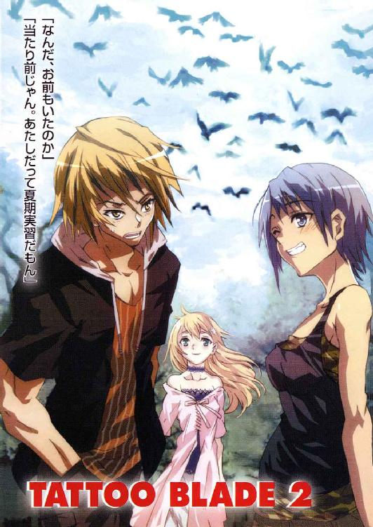
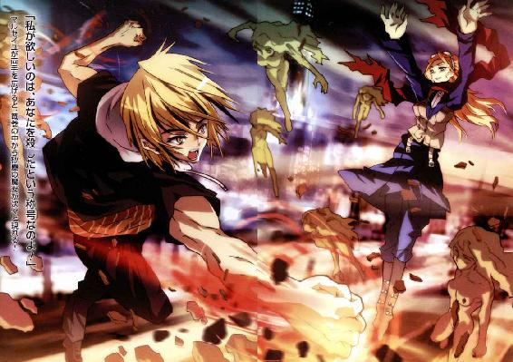
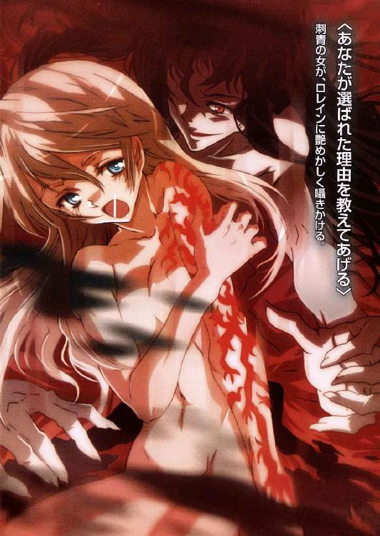
TATTOO BLADE ２
市川丈夫

富士見ファンタジア文庫
本作品の全部または一部を無断で複製、転載、配信、送信したり、ホームページ上に転載することを禁止します。また、本作品の内容を無断で改変、改ざん等を行うことも禁止します。
本作品購入時にご承諾いただいた規約により、有償・無償にかかわらず本作品を第三者に譲渡することはできません。
本作品を示すサムネイルなどのイメージ画像は、再ダウンロード時に予告なく変更される場合があります。
本作品は縦書きでレイアウトされています。
また、ご覧になるリーディングシステムにより、表示の差が認められることがあります。
口絵・本文イラスト 上田夢人
【序章】
この場所に来てから、どのくらいの時が過ぎたのだろう。
男は、もうそれすらも忘れてしまった。
長い眠りによって時間の感覚は失われ、過去の記憶も薄れた。
自分が何者なのか、現実に存在しているのか、自問さえした。
ただ初めてここに連行された時の事は覚えている。
あの時、男は一糸まとわぬ姿だったのだ。
「明るい所は苦手のようだね、追放されし者」
誰かに呼ばれて、男は意識を取り戻した。
その瞬間、あまりの眩しさに目を覆ってしまう。
辺りは一面の純白。床や壁の区別すらつかない。
虚無と呼ぶにふさわしい空間で、男は苦痛にのたうった。
「ここはどこだ......エル・パソの警察署？ それとも監獄か？」
「そのどちらでもない。ただ先に言っておくが、エル・パソからは遠く離れた場所だ」
「お前は......誰だ？」
声の主を探そうと、男は無理矢理目を開いた。
すると間近に、黒い軍服を着た男が立っている。
まだ二○代。自信にあふれる瞳は、強い眼光を放っていた。
端整な顔立ちだが、その頰には長い傷跡が走っている。
金髪を揺らした軍人は、狡猾極まりない笑みを向けた。
特権階級の白人が見せる、あの優越的な表情だ。
「うせろ、白ん坊に用はない」
「御挨拶だな。私の名前はオットー・スコルツェニー」
軍人は、慇懃に名乗った。
「君のような人物が大勢必要でね。悪いがクスリで君を眠らせ、ここまで連れてきた。なあに、迷惑だと感じるのは最初だけだ。やがて君は私に感謝するだろう」
「ふざけるな、俺が白人に感謝するだと」
全裸の男は、喉から暴虐を解き放った。
自分を見下す者には、何人であろうと制裁を加える。
彼は暴力に彩られた人生そのままに、軍人めがけて拳をふるった。
だが純白の光がさらに強まると、男は唐突な激痛に身悶えた。
純白の床にのたうち回り、喉を搔きむしって嘔吐する。
その様を、スコルツェニーと名乗った男は冷ややかに見下ろした。
「安心したまえ。私は君に危害を加えるつもりはない」
「......だが勝手に俺をニューメキシコ州から連れ出したな」
「そうだ。そしてここはアメリカ合衆国ですらない」
「だからどこだと聞いてるんだ」
スコルツェニーの唇に、冷酷さがちらついた。
「民族の夢をかなえるため用意された約束の地」
「なんだと......」
「我々が第四帝国と呼ぶ、ささやかな島だよ」
男の逞しい胸板に、スコルツェニーが掌を当てる。
「苦しいだろうが、今少し我慢してほしい。決壊を引き出すには、この方法しかない」
「俺の決壊......？」
あえぐように問うと、スコルツェニーは口元を緩めた。
「君が見ているこの光は、現実の光ではない。これは君に向けられた無数の敵意だ。憎悪だ。今君は、君を迫害した人々の意志に囲まれているのだよ」
言われた途端、男の脳裏に幾万もの光景が噴出した。
失業が蔓延する居留地。父親は酒に溺れ、母親は一日中働き通しだった。
その母親も白人の車に轢かれ、わずかばかりの保険金に化けた。
白人への憤激が日毎に高まり、そしてあの印が現れた。
最初の犯罪。荒れ狂う性欲が、白人女を蹂躙する。
そして部族からの追放。後は暗黒に逃げるだけだった。
「あああああああああああああああっっ！」
男が吐き出した絶叫には、悔恨も自責の念もない。ひたすらな憎悪。
それを感じたのか、スコルツェニーは安らかな表情を浮かべた。
「見込んだ通りだ。その憎悪があればこそ、刺青は刻まれた」
すると男の胸には、禍々しい刺青が現れ出でた。
蠢き、思考し、憎悪に満ちた生ける蝙蝠の絵が。
一五年前にそれが突然浮かび上がって以来、男の暴虐に拍車がかかったのだ。
スコルツェニーは、その日々さえも知っているようだった。
「はけ口を求めても得られない日々......それが長く続いたな。しかし光を恐れて、闇に逃げ込む必要はもうない。私が、君の刺青に闇を与える。そして刺青が君の身体を乗っ取れば、君は魔群としての力を得る。その資格が君にはあるのだ」
「あああああああああああああああっっ！」
「受容せよ、古に解き放たれた魂を」
見る間に、男の身体から暗黒がほとばしった。
それは周囲の純白を塗り潰し、本来の世界を浮かび上がらせていく。
「ス、スコルツェニー様あああああっっ！」
全裸の男は、いつの間にかそう叫んでいた。
満足げにスコルツェニーも、彼の手を握りしめる。
「それでいい。新たなる我が冥界魔群よ」
絶叫が途絶え、やがて静寂が訪れた。
あれからどのくらい時が流れただろうか。
男はずっと、暗い静寂の中で待ち続けた。
自らの力を試す時を。自分に力を与えてくれた帝国に奉仕する時を。
そして覚醒を告げた声は、やはりあの男の声だった。
「長き眠りの時は終わったぞ、追放されし者よ」
スコルツェニーに呼ばれ、男は闇から立ち上がった。
金髪の軍人はあの時と同じまま、酷薄な美貌を保っている。
跪く男に、スコルツェニーは冷たい息を吐いた。
「いよいよ我ら三位一隊の出番だ。存分に働け」
男の身体は火照っていた。いや、熱くたぎっていたのだ。
長年の眠りで溜まった暴虐が、敵を求めている。
スコルツェニーも、渇望をことのほか喜ぶかに見えた。
「相手はお前に打ってつけの男だ。そして帝国の宿敵でもある」
「と言うと？」
「忌まわしき血を操る、とだけ言っておこう」
男は、嬉しげに唇を舐めた。
「血を操るのは俺の方だ」
「それでいい。下がれ、総統がお見えになる」
言ったスコルツェニーは、背筋を伸ばした。
闇の奥から、足音も立てずに人影が進み出てくる。
その人物から放たれるのは、圧倒的な畏怖の波動。
第四帝国総統は、二人の魔群に深いため息を吐いた。
「スコルツェニー、ようやくか」
「はっ。ゲンツの失態以来、機会をうかがっておりましたが、ようやく私が望む作戦を実行できる環境が整いました。今度こそ必ず」
「君が望む作戦と言う事は、当然欺瞞だな」
総統の問いに、スコルツェニーは傷痕を揺らせた。
「無論です。いささか詐欺まがいの作戦ですが、人を騙すのは私の天分ですからな。見事奴らの懐に忍び込んで御覧に入れましょう」
「ゲンツの轍は踏まぬ」
「正攻法は好みではない、と申し上げます」
スコルツェニーは姿勢を崩さず、先を続ける。
「ロレイン・ローゼンブルグは彼方への門となられました。鍵と交われば門は開く。しかしあの刺青が育てば、鍵が無くとも門は開くはず」
「その通りだ。だからこそ奪うのではなく育てよ、スコルツェニー。あの刺青が少女の肉体を乗っ取れば、門は開き、我らも彼方へ帰還できるだろう。その時を早めるのだ」
御意。スコルツェニーは一礼した。
「時は我々の味方です、総統閣下。刺青は放っておいても育ちはする。しかしせっかくの蕾だ。我ら三位一隊の手で闇を与えれば、より早く華やかに咲くでしょう」
総統はその言葉に微笑んだが、やがて口元を結んだ。
「だが鳳凰寺の一族、まともにぶつかって勝つには少々手強いようだな」
「それに関しても問題はございません」
スコルツェニーは、控える男を指し示した。
「彼ならば、鳳凰寺大牙の弱点をつくのも容易と思われます。まず勝てるかと」
総統の視線が、男に注がれる。背骨が砕けるような怖気。
やがて総統は、凍えるような怨念を絞り出した。
「頼もしいぞ。かの一族の血、絶やせ」
総統に命ぜられ、男は黙って平伏した。
だがこれほどの人物に頼りにされた事実に、胸中では狂喜している。
男は生まれて初めて、信頼を得たのだ。
【第一章】
八月を迎えた東京は、亜熱帯の気温に覆われていた。
東京の中心に位置する永田町とて例外ではなく、蟬の声が耳に突き刺さる。
だがこの一室には、外界の暑さも喧騒も届いては来ない。
その代わり冷たい静寂が、居並ぶ人々を包み込んでいた。
〈私もまた新たな適応体を得て帰ってくる！〉
円卓の上で、不気味な立体映像が絶叫した。
〈必ず帰ってくるぞ！〉
黒い蒸気。続いて爆光。映像がかき乱れる。
やがて細い指が、立体画像を停止した。
「以上が、築地駅地下での戦闘です」
首相官邸会議室。迫水玲子は、静かに席から立った。
「録画したのはチーム・アスカロン。多大な損害を被り、民間人にも犠牲者を出しましたが、Ｂの撃退には成功しております」
長い黒髪を揺らし、円卓に集う人々に視線を向ける。
ビジネススーツに身を包んだ彼女は、ひと呼吸置いた。
「事件についても、完全に秘匿が保たれております。Ｂの痕跡は全て回収いたしました。神宮学園医大、浜離宮についても同様です」
「機密敵対存在......Ｂか」
つぶやいた外務大臣は、ハンカチで口を押さえている。
無理もないわ、と玲子は思った。
玲子が見せた立体映像には、生贄が殺戮され、取り込まれる様も映っている。
無残な映像は、玲子の組織としても初めて録画に成功した奴らの実像だった。
警視庁国際犯罪捜査官であると同時に、玲子が属する組織。その名はジーゲン機関。元々はナチス戦犯の捜索が目的であった。
しかし今、玲子たちが追っているのは、人ならざる存在なのだ。
「迫水警部補、なぜ今日本が狙われたのだ？ しかも、こうまで大っぴらに」
「理由は、鳳凰寺一族の存在です」
玲子は、国家公安委員長に断言した。
「鳳凰寺一族はＢに対し、唯一対抗できる存在です。その一族の後継者が育ちました。Ｂはこれを抹殺すべく、これからも日本に来ると考えられます」
「諸刃の剣か。彼らは頼りになるが、彼らのせいで狙われる」
国家公安委員長は、顎をさすった。
「では鳳凰寺家に同居している少女が襲われた理由はなんだね？ この......ロレイン・ローゼンブルグという娘だ。Ｂは、まず彼女を奪おうとしたようだが」
「人質にするつもりだったのでしょう」
玲子は、悟られぬよう真実を隠した。
「後継者の少年は、ロレインと特別な感情で結ばれています。Ｂはそれを利用して、後継者の抹殺を謀ったのです」
「Ｂに狙われるような特別な理由は？」
「今のところ、確認できておりません」
噓は言っていない。だが隠している事はある。
全てを日本政府に伝えるつもりはなかった。
玲子は警視庁の国際犯罪捜査官だが、今はジーゲン機関の人間なのだ。
「ジーゲン機関は、国連常任理事国に対してＢ号指令の発動を要請いたします」
玲子は、閣僚の中心人物に視線を向けた。
「特に日本に対しては、第一種の警戒態勢に入るようにと。築地事件を上回る、大規模な災厄も予想されます。総理におかれましては、速やかな御決断をお願い申し上げます」
そう言われて、背広姿の男は椅子にもたれる。
「Ｂ号指令とはねえ......」
まだ五○代の、内閣総理大臣は不意に笑った。
彼の前には、大きくＢと記されたファイルが置かれている。
「まさか私の代で発動するとは思わなかったよ。歴代総理から引き継いだ物の中では、間違いなくこいつが最悪だな」
そして玲子に視線を向ける。
「国民を巻き添えにしてはならんよ」
「そのためにジーゲン機関は、三○年近く備えてきました。ファイルにありますように、Ｂ号指令第一種警戒態勢に従い、各省庁の行動をお願いいたします」
首相は立ち上がり、円卓の閣僚を見回した。
「ただ今をもってＢ号指令第一種警戒態勢を発動する......官房長官」
「はっ。情報統制に関しましては、Ｂの脅威が重大すぎると考え、なお秘匿を継続いたします。ただし故意に情報を漏洩させる事で、Ｂの存在を徐々に浸透させる予定です」
「世論作りは任せるよ。国民もいつかは知るだろうからな。法務大臣？」
青ざめていた男も、背筋を伸ばした。
「はい。まずＢの国内侵入を防ぎたいと考えますが、探知は現在不可能です。しかし尖兵であるＩについては水際で侵入を防ぐ考えであります」
法務大臣は、手元の資料をめくり始めた。
「取り急ぎ、入国管理手続きを強化いたします。Ｉを探知するため、国際空港に設置するのは、ジーゲン機関から提供された、ええと......」
「液状寄生体探査器です」
玲子が代わって返答した。
「頭蓋骨に寄生したＩを発見できます。しかしＩがすでに国内にいる場合は......」
「それは今年度の国勢調査を利用する」
強面の総務大臣が、きっぱりと言った。
「不審な外国人が確認され次第、頭骨探査を強制する。日本人に関しても、健康診断時に頭骨のレントゲン撮影を義務づけるよう厚生労働省と調整中だ」
手回しが早すぎる、と玲子は微笑んだ。
この機会に総務大臣は、不法滞在者の摘発もやりたいのだ。
明らかな越権行為だとしても。
「しかしＢの探索は不可能だ。有事は避けられぬだろう。これからは防衛庁と国家公安委員会の意見を最優先とする。法整備に関してもだ」
総理の言葉に、自衛隊の統合幕僚会議議長が起立して一礼する。
誰もが、戦時という言葉を意識した。
その横では国家公安委員長が、警察庁長官から耳打ちを受けた。
「迫水君、君の権限も強化される。本日付で警視監に昇進だ」
国家公安委員長が、静かに告げた。
「ただし一時的昇進だ。辞令も出せんよ。五階級特進なんて公表できんからな。本来なら方面本部長クラス......二○代では絶対に就けぬ役職だぞ」
「承知しております」
「加えて内閣情報調査室に出向だ。事態が終わるまでな」
いつ終わってくれるのだろう、この事態は。
玲子が思った時、総理は大きく息を吐いた。
「ジーゲン機関の要請により、すでに財務省も緊急拠出を行っている。Ｂに対抗する兵器を開発する資金だそうだね」
「はい、国連常任理事国に負担をお願いいたしました」
「だが我々が最も頼りにできる兵器は、鳳凰寺一族だ」
閣僚たちの視線も、玲子に向く。
総理は、おもむろに問いかけた。
「その少年は、今、どこで何を？」
玲子は、にっこりと微笑んでみせた。
少年は、闇の中にいた。
ボクサーパンツ一枚身に着けただけで、肉体はほぼ剝き出しだ。
その鍛え上げられた肉体には、無数の傷が走っている。
特に新しい傷痕は大きく、深く、刻みつけられていた。
それでもなお、少年の肉体は美しく見える。
僅かな贅肉も無く、研磨に研磨を重ねた刀剣の如き身体。
漆黒と黄金の髪は、高貴な肉食獣のたてがみを思わせる。
髪からのぞく瞳も、刃のような視線を放っていた。その視線の先に......
「......また会えたな」
ロングコートの男が現れた。壮年。右手は、ミイラの如く干からびている。
陰鬱な笑みを浮かべ、男は少年の名を呼んだ。
「今度こそ貴様を葬ってみせよう、鳳凰寺大牙」
「天界魔群、ゲンツ・クァダール」
少年も、相手の名を知っていた。
いや知っているどころではない。少年にとっては母親の仇なのだ。
すると少年の背後に、新たな気配が立ち上がった。
「逃がしはせぬぞ、お前さんを」
現れた老人は、口元から涎を垂らした。
「わしらの遺産呪門、同時にかわせるものか」
「冥界魔群、ヴォウ・グエン・イアン」
少年は、老人の名も知っていた。
だが続けざまに、今度は赤いスーツの女が浮かび上がった。
「我ら三位一隊が力を合わせれば、二度の敗北はないわ」
妖艶な視線で、両腕を左右に広げる。
「骨まで焼き尽くしてあげる。あなたは負けるわ」
「冥界魔群、カタリナ・アルメイダ」
少年が身構えると、包囲する三人に異様な力が湧き起こった。
まず妖女カタリナの腕に突然、燃え盛る炎が巻き付いたのだ。
蛇のように蠢く灼熱を手に、カタリナは柔らかな唇を舐める。
続いてヴォウ老人の肉体から、鈍い音が聞こえてきた。
なんと彼の横腹から、爬虫類めいた前脚が生えたではないか。
続けてゲンツが、枯れた右手を一閃する。
次の瞬間、彼の手にはどこからともなく黒いサーベルが現れた。
漆黒の切っ先を少年に突きつけ、ゲンツは目を細めた。
「勝負は一瞬で終わる。楽に死ねるぞ」
三人とも人間ではない。人の姿をした魔物。魔群と呼ばれる存在。
そして少年は以前、彼らと戦った事がある。
それどころか、三人を殺したのは少年自身なのだ。
なのになぜ、もう一度対峙しているのか？
少年だけは疑問に思わず、己の力を解放した。
「俺はそんなに優しくない。楽には殺さないぜ」
言い終わる前に、カタリナが両腕を交差する。
腕に絡みついた炎の蛇が、勢いよく少年に躍りかかった。
しかも斜め後方から。視界の外。突風のように速い。
だが少年は振り返りもせず、素早く垂直に跳び上がった。
爆炎を越えた少年は、魔群の包囲網の外へ退いていく。
「逃しはしない」
カタリナは腕を振りぬき、再び炎の蛇を射出する。
すると少年は、両腕を×字に交差させ、その場に踏み留まった。
無謀としか思えない。炎は、遠慮なく突っ込んでくる。
真正面から炎とぶつかり、少年は焼き尽くされた......かに見えた。
だが少年に喰らいついたはずの炎は、悲鳴を上げて四散していく。
少年の腕が黒い閃光を放ち、まるで防壁のように炎を弾き飛ばしたのだ。
「玄武の盾を使ったか」
カタリナは、少年の力を言い当てる。
しかし少年は答えもせず、己の体内に駆け巡る力を急転させた。
腕に宿った漆黒の閃光が、一瞬にして純白へと変わる。
そして振り向き、間近に迫ったヴォウ老人の脳天に手刀を振り下ろした。
「いええええいいっっ！」
裂帛と共に、手刀が老人の頭蓋にめり込んだ。
白光する一撃は、そのまま老人の顔面を割り、胸元も切り裂いていく。
人体を豆腐のように両断する、少年の膂力！
背後から奇襲を狙ったヴォウ老人は、逆に血潮を撒き散らした。
その血潮、機械油じみた虹色。人外の血だ。
「び......白虎の拳......！」
頭蓋を真っ二つに裂かれながらも、その口は断末魔を叫んでいる。
黒い蒸気となってかき消える様も、魔群の名にふさわしい。
だが間髪を入れず、蒸気の中から黒いサーベルが少年に襲いかかった。
「まだ二人いるのを忘れるな」
ゲンツは黒い蒸気に身を隠し、少年の間近まで迫っていた。
背後にもいつの間にかカタリナが走り、炎撃を紡いでいる。
しかしサーベルと炎の蛇に挟まれてなお、少年は悠然と言った。
「止まって見えるぜ」
そして少年は、忽然と姿をくらました。
まるで今まで存在しなかったかのように、気配すら消したのだ。
慌ててゲンツはサーベルを引き戻し、カタリナは炎を手繰り寄せる。
そして二人の魔群は、真っ暗な頭上に視線を向けた。
「蒼竜の翼か！」
確かに、少年は暗黒に飛翔していた。
青い閃光をたなびかせ、猛禽めいた視線で魔群たちをとらえる。
そして急降下と同時に、彼の手に長大な真紅の刃が生まれ出た。
それこそが、魔を斬り払う閃光の刀身。少年の力の結晶。
少年は真っ赤な刃で、ゲンツに斬りかかった。
「貴様っっ！」
速すぎる。太刀筋は目にもとまらず、回避を許さなかった。
かろうじて上体を逸らしたゲンツだが、胸元を一刀が裂く。
ゲンツが苦痛を嚙むと、傷口から黒い蒸気があふれた。
少年は短く咆哮を吐き、着地するや刃を撥ね上げた。
とどめの一撃。しかし彼の背後には、カタリナが肉薄していた。
「愚かしい！ 背中が空いて......！」
だがカタリナの叫びも、そこで終わった。
少年が素早く、右回し蹴りを妖女に叩き込んだのだ。
しかも丸めた足の指先は、先ほどの白い閃光を放っている。
つま先は白刃の如く、カタリナの喉元を真横に薙ぐ。
次の瞬間、妖女の口元から虹色の血が噴きこぼれた。
「白虎の拳を......足に......」
カタリナが崩れると、少年はゲンツに視線を戻した。
すでにゲンツはサーベルを振り上げている。
少年も摺り足で間合いを測り、息を鎮めた。
「......斬り刻む」
ゲンツの断言に、少年もうなずく。
「じゃあ俺もだ」
両者の間合いが重なり、始まった。
ゲンツの両腕が、猛速で回転する。
サーベルを振り下ろし、突き上げ、再び振り下ろす。
あまりの速さに、一太刀一太刀を目視するのは不可能だ。
一撃が襲うたび、地が揺れ、風が叫び、闇が震える。
しかし少年も、ゲンツの太刀筋を正確に受けきっていた。
真紅の刃を縦横に振るい、重厚な一撃を受け流している。
剣撃の音すら追いつかず、閃光だけがぶつかり合う決闘。
そして両者は、いったん刃を退いた。
「......そうだよな」
不意に、少年は笑った。
「あんたは確かにそうやって戦った。ちゃんと覚えてるぜ」
そして正眼に切っ先を据える。
「だからもう一度戦えるんだよ」
ゲンツは黙して、前に跳んだ。サーベルに体重を乗せ、少年の脳天に振り下ろす。
しかし少年は素早く斜めに走り、一撃を寸前で回避した。
そしてすれ違い様、真紅の刃でゲンツを薙ぎ払う。
上半身を斬り飛ばされたゲンツは悲鳴も上げず、闇の中にかき消えた。
「鳳凰の刃......」
自分の刀身を見下ろし、少年はふうーっと呼吸を吐いた。
「だいぶ手に馴染んだ気がするぜ」
そして少年は、左右の目を開く。周囲にもう暗黒はない。
そこは少年が住み慣れた自宅の、板張りの道場であった。
夏の朝。日の光がたっぷり射し込み、蟬の声も聞こえた。
「......まあまあだな」
呼びかけたのは、少年の祖父である。
道場に座す皺深い巨漢、鳳凰寺無頼は孫を見据えた。
「一人稽古もそこまでできれば十分だぜ」
少年、鳳凰寺大牙も板敷きに正座する。
その手には、もう鳳凰の刃もなかった。
全ては彼のイメージトレーニング。しかし単なる空想ではない。
大牙は二か月前に戦った相手の力量を、正確に再現してみせたのだ。
しかもどのような間合いで、どのような手を打つか、呼吸から戦術癖に至るまでだ。
これぞ鳳凰流闘武術。古来より鳳凰寺家に伝わる魔を斬り払う法。
そして彼、鳳凰寺大牙こそ、この闘武術ただ一人の後継者なのだ。
「俺の中に......」
大牙は、自分の胸に手を置いた。
「......殺した相手が棲みついた気がする」
「それが命を取るって事だ。文字通りな」
足を崩して、無頼老人はうなずく。
「命は斬り捨てるな。取り込むんだ。獣を殺して肉を食い、成長するように」
それにしてもよ、と無頼は笑った。
「ずいぶん容赦のない踏み込みを覚えたな。間合いの取り方も悪くないぜ」
「一度戦ったおかげだな」
大牙も、我に返って言う。
「俺はずっと、自分の敵がどんな奴か知らなかった。だから初めて魔群と立ち合った時は怖かったさ。でも今は違う。俺は魔群と戦った。そして奴らの力を知ったんだ」
あれから二か月。大牙は魔群の力と向き合い、研鑽に努めた。
三体の魔群を軽くあしらえる程度までに。
「これは命の取り合いだ。負けたら死ぬ。魔群に容赦はいらねえよ」
「そうだな。それにあの子を、守らなくちゃいけねえし」
無頼が言うと、母屋の方からぱたぱたと足音が聞こえてきた。
「大ちゃーん、お祖父ちゃーん、朝ごはんよー」
間延びした少女の声が呼んでいる。
「ねえ、早くうー。お味噌汁冷めちゃうからー」
祖父はやれやれと言い、道場から立ち上がる。
「夏休みの間は料理を任せてって言うが......昨日なんざ、ブルーチーズの浮かんだ味噌汁じゃねえか。あれをおかわりできるのは、お前だけだぜ」
大牙はただ一礼し、呼吸を整える。
今朝も、彼女の無事な声が聞けた。
彼女こそ、大牙が強くなれた一番の理由なのだ。
大牙は、神宮外苑のベンチに座っていた。
国立競技場を抱える広大な敷地は、都心には珍しく緑が多い。
高級店が軒を連ねる青山通りに接し、渋谷・原宿にもほど近い。
その閑静な木陰で、大牙は革張りの本に目を通していた。
ブルワー・リットン著、『来るべき民族』。
それは彼の戦いに必要になると、貸し与えられたものだった。
「なるほどね......」
大牙は二か月前、初めて魔群と名乗る存在に襲われた。
そして魔群に対抗できるのは、鳳凰流闘武術しかないと知ったのだ。
さらに自分の母親が魔群に殺されたと知った。
当時の記憶が自分に焼きつき、悪夢となった事も分かった。
しかし大牙は自分の恐怖を拭い去り、魔群を撃退したのだ。
それでも、戦いは始まったばかりにすぎない。
魔群は一○八も存在すると言い、再び現れるのは間違いなかった。
なぜなら魔群には目的があり、彼らの狙いは......
考えて、大牙は大きなため息を吐いた。
「しかし、なんだってあんな刺青が......」
「一人言か、大牙？」
「うわああああっ！」
背後からの声に、大牙は慌てて本を落としそうになった。
「い、いきなり声をかけるな！ こんな所で何をしてんだ！」
「見れば分かるだろう。サッカー部の夏期練習だ」
憮然と言ったのは、同じクラスのサッカー部員だった。
私立神宮学園高校普通科二年Ａ組。それが大牙のクラスだ。
学校はこの神宮外苑に位置し、今は夏期休暇に入っている。
知った顔のサッカー部員は、後ろに後輩を引きつれ、その場で足踏みを続けている。
「お前のような運動神経の持ち主が、昼日中から本を読むとはいかんな。どうだ、我々と一緒に健康的な汗を流してみないか。そしてサッカー部に入ってくれると、俺たちとしては涙がちょちょぎれるほど嬉しい」
「鳳凰寺先輩、お願いしまッス」
サッカー部と言うより相撲部的な後輩が一礼すると、大牙は顔をしかめた。
「何度言ったら分かるんだよ。俺はスポーツは嫌いなの」
大牙の天才的な運動能力は、誰もが認めている。
だが大牙自身は、一切部活動もやらず、隠れて闘武術の修行に打ち込んでいた。
今すぐどんなプロスポーツでも活躍できるのに......変な奴だとの評判は、すでに校内に広まっていた。
「まさか大牙、今から受験勉強ではないだろうな。Ｊリーグがお前を待ってるぞ」
「待ってるのは俺の方だ。ロレインの奴も夏期実習だからさ、迎えに来たんだよ」
大牙は、目の前の校舎を指さした。神宮学園高校の看護科だ。
五年一貫教育で、看護師を目指す生徒が通っている。
だが大牙の言葉を聞いた時、サッカー部の視線がぎらついた。
「今なんと言った、大牙！ ロレインちゃんも登校しているのか！」
「あ、ああ。授業は三時までだから、そろそろ出てくるはず......」
「全体駆け足止めーい、いち、にいっ！」
今までよりずっと素早い動きで、全員が停止する。
そして汗臭い興奮と期待が、サッカー部員たちに漂った。
「先輩、ではついにロレインちゃんに会えるのでありますか？」
「慌てるな。これはサッカーの神が俺たちに与えてくれた千載一遇のチャンスだ。普段、校舎の違う俺たちが、ロレインちゃんに直接お願いできる絶好の機会だ！」
おおと言うざわめきと、むっと臭いたつ熱気。
大牙は本を閉じて、サッカー部に向き直った。
「あのな、言っとくけど例の話だったら......」
「お前は黙っとれ！ いつも遠くから眺めるだけの神宮学園の天使に、今日こそ俺たちの思いを伝えるぞ！ 信ずれば、願いはきっとかなうのだ！」
大きくうなずく後輩を前に、サッカー部は拳を握り締めた。
「野球部やバスケ部に取られてなるものか。我々サッカー部こそ、ロレインちゃんの美を最も理解しているのだ。それが証拠に見ろ、この新チアリーダー案を！」
一人どころか、全員がイラストを突きつける。
美少女の群れに囲まれ、大牙は後ずさった。
「てめえら、会った事も無いくせに妙にうまい絵を......だいたいその猫耳はなんだ！ こっちは巫女さんで、そっちはアンミラか！ これはただのコスプレ......」
「いいや、心優しいロレインちゃんならば、必ずや俺たちの衣装を着てくれるだろう！ 全員、看護科校門前に整列！ ロレインちゃんに土下座の用意！」
「やめろ、普通科の恥だ！ つーか、サッカーをしろ、サッカーを！」
「なんの、ここが我がサッカー部の正念場うわわ、大牙、放さんか！」
「放してたまるか、お前らもどけ、一年坊主！」
「鳳凰寺先輩、自分、前からロレインさんに憧れてるッス」
「憧れだけにしとけ、憧れだけに！ だいたいお前ら......」
そして、大牙がサッカー部十数人を押さえ込もうとした時だった。
「うふふふっ......何してるの、大ちゃん？」
薄いピンク色の夏服が、日差しに輝いている。
そして眩しく艶めく長い金髪。コバルトブルーの瞳は、真夏の海を思わせた。
小柄な少女はにっこりと笑い、嬉しそうに手を振っている。
屈託のない笑みに、サッカー部員たちはその場でとろけた。
その微笑の主こそ、ロレイン・ローゼンブルグだった。
大牙の幼馴染にして、一緒に暮らす同居人である。
「い、いやあ何でもねえよ、気にするな」
サッカー部の口を塞ぎ、大牙は微笑んだ。
未だにこの子に対しては、野性をぎらつかせる気になれない。
「普通科の奴らだよ、練習の途中に通りかかっただけだ」
「まあ......暑いのに練習なんて大変ですね」
言ってロレインは、一同に笑いかけた。
「でも、あまり無理しないでくださいね。倒れたら大変だもの」
「おお、ロレインちゃん！」
サッカー部は涙すら流し、大牙の手を振りほどいた。
「あなたの慈愛に甘えて、是非このチア......ぐふっ！」
そこまで言って突然、サッカー部は意識を失った。
倒れた男をベンチに横たえ、大牙は肩をすくめる。
「どうやら本当に日射病のようだな、かわいそうに」
「先輩っ、しっかりするッス！」
大牙は、慌てる部員たちを無視し、ロレインの手を引いた。
「さあ帰ろうぜ、遅くなるとみんな心配するしな」
「で、でもサッカー部さんが......」
「すぐに目が覚めるさ。さ、行くぞ」
大牙がすたすたと歩き出すと、その肩を軽くこづく者がいた。
「ちょっとお、あたしもいるの忘れないでよね」
「そっか、お前もいたのか、小川」
「当たり前じゃん。あたしだって夏期実習だもん」
大牙が振り返ると、ロレインの隣には小川美樹がいた。
ショートカットに、生意気そうな瞳。
ロレインと同じ看護科一年の美樹は、大牙を見上げた。
「ねえねえ、鳳凰流闘武術をむやみに使ってもいいの？」
「何だと？」
「だって今さ、あんたの指からサッカー部君に......もがが」
慌てて大牙は、美樹の口を塞ぐ。
ロレインはきょとんして、二人を見つめた。
「何してるの、大ちゃん？ 美樹ちゃんも顔、真っ赤よ」
「い、いや、何でもないさ。それよりさっさと帰るぞ！」
二人を引きずるようにして、大牙は木陰へ走りこんだ。
人気のないのを見計らって、ようやく美樹を解放する。
「げほっ......ちょっと、大牙！ 人間には新鮮な酸素が必要なのよ！」
「人前で鳳凰流なんて口にしやがるからだ！ 俺の力は秘密だって事、忘れるなよ！」
「そりゃあ分かってるけどさあ」
美樹は、大牙たちの秘密を知る数少ない人間であった。
そのために戦いにも巻きこみ、親友であるロレインは苦しみもした。
だが今は、すすんでロレインの護衛を引き受けてくれているのだ。
護衛と言っても、授業中ずっと一緒にいてくれるだけだが、大牙にとってはずいぶんとありがたい申し出であった。
「とにかくあんたの力は、ロレインを守るためにあるのよ。無駄遣いしたらだめでしょ」
「分かってるって。反省してますう」
「美樹ちゃんには頭上がらないのね、大ちゃんも」
くすくすと笑うロレインを見て、大牙の胸が痛んだ。
あれだけの事件があったのに、ロレインの笑顔は以前と変わらない。
無論、心配はあるはずだが、大牙や美樹に翳りを見せないのだ。
自分が悩めば、周囲はもっと悩むとロレインは知っている。
その思いやりが分かるだけに、大牙も心苦しかった。
「じゃあ、また月曜日ね。ロレイン」
美樹も察しているのか、親友の肩をぽんと叩く。
「夏期実習も来週までだからさ、もうひと頑張りよ」
「うん......あの、美樹ちゃん、明後日さ......」
「じゃあね、大牙！ ロレインの事、よろしく！」
美樹は手を振って、神宮外苑の歩道を駆けていく。
大牙もそれに応え......ふとロレインを見下ろした。
「明後日の日曜日、何かあるのか？」
「うん。誕生日なの、美樹ちゃんの」
二人は、中央線信濃町駅に向かって歩き出した。
「八月九日......だからね、大ちゃん、今日ちょっと寄り道してもいい？」
「そ、それは......だめだ」
痛む心をこらえて、大牙は言った。
「何かプレゼントでも買いたいんだろ？」
「うん。だって美樹ちゃんにはいろいろ迷惑かけたし、あの後もお世話になってるし......ねえ、お願い、大ちゃん！ 今日、新宿！ 一時間だけ！」
ロレインは、甘えるように腕に飛びつく。
崩れそうな意識を、大牙は必死に立て直した。
「いや、だめだ。お前は魔群に狙われてんだぞ。学校だけはいいけど、それ以外の時は家にいるんだ。繁華街で襲われたら、大勢の人が巻き添えになる」
「やっぱり、そうだよね......うん、分かってたの」
うつむいたロレインの顔は、無理に笑っていた。
珍しく、わがままを言い出すのも無理はない。
なにしろロレインは、二か月前の事件以来、厳重な監視下にあるのだ。
大牙が護衛につくのを前提に、学校と自宅の往復だけを許されている。
気晴らしが欲しくなって当然だが、大牙は気を緩ませなかった。
「美樹を家に呼ぶのも無理だぞ。鳳凰寺家が一番危ないんだ。いろいろ片付くまで、もうちょっと辛抱してくれよ」
もう十分耐えているロレインに、さらに我慢を強いるのは辛い。
しかし金髪の少女は、ぎゅうっと大牙の腕に抱きついた。
「うん。大ちゃんがそう言うなら、私、そうする」
そして澄みきった瞳で、大牙を見上げた。
「でも大ちゃんも無理しないで。一番大変なの、大ちゃんだから」
「俺は......」
言いかけて、大牙は吐息を吞みこんだ。
確かに、重い心労が大牙にのしかかっている。
いつどこで魔群に襲われるか分からない。恐怖と警戒心が休息する余裕も与えない。
それでも大牙に、目を離すつもりはなかった。
彼女は、大牙を悪夢から救ってくれたのだ。
鳳凰寺家は、都心の閑静な住宅街にある。
根津。上野公園と東京大学に挟まれた古くからある下町だ。
再開発を逃れたここには、未だに江戸の情緒が漂っている。
その古い路地に面した屋敷こそ、大牙の家であった。
古色蒼然とした門をくぐると、広い庭には数人の男が立ち働いている。
地味な作業着だが、いずれも屈強な肉体。しかも外国人ばかりだ。
その中の一人が、帰宅した大牙とロレインに気づいた。
「フェニックスとファーストレディ、到着。一五五○時」
男はインカムに告げ、大牙に一礼する。
フェニックスは大牙の、ファーストレディはロレインの暗号名である。
二人が母屋までたどり着くと、やはり作業着の男が振り返った。
「定刻を一五分過ぎてる。何かあったのか？」
「いろいろとな。それより今日は何の工事だよ、ハドレー少佐」
大牙は、長身のイギリス人に向かって言った。
「また違う所を掘り返してるだろ。いったい何を仕込むつもりだ？」
「対神経地雷、とでも説明しておこうか」
イギリス陸軍少佐、リチャード・ハドレーは端整な顔で笑った。
「脳神経に有害レベルの電磁波を送り込む仕掛けだ。有効半径に未確認の脳波が侵入すれば、起動して大脳を襲う。不死者には有効だろうと結論づけられた」
「そんなものを屋敷の庭に？ 物騒だな」
「邸内の電子機器には防性措置が施されている。影響は受けん。この屋敷の住人の識別脳波も読み込ませてあるから、誤作動も心配するな」
どこか嬉々としてしゃべるハドレーに、大牙は顔をしかめた。
「監視用戦術人工知能に、索敵用マイクロマシン、そして今度は対神経地雷か。最新兵器のオンパレードだな。俺んちを兵器展示場にする気か？」
「しかしこれでもロレインが守れるかどうか」
ハドレー少佐と作業着の男たちは、チーム・アスカロンと呼ばれる兵士である。
元々は各国特殊部隊から集められた精鋭中の精鋭。
現在はジーゲン機関に所属し、ロレインの警護と魔群の撃滅が任務だ。
だが定数十六名だったチームは、二か月前の戦闘で半減した。
指揮官であるハドレー以下、生き残った者は鳳凰寺家に起居している。
我が家の如く縁側に座ったハドレーは、冷えた麦茶を口にした。
「前回の戦闘では、魔群のデータが入手できた。結果はジーゲン機関装備研究本部に送られたが、まださしたる成果は上がっていない」
大牙とロレインも縁側に並び、作業の様子を眺めた。
「そっちには資金も？」
「つぎ込まれている。国連常任理事国は全て協力してるさ。対魔群兵器が欲しいのは、どこの国も同じだからな。いずれにしろ魔群研究は始まったばかりだ」
ハドレーが喉を鳴らすと、ロレインも両手で麦茶のグラスを持った。
「なんだか......話が大きくなってきて、私......」
困惑する金髪を、大牙はわざと乱暴に撫で回した。
「いいさ、ロレインは気にするなよ」
「うん。少し、心配になっただけだから」
要塞めいた配置図を眺め、ハドレーは顎をつまんだ。
「とにかくだ。打てるだけの手を打ち、ロレインを守る。それが我々の任務だ。現状でできる限りの防備を施す。やりすぎはない」
「ちっ、この前はロレインを見捨てようとしたくせに」
「もう同じ命令を下しても、従う部下はいないだろう。見てみろ」
ハドレーが言うと、歴戦の特殊部隊員がにこにこと笑っている。
それに向かって手を振るのは、ロレインだ。
二か月間、この屋敷で寝食を共にして、すっかり打ち解けたらしい。
もっともロレインの料理に手をつける猛者は、一人もいなかったが。
「我々も努力しているんだ、大牙。彼女を守るためにな」
ハドレーに言われて、大牙は麦茶を飲み干した。
その言葉が真実ならいい。だがもしロレインが......
すると不意に、背後で野太い笑い声がした。
「だがなあ、ハドレー。その後、魔群の動きもつかめてねえんだろ？」
「無頼師範......」
鳳凰寺無頼は、団扇をばたつかせて庭を見渡した。
「奴らの本拠地は南米だ。そっちから何か連絡はあったのかよ？」
「それが皆目......」
ハドレーは、面目なさげに頭を下げた。
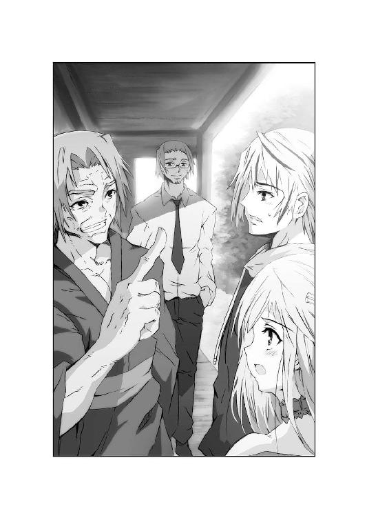
「我々アスカロンの他にも対魔群戦闘チームが動いているのですが、報告は何も」
「奴らも、鳳凰流の使い手が二人いると知った。そして二か月だ。謀を準備するにはもう十分だろう。動くならそろそろだぜ」
チーム・アスカロンも、作業を止めて縁側に集まる。
胡坐をかいた無頼老人に、ロレインは不安げな目を向けた。
「じゃあお祖父ちゃん、また魔群が私を......」
「さて、そこだ。先にロレインを奪いに来るか、それとも......」
大牙は察して、頭髪を搔いた。
「先に、俺たち鳳凰流の使い手を殺すかだな」
「そういう事だ。ま、俺が魔群なら先に大牙を殺しちまうな」
ロレインから麦茶を注いでもらい、無頼は言った。
「大牙と俺さえ死んでしまえば、もうロレインを守れる奴はいねえ。全力で俺たちを殺して、後は好き勝手にすればいいんだ」
「そんな......お祖父ちゃん、変な話よして！」
「敵を読まなきゃ戦いはできないんだよ、ロレイン。こればかりは仕方がない」
にやにやと笑って、老いた巨漢は肩を揺すった。
「問題は、どうやって俺たちを殺しに来るかだ。それを知るには魔群の情報がいる。ヴァルターに言っとけ。さっさとボルマンの居所をつかめってな」
ヴァルター・フォン・ディートリッヒ。
ドイツ連邦陸軍大佐にしてジーゲン機関の幹部。
南米で活動している彼こそ、大牙の父親だった。
だが幼い大牙を無頼老人に預けて以来、息子と会った事はない。
大牙がついに魔群と戦った後でも、訪ねてくる様子もなかった。
少年にとっては、父親はあまりにも希薄な存在である。
「......マルティン・ボルマンか」
大牙は、鬱屈を忘れるように敵の名をつぶやいた。
第二次大戦中、強大な権力を振るったナチス党の陰の帝王。
ベルリン陥落の混乱を脱し、戦犯追及の手も逃れて南米に逃走。
そして一二○歳の今なお、魔群として生き続け、ロレインを狙っている。
魔群ゲンツを送り込み、大牙の母みすずを殺したのもボルマンの画策だ。
だがなぜボルマンは、魔群の力を手に入れたのか。
その力に、弱点はないのか。あまりにも謎が多い。
そしてロレインの事も。
せめて手がかりだけでもつかもうと、大牙は最近......
「ああ、そうだ。本は返すぜ、ハドレー」
「『来るべき民族』だったな。なかなか面白い本だろう」
大牙が本を取り出すと、ロレインが小首をかしげた。
「ずいぶん古そうな本ね、大ちゃん？」
「初版は一八七一年。著者はブルワー・リットン。イギリスの小説家だ。ペンは剣よりも強し、って言葉を作った男だぜ」
大牙は、よどみなく答えた。
「物語は、地球の中心が空洞になってて、その地下世界に謎の民族が住んでるって話さ」
「へええ、大昔のＳＦ小説なのね」
「そしてその民族は、ヴリルと呼ばれる不死と破壊を自在にする力を駆使するんだ」
「そ、それってもしかして......！」
魔群かもしれない。大牙もそう思って読み通した。
しかし、より興味深い事実は、その先にあるのだ。
「問題は、この本をアドルフ・ヒトラーが読んでるって事さ。ヒトラーは、地下世界の実在を信じ、謎の民族とゲルマン民族が同一であると信じた。そして将来、来るべき民族として、超能力で世界を制覇するのもゲルマン民族だと考えたのさ。言わば、この本からナチスの暴挙が始まったと言ってもいい。もっとも、そんな考えをヒトラーに入れ知恵した人物は、他にいるんだが......」
「カール・ハウスホッファー。ミュンヘン大学の地政学教授だな」
ハドレーは、すらすらと後を続けた。
「ハウスホッファーは、オカルト的秘密結社『薔薇十字会』の一員で、ヒトラーにこの本を貸し与えた。そして地底世界を発見するため、探検隊まで組織させた男だ」
「で、でもそんな......」
ロレインは、おろおろして足下を見下ろした。
「地球の中が空洞なんてはずないわ。その本は作り話でしょ？」
「だけどな、ロレイン。ナチスはオカルト局まで作って、地底世界への入り口を見つけるため、南極やチベットに科学者を送り込んだんだ。そしてそのオカルト局の名前は......太古の遺産って言うんだよ」
ロレインが、ごくりと息を吞んだ。
「もしかして魔群が使ってた......遺産呪門と関係が？」
「俺にはそうとしか思えない。それにな、ハドレー」
大牙は、さらに怪しげな本を取り出した。
「学校の図書館で見つけた本には、ボルマンの基地が南極にあるって書いてあったぞ。南極には地底世界に通じるでっかい穴があるんだ。そこにボルマンは、ＵＦＯと基地を隠してるそうだぜ」
「ちょっと待て。その本を見せてみろ」
ハドレーは本を奪い取ると、笑いを嚙み殺した。
「矢島純二の『私はナチスのＵＦＯ基地を発見した！』だと？ こんな眉唾な本は読まなくて宜しい。混乱するだけだ」
「えっ、この本って噓なのか」
「所謂トンデモ本って奴だ。安心しろ。南極は何十年も前に調査済みだ。地底に下りる穴もなければ、ナチスのＵＦＯ基地もない」
「なんだよ。せっかくいい本を見つけたと思ったのによ」
不満げに言って、大牙はふと視線を上げた。
アスカロンの面々が、なぜか嬉しそうに微笑んでいる。
「なんだよ、何がおかしい？」
「いや、実にめでたい。お前もとうとう俺たちの仲間入りだ」
誰かが言うと、アスカロン隊員たちは拍手までしてくれた。
「俺たちもそうだったぜ、この任務に就いた時はな」
「ああ。世の中のオカルト本が全部真実に見えてくる。これは職業病なんだ」
ハドレーも、笑いを押し殺した。
「最初は混乱するだろう。虚構と真実がごっちゃになるからな。この非現実的な事態に対処するには、思考力も必要というわけだ」
「なんだよ、もお......俺は結構、真面目に読んだんだぜ。他にもたくさん......」
大牙は、読破した資料の入ったカバンを探った。
だがすでにその中身を、ロレインが夢中になって読んでいる。
「大変よ、大ちゃん！ ミステリーサークルもナチスの仕業だって！」
「あのな、ロレイン、今の話を......」
「ケネディ大統領が死んだのも、スペースシャトルが落ちたのも、死んだ牛から血が抜かれちゃったのも、魔群のせいかもしれないわ！ どうしよう！」
大牙は、困ったように顔を歪めた。
「参ったな、完全に信じてるぞ。ロレインは純粋なんだ。どうしようか」
「しかしお前も、まだ真偽の見分けはつかんのだろう？」
「まあな。そもそも魔群の存在自体が荒唐無稽なんだ。奴らを現実として受け入れたら、どんな噓臭い話でも真実に思えてくるさ」
そして大牙は、祖父を振り返った。
「爺ちゃんだってそう思っただろ？」
「馬鹿野郎。俺が資料なんて読むワケねえだろ」
いつの間にか湯飲みに清酒を入れ、無頼は豪快にあおっていた。
「調べりゃあ迷うからな。実情をヴァルターからもらう、それだけだ」
「だけどそれじゃあ......」
「真実ってのは、目の前にあるものだけだ。それを受け入れればいい」
無頼老人は、うまそうに酒を飲み干した。
「人に会うては人を斬り、仏に会うては仏を斬る。俺たちの役目はそれだぜ」
「魔群に会うては、魔群を斬る......か」
確かに、大牙の役目は戦う事だ。調査ではない。
だが大牙には、どうしても知りたい事がある。
その思いを見透かしたように、若い女の声が響いた。
「だめよ。大牙はまだそこまで達観できないって」
「玲子......」
「だからそこまで必死なんでしょ、ね？」
迫水玲子は、いつの間にか庭に入っていた。
強い日差しを手で遮り、闊達な足取りで歩み寄る。
「ロレインを救う方法、それを知りたいんでしょ」
「そりゃあ......そうだ」
大牙は、目を伏せる少女を見つめた。
魔群は、ロレインに刻まれた印に導かれている。
なぜこんな事になったか分からないが、是が非でも取り除いてやりたかった。
「いろいろな本を読んだが、あれに関する記述や情報はどこにもない」
大牙は、行き詰った声で言った。
「ヒントすら見つからないんだ。玲子、ジーゲン機関の方で何か分かったか？」
「何も。元々、魔群に関する情報は少ないけど、刺青に関しては魔群ゲンツたちの言動だけが手がかりよ」
大牙は二か月前の死闘を思い出した。
『結ばれれば、彼方への門は開かれる』
『この方こそ門なのだ。そして私は鍵となる』
『選ばれたのだよ、刺青にな』
ロレインは二歳の時、そして十五歳の今、二度も魔群に襲われた。
かつて大牙の父はロレインの死を偽装したが、それも見破られた。
だがなぜ、そうまでしてロレインを狙う？
「迫水さん、私......」
沈痛な顔でロレインが立ち上がると、玲子は腕を組んだ。
「分かってる。やはりあなたの身体を調べる必要があるわ。ジーゲン機関としてもそう判断して、調査チームを日本に派遣すると連絡があったの」
「それはいつだ？」
「すでにサンディエゴを出発済み。明日、横浜港に到着するわ」
玲子の答えに、大牙は眉を寄せた。
「ずいぶん急な話だな」
「派遣はずっと前に決定されてたの。あなたたちには伝えなかっただけよ。情報は直前まで隠しておきたかった。魔群にこちらの動きを悟られないためにもね」
玲子は、艶めく黒髪を搔き上げた。
「ジーゲン機関が所有する研究船クリティアス号で来日するわ。魔群生態研究の専門家、アルベルト・グラント博士が責任者よ。船内には魔群研究施設が完備してるから、そこでロレインの身体を調べさせてもらうわ」
大牙は、静かに縁側から立ち上がった。
「ロレインの身体には、魔群が狙う何かがある」
ゆっくりと玲子を冷たい視線で睨む。
「それはあんたらジーゲン機関は勿論、各国政府だって欲しがる情報のはずだ。まさかロレインの身体を、魔群研究の実験材料にするんじゃねえだろうな」
「できればそうしたいわね」
玲子は、涼しげな顔で言いきった。
「けど、安心なさい。ロレインの身体に刺青が刻まれた事は、まだジーゲン機関内だけの秘密にしてあるの。今日の日本政府への説明でも、ごまかしてきたわ」
「本当か？」
「噓は言わんよ、大牙」
ハドレーも身を起こして、力強くうなずいた。
「どうして各国政府への説明を、これだけ遅らせたと思う？ 検討を重ね、前回の戦闘映像を、こちらで加工していたからだ。ロレインが映った部分は削除、修正してある」
「それどころかロレインの情報は、ジーゲン機関内でも最高機密扱いよ。一部の幹部職員だけが知らされているの。彼女の情報を出すのは時期尚早だわ」
玲子は、ロレインの横に座って微笑んだ。
「各国政府は、魔群の存在に怯えているわ。けど鳳凰寺一族がいてくれるなら、少しは安心していられる。少なくとも撃退手段はあるんだから」
「けど、私を狙って魔群が襲ってくると知ったら......日本政府はどうするんですか？」
ロレインが問うと、玲子はため息を吐いた。
「それをあたしに言わせないでくれる？」
大牙には、想像がついた。
国内からの退去要請。無論、ロレインを受け入れてくれる他国はない。
それだけならまだいい。最悪の場合、存在の消去。
そしてもし情報が一般レベルにまで広まったら？
魔群に恐怖した暴徒が、ロレインを襲ってもおかしくはない。
ロレインさえいなくなれば......誰かがそう思っただけで惨事が始まる。
魔群の襲来よりも、むしろ恐ろしい光景だろう。
「まあ、今はまだ大丈夫よ。各国があなたを押し付け合ったり、逆に奪い合ったりすることはないの。そうなる前に、調べさせてくれるわね？」
「はい。私も......そうして欲しいと思ってたんです」
ロレインはそう言って、大牙を見つめた。
「大ちゃん、ずっと私を心配してくれるから......早く安心させてあげたくて」
大牙は、自分自身が情けなかった。
ロレインを気にかけるあまり、ロレインを不安にさせている。
自分の無力さを悟って、大牙はうなじを搔いた。
「じゃあ、いいんだな。ロレイン？」
「うん。大丈夫よ。平気平気、健康診断と同じよ」
少女は、いつもの笑みで答えた。
「それにずうっと、家と学校の往復ばっかりなんだもん。ちょっと飽きちゃった。明日、横浜まで行けるなら楽しみなぐらいよ」
「あのなあ......遊びに行くんじゃねえんだぞ」
大牙の言葉で、沈みかけた場がなごむ。
玲子も優しく、ロレインの手を握った。
「じゃあ明日は久しぶりに遠出するから、あなたの部屋で準備をさせて」
「分かりました。大ちゃん、晩御飯は......」
「ああ。俺が作っておくよ。久しぶりにな」
静かな歓声が、チーム・アスカロンから上がる。
それにも気づかず、ロレインは母屋の奥へと消えていった。
大牙は縁側に座り直し、八月の夕空を仰ぎ見た。
「修行が足りねえな、俺は」
「当たり前だ。お前の悩みぐらい、あの子はお見通しだよ」
無頼は呆れて、酒を注いだ。
「だから自分から行くんだろ。今さら言うのも何だがいい子だぜ」
その言葉に、誰も異論はなかった。
だからこそ、誰もが辛く感じているのだ。彼女の力になれない事を。
「じゃあ上だけ脱いでくれる？」
玲子に言われて、ロレインは夏服のブラウスを脱いだ。
ベッドの上でそれを畳み、恥ずかしそうに胸元を隠す。
その間に玲子は、拳銃に似た無針注射器を取り出した。
「心配しないで、痛くはないわ」
「は、はい」
「位置特定用の無害インクを注入するだけよ。インクは擬似マイクロマシンになってて、常時こちらに信号を送るようになってるわ」
玲子は、トリガーを指で確認して言う。
「あなたがどこに連れて行かれても、これを吹きつけておけば大丈夫よ」
「はい、腕でいいですか？」
おずおずとロレインが左腕を差し出した、その時だった。
「う......」
玲子は思わず手を止め、息を吞んだ。
ロレインの腕に、異様な刺青が浮かび上がったではないか。
長い髪を逆立て、豊かな裸身を躍らせた妖艶な女の肢体。
それが注射器を遮るように、ロレインの肌に現れたのだ。
しかもただの刺青ではない。
その女の唇は呼吸を吐き、そのたびにピンク色の肌が色艶を増していく。
注射器をにらむ視線は怒りをはらみ、玲子に向かって唸り声すら上げた。
生きている。ロレインの刺青は確かに生きているのだ。
「お気に召さないようね、この注射」
玲子が動揺を抑えると、ロレインも表情を曇らせた。
「普段はあまり動かないんですけど」
そう言うとロレインは、人差し指で刺青をとんとんとつついた。
すると刺青の女は、水中で身をひるがえすように向きを変える。
そのままロレインの腕を遡り、肩の辺りで止まってみせた。
玲子は思わず、ぎょっとする。
「ちょっと待って、あなたこれを......」
「いいえ、心が通じ合ってるわけじゃありません」
自分の肌を撫でて、ロレインは笑った。
「けど、これぐらいなら言う事を聞いてくれるようになりました。なぜかは分からないんですけど......」
注射器を置き、玲子は刺青を凝視した。そして腕時計の文字盤をそれに向ける。
走査機能を有した時計は、瞬く間に刺青の表面積を計測した。
「一週間前に比べて七％広がってるわ。その前の一週間のデータは、五％増加。少しずつだけど成長が加速してる」
玲子は、少女の瞳を見つめた。
「この話を大牙には......」
「言ってません。お祖父ちゃんにも......」
そしてロレインは、玲子の手を取った。
「お願いです、刺青が大きくなってる事、まだ大ちゃんに言わないでください」
「それはいいけど、いつかは......」
「これ以上、大ちゃんに心配かけたくないんです。だから......」
懇願する瞳が潤み、揺れている。
玲子は唇を嚙むと、ロレインの肩を抱き寄せた。
「分かったわ。でも覚悟だけはしといて。どんなに大牙が苦しむとしても」
「ごめんなさい、玲子さん......」
少女は、玲子の胸に顔を埋めた。
今はそれを抱きしめてあげるしかできない。
誰もが無力を嚙み締める、夏の午後だった。
強い日差しが、横浜の波間に照り輝いていた。
幕末の動乱期に生まれた横浜港は、今なお日本有数の国際貿易港である。
大半は商業港区・工業港区が占めるが、客船埠頭も決して小さくはない。
海に突き出た大桟橋国際客船ターミナルこそ、その代表格だった。
中央に出入国ロビーや大型ホールを抱えた外観は、優美とも言える。
大牙は車から降りると、そのターミナルに向かって大あくびをした。
「どれだよ、ハドレー。そのクリティアス号ってのは？」
「球形レーダーを備えた船だ。向こう側に接岸している」
続いて降りてきたハドレー少佐は、この暑さの中でもスーツ姿だ。
濃い色のサングラスをかけ、海から来る湿気に顔をしかめる。
「ジーゲン機関の動く研究施設だ。ハイテクの塊と言っていい」
ばらばらと降り立ったチーム・アスカロンも、全員スーツに身を固めている。
それでいて完全武装。武器も通信機器も巧妙に隠されていた。
各自が所有する銃には、不死者に効果のある凍結弾が装塡済みだ。
無論、乗ってきた三台の四ＷＤにも、至る所に武器が内蔵されている。
その一台からようやく、ロレインが顔を覗かせた。
「あの......もう出てもいいんですか？」
「オール・クリアだ。ファーストレディ、どうぞこちらへ」
安全を確認したハドレーが言うと、ロレインは海風を思いっきり吸い込んだ。
後から続く玲子は、横浜ベイブリッジを眺めて嘆息する。
「土曜日の横浜なんてねえ......」
「正直言えば、健康診断受けに来るとこじゃないな」
大牙の側で、ロレインも新鮮な海風を胸一杯に吸い込んだ。
「本当、気持ち良い......お祖父ちゃんも来ればよかったのにね」
「爺ちゃんは、検査の類が嫌いなんだと。八○過ぎてあの元気だからな。ジーゲン機関の科学者が見たら、確かにいろいろ調べたくなるさ」
しかし大牙は、無頼老人が来ない理由を察していた。
二か月前の戦いで負った傷が、恐らくまだ癒えていないのだ。
鳳凰流闘武術は、活法と呼ばれる自己治癒能力も有している。
無頼ほどの達人ともなれば、その効果も強いはずだ。
だが年齢が年齢だ。回復力に遅れが生じても無理はない。
それを周囲に感じさせぬのが、無頼のプライドなのだろう。
「どいつもこいつも意地張りやがって......」
大牙は、小さくつぶやいた。
みな打ち解け合っているように見えて、誰一人本音で話してはいない。
誰もが悩みや苦しみを抱えて、それを見せまいとしている。
周囲への思いやりか、くだらない虚勢か。たぶん、その両方だろう。
大牙は、親子連れやカップルでにぎわう山下公園を一瞥した。
「とにかく遊びはお預けだな。だいたい俺もロレインも夏休み真っ只中だぜ。それを我慢してここに来てんだ。玲子も辛抱して付き合えよ」
「あーら、我慢してるようには見えないわよ、彼女」
言われて大牙は、ロレインに振り返った。
金髪の少女は、ふらふらと導かれるように横浜の街へ歩きだしていた。
「おい、ロレイン、勝手に歩き回っちゃだめだろ」
「だって大ちゃん、カレーのいい匂いがここまで」
「噓だろ！ いくらカレーミュージアムが近いからって......」
「ねえ知ってる？ 今、夏休み限定メニューがあるんだって。スイカカレーとか、氷あずきカレーとかあるのよ。美樹ちゃんが言ってたわ」
「うっ、お前好みの店だな、それは」
ロレインは嬉しそうに笑って、大牙の手を握った。
「だからね、検査の前にそこで食事しよ？ その後、関内で美樹ちゃんのお誕生日プレゼント買うでしょ。それからコスモワールド行ってみたいな」
「ちょっと待て。それじゃお前の検査の時間が......」
だがロレインは、まるで上の空だ。
「コースターも三つぐらい乗りたいな。あとクレーンゲームでヌイグルミいっぱい取ってね。それで夜になったら観覧車乗るの。いいでしょ、大ちゃん？」
青い瞳に見つめられ、大牙の脳裏にも横浜の夜景が浮かんだ。
遊園地なんてしばらく行ってない。夜は中華街でメシを食うのもいい。
「ああ、そうしよう。それじゃ今から......」
「ちょっと大牙、何考えてんのよ！」
玲子は強引に、大牙の襟首を引き戻した。
「あんたたち、しばらく軟禁生活してたから、遊びたい病なんだわ。しっかりしてよ」
「そ、そうだったな。いかんいかん」
緩みかけた自分の頰をはたき、大牙は気を引き締めた。
「そういう事だ、ロレイン。遊びに来るのはまた今度な」
「はあい......あ、山下公園にカモメがいっぱい！ 私、エサあげたいー」
「おい、待てロレイン！ 今日のお前はおかしいぞ！」
桟橋を駆けて行く少女に、慌てて一同が追いすがる。
今だけは彼らも、平和な土曜日の光景に溶け込んでいた。
だがその姿を、気づかれぬように見つめる視線があった。
「あれがロレイン・ローゼンブルグ......」
男は狡猾な笑みを歪ませ、タバコをくわえる。
丸いサングラスをわずかに外し、視線を大牙に突き刺した。
「そして鳳凰流の後継者......さて、どれほどの腕前かな」
露になった眼光は、人間のものではなかった。
「ようこそ、クリティアス号へ。本船船長、ジュディス・ラムゼイよ」
手を差し出したのは、意外にも女性であった。
まだ三十歳前後。ネイビーブルーの服。短めの金髪は制帽に収めている。
一八○センチ以上ある長身と毅然とした姿勢に、大牙はやや気圧された。
「この船は研究船なんだろ？ 軍人が船長するのかよ」
「私が軍人だとよくお分かりね、ミスター鳳凰寺」
「歩き方がハドレーと同じなんだよ。それからミスターは止めてくれ、柄じゃない」
大牙の煙たがる顔に、ハドレーが小さく笑った。
「船長は、イギリス海軍中佐の肩書きをもっておられる。空母プリンセス・オブ・ウェールズでは副艦長を務められた。指揮能力に関しては、米英合同演習でアメリカ大西洋艦隊を負かしたほどの腕前だ。それでジーゲン機関に引き抜いたのさ」
大牙は、船長の首に穿たれた接続プラグに気づいた。
電脳直結は知っているが、人体改造技術は倫理的に認められたわけではない。
試験的に一部の軍人に施されたとは聞いていたが、見るのは初めてだ。
だがラムゼイ船長は、大牙の視線を気にもしなかった。
「同じ大英帝国とは言え、陸軍と同じ歩き方とは心外だわ」
船長は旧知の間柄なのか、ハドレーや玲子と握手を交わす。
そして優しい眼差しを少女に移した。
「あなたが......」
「ロレイン・ローゼンブルグと申します」
小さな手を握り、船長はエメラルド色の瞳を輝かせた。
「ようこそ、ミス・ロレイン。この船は、あなたのために日本まで来たのよ」
一行は、ラムゼイ船長の案内でクリティアス号に乗り込んだ。
外見は優美な豪華客船だが、内部は奇妙な構造になっている。
通路には無数の隔壁が設けられ、立方体状に封鎖できる仕組みだと分かった。
何か意味があるのだろうが、大牙は船長の説明を待った。
「全長二○三メートル、全幅三○メートル、排水量は二万五千トン」
かつかつと廊下を鳴らして、ラムゼイ船長は進んだ。
「乗員は、研究員と海兵隊も含めて約一○○○名よ。研究船であると同時に、ジーゲン機関随一の移動拠点と言えるわ。戦闘機能も十分に備えています」
「デッキの前後には、垂直発射式汎用ミサイルシステムがある」
ハドレー少佐も、船長の前を進みながら言った。
「人工知能搭載ミサイルを、一分間に六○発発射できるんだ。後部甲板の下には垂直離着陸戦闘機を六機格納。それから船体全体にレーダー波を吸収、偏向する新素材を採用してる。球形レーダーは電子妨害を行い、飛来するミサイルの軌跡も捻じ曲げる。動力機関は核融合。巡航速度は二八ノット。この船の戦闘能力は軽空母並だ」
「あんた、武器の説明してる時、妙に嬉しそうだな」
大牙は言いながら、ラムゼイ船長のうなじを見た。
恐らく、この研究船を操作するために電脳直結が必要なのだ。
視線に気づいたのか、船長は大牙に振り返った。
「武器と言えば、対魔群兵器の開発も船内で行われているわ。試作品もいくつか積んであるから、後で説明させましょう」
大牙は黙って、船内に目を配る。行きかう乗員は、科学者か軍人ばかり。
やけに清潔な壁が、冷徹な研究施設を印象づけた。
実際、ロレインは大牙の腕にしがみついたままだ。
「ねえ、大ちゃん......やっぱり私、少し怖いな」
そしてぎゅっと力を込める。
「看護師の卵なのにね。検査だって分かってるけど」
「大丈夫だよ、俺がついてる。変な事はさせないさ」
だが大牙の緊張感も、次第に高まってきた。
ハドレーは信用しろと言うが、ロレインが貴重な存在なのは変わりはない。
もしロレインの死で魔群の脅威を絶てるのなら、ジーゲン機関は躊躇せずそれを実行するだろう。研究室という名の密室で、ロレインの抹殺もできる。
ロレインから片時も目を離すまい。
大牙がそう誓った時、ハドレーが分厚いドアの前で立ち止まった。
「グラント博士......チーム・アスカロン、リチャード・ハドレーであります」
「ああ、勝手に入りたまえ！」
ハドレーが掌紋識別式インターホンに告げると、甲高い声が返事をする。
すぐに扉が開き、広々とした研究室が目の前に広がった。
室内の壁には無数のモニターが並び、それが同時に別々の研究を処理していた。
右側のモニターでは大牙も見覚えのある魔群文字を解読の途中、左側では魔群ゲンツの最期の様子が立体復元され、蒸発する過程が解明されつつあった。
正面には、デスクと椅子と端末の奇怪な合成物が鎮座している。
何十本もの有線端子がぶら下がったその様は、さながら拷問台を思わせた。
しかし大牙の目を引いたのは、部屋の中央に据えられた巨大なガラス箱だ。
その中で繰り広げられている光景に、ロレインも思わず言葉を失った。
「大ちゃん、これ......」
強化ガラス製の透明な箱は、高さ二メートル、広さは四畳半ほどもある。
その内部にあるのは、精巧にできすぎた氷原のディオラマだった。
丘や凍結した河、針葉樹林に粉雪まで降り注いでいる。
そしてその雪原を、無数の小さな生き物たちが闊歩しているではないか。
大牙にもすぐ分かったのはケナガマンモスの群れ。
その傍には異様な角を持った鹿やサイも歩いている。
さらに丘の斜面では、洞窟の前で火を焚く古代人の姿もあった。
「これは......生きてるのか？」
「いや、思考ロボットたちだよ。縮尺は三五分の一。環境管理はコンピュータ。二万年前の、いわゆるウルム氷河期のヨーロッパを再現したものでね」
ガラス箱の向こうから、白衣の男が姿を見せた。
四○代後半。くせの強い髪を適当に伸ばし、目には金縁眼鏡。
彼の首筋にも、電脳接続用のソケットが穿たれている。
「魔群の痕跡からこの時代の炭素が検出されたんだよ。不死者は凍結に弱いのに、魔群は氷河期の痕跡を残すなんて面白いと思わないかい」
「それでこんな箱庭を作って何か分かったのか？」
「いや。これはあくまで僕の思考をインスパイアする触媒だよ。いいアイデアが浮かぶのではないかと思ってね。なにせ僕の本業は古生物研究だ。最近の研究室は電脳化が進んで殺風景になったし、気分転換にこんな物をこしらえたのさ。ところで......」
男は目を細めて、大牙とロレインを見比べた。
「いよいよご対面というわけだ。君が暗号名フェニックス、鳳凰寺大牙。そしてあなたがファーストレディ、ロレイン嬢だね」
「あなたは......」
「船内の対魔群研究施設の責任者だ。専門は古生物の生態研究......アルベルト・グラントだ、どうぞよろしく」
そう言って博士は、ロレインの手を両手で握りしめる。
意外にも優しい瞳に気づき、ロレインの頰もほころんだ。
「私の方こそ、よろしくお願いします。グラント博士」
「不安だろうね。だがよく来てくれたよ。実際に見てみるのが解決に一番近いはずだ」
大牙もそう思いたい。彼は静かに腕を組んだ。
「あんたの専門はマンモスらしいが、ロレインは人間だからな」
「分かってる。化石扱いも化け物扱いもしないよ。丁重におもてなしするつもりだ。ともかく第一スタジオへ。サイクス君、準備にかかるぞ！」
「はい、グラント博士！」
すると今度は、奥の扉が開いて別の人物が現れた。
ふっくらとした頰に、丸々とした身体つき。
妙に汚れた白衣の青年を、グラント博士は招き寄せた。
「紹介しよう。私の助手を務めるチャーリー・サイクス君だ。サーベルタイガー並の食欲とホラアナグマ並の消化力を誇る。これでも生物工学の若き俊英でね」
「そりゃ頼もしいな」
大牙は顔をしかめて、サイクスと握手する。
続いてロレインが、しなやかな指を差し出した。
「ロレイン・ローゼンブルグと申します。よろしくお願いしますね」
「あ......ああ、ああ！ こ、こちらこそ！」
サイクスは今頃彼女に気づいたらしく、妙に恐縮している。
その鈍さに、グラント博士はまた呆れてみせた。
「君なあ、この殺風景な部屋にこのような美しい人が来たのに気づかないとは、恐ろしい鈍感さだぞ。君の視力はホシバナモグラ並かね？」
「すみませんです、はい」
だがその顔は真っ赤に染まり、いやにじろじろとロレインを眺めている。
ロレインも視線に気づいて、サイクス助手の顔を見返した。
「あのお......何か？」
「い、いえ、別に......あの、やっぱり、本物の方がずっと可愛いですね」
サイクスの不可解な言動に、大牙は違和感を覚えた。
「ロレインをどこかで見たのか？」
「まあ、ちょっとした事情があってね。実は本人には話しづらいんだよ」
グラント博士は、やけに声を低めた。
「大牙君にはそのうち教えてあげよう。君にとっては不快な話なんだが」
ロレインは小首を傾げて、博士を見る。
二人の科学者は妙に、すまなそうな顔つきだった。
第一スタジオなる部屋は、スキャナー室と操作室の二つに隔てられていた。
二つの部屋はガラス張りで仕切られ、まさに録音スタジオ状になっている。
スキャナー室には巨大な走査装置が据えられ、その周囲は補助用ロボットアームで囲まれている。雰囲気はやけにものものしい。
「あの高感度スキャナーは、人体にナノマシンを注入する。必ずや刺青の実態に迫れるだろう。ロレイン嬢の着替えが済むまで少々待ちたまえ」
そう言われた大牙は、椅子に腰掛けるグラント博士を見た。
操作室の椅子は、そのまま第一スタジオの操作端末となっている。
所謂、操作殻と呼ばれる意志管理システムだ。
電脳直結された博士は、指も動かさず、音声で指示も出さずにスタジオ全体に指示を与え、同時に複数のロボットアームを動かしていく。
補助操作卓にはサイクス助手がつき、背後のソファにはハドレーたちが座した。
点滅する操作盤に緊張を覚え、大牙は喉を鳴らした。
「魔群研究ってのは、進んでないのか？」
「君にとっては不満だろうね。だが理解して欲しい。魔群とは我々の理解を遥かに超えた生命体なんだよ。二か月やそこらで弱点など分かりゃしない」
操作殻のグラントは、素っ気なく言う。
「実際に戦った君なら分かるだろう。奴らは魔群という群体でありながら、各個体によって全く異なる能力や生態を有している。そんな生物は他におらんよ」
「つまり共通の弱点を見つけるのも、難しいって事か」
「御明察。ただし彼らにも共通項はある。それは人間の肉体を適応体として選び、それに寄生して生きるという生態だ」
グラント博士は、歌うように続けた。
「適応体がいなければ、魔群はその力を発揮できない。ではどうやって人間の肉体に近づけさせないか、または肉体から追い出せるのか。それが目下の研究課題だよ」
大牙が知りたいのも、ロレインから刺青を追い出す方法だった。
しかしそもそも追い出せるものなのか。
まずは刺青を調べなければ、答えも出ないだろう。
「あんたの専門は古代生物なんだろ？ それがなぜ魔群研究に？」
大牙の新たな質問に、グラントはかすかに笑った。
「古代生物の生態を類推する場合、物証は極めて少ないんだ。化石から抽出できるものは限られている。それでも私は多くの成果を上げてきた。魔群も同じだよ。少ない物証から弱点を探し出す必要がある。だからこそ私の手法と能力が要求されたのさ」
その時、スキャナー室の奥にあるドアが開いた。
手術着に着替えたロレインが、おずおずと入ってくる。
少女はスキャナーに座ると、ガラス張りの向こうにいる大牙に気づいた。
にっこり笑って手を振るが、その顔は少し強張っていた。
「それでも君らのおかげで、だいぶ助かってるんだ」
グラントはそのまま、会話を続けた。
「ハドレー少佐は、魔群の物証を初めて手に入れてくれた。抜け目ないね。戦闘映像は勿論、魔群が出した虹色の体液、黒い蒸気も私の研究室にある」
大牙は、背後のソファを振り返った。
ハドレー少佐は長い脚を組み、目を細めている。
「魔群研究が進めば、ロレインも助かる。ロレインの刺青が解析できれば、魔群も倒せる。我々はそう信じているよ」
「緊張しないでよ、大牙。少し落ち着いた方がいいわ」
そう言って玲子は、冷えたドリンクチューブを渡してくれた。
大牙が冷えた炭酸飲料を飲むと、博士はいよいよ操作卓に着いた。
「安心したまえ、大牙君。彼女については一番物証が多いんだ。魔群は断片しか残していないが、彼女の刺青は隅から隅まで全部調べられる。私にとっては贅沢すぎる研究材料だよ。いや、これは失礼」
大牙の怒気に気づき、博士は走査用ゴーグルをはめた。
「二か月前の映像も見せてもらってるしね。......サイクス君？」
「はい、これですね」
サイクスも、軽やかに操作キーを弾いた。
一番大きなモニターに、荒れた立体画像が浮かび上がる。
その瞬間、大牙は飲みかけの炭酸飲料を吐き出した。
「ば、馬鹿野郎！ そのビデオを止めろ！」
叫んで、サイクスの両目を手で覆う。
再生されたのは、確かに魔群ゲンツとの戦闘記録だ。
大牙が鳳凰の刃を握り、魔群と対峙しているが、当然、囚われの身のロレインも映し出されていた。問題はそのロレインが、一糸まとわぬ裸だった事だ。
「ハドレー、なんだこのビデオは！」
「何をそんなに驚いている。お前もその場にいたではないか」
「そうじゃねえ！ ビデオからロレインの映像は消したって言ったじゃねえか！」
その話ね、と玲子は眉を動かす。
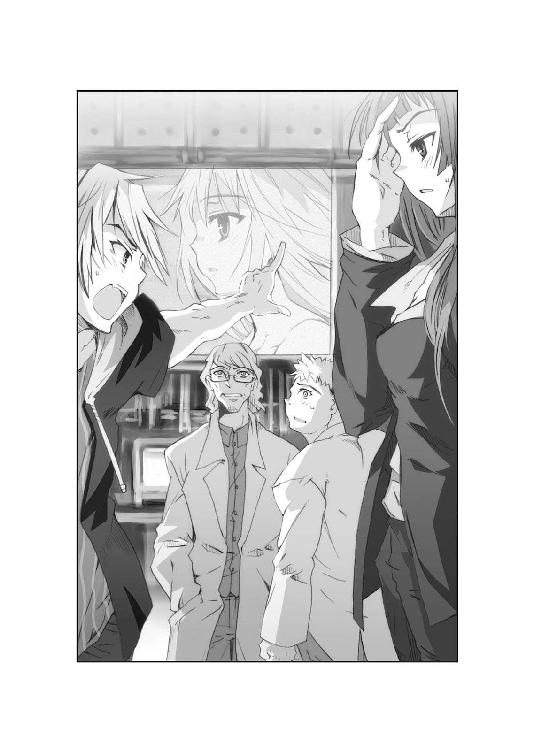
「確かに各国政府に提供したビデオは加工されてるわ。でも刺青を解析するために、グラント博士にはロレインの無修正ビデオを渡してあるの。仕方ないでしょ」
「し、仕方ないだとお！」
大牙は、もがくサイクスを操作卓に押しつけ、何とかロレインの恥ずかしい姿を消そうとやっきになる。
しかしその様子は、ガラス張りを通してロレインにも見えていた。
〈大ちゃん、何かあったの？〉
スピーカーを通して、少女の声が聞こえてきた。
〈様子が変よ。私のむしゅーせいビデオって何の事？〉
どうやら互いの部屋の音声も、まる聞こえのようだ。
きょとんとするロレインに、大牙は表情を引きつらせる。
「な、なんでもないさ。検査はもうすぐ始まるからな」
大牙はやっと見つけた停止ボタンで、映像をかき消した。
「......ま、まったく焦らせるぜ」
大牙は一瞬ほっとし、すぐにサイクスの胸元をねじり上げた。
「それでさっきのセリフが分かったぞ。あんた、ロレインとは初対面だが、このビデオで見て顔を知ってたんだな？」
「ぐ、ぐうっ......それはそうなんですけど」
「くそっ、みんなであれを鑑賞してたとは......さてはさっき実物のロレインを前にして、いろんな姿も想像しやがったな！」
「ご、誤解ですよお、大牙さん！」
ラムゼイ船長は啞然とし、玲子は呆れ果てている。
グラント博士だけが、妙な冷静さを保っていた。
「なるほどね。ロレイン嬢に対する大牙君の感情は確認できたよ。この必死さがあればこそ、魔群を倒せたというわけだ。尊敬に値するね」
「どうですかな。私から見れば単なる嫉妬ですよ」
ハドレーは言って、顎をつまんだ。
「もっとも嫉妬で魔群が倒せるなら、歓迎すべきですがね」
「見せたくない気持ち、分かるわあ」
確かにロレインの裸は見せたくない。しかしそれ以上に、刺青を見せたくないのだ。
ロレインは普段、刺青の事など口にしない。
それだけに、辛い気持ちを隠しているのも分かっていた。
大牙が怒気を収めると、グラント博士は軽くうなずいた。
「さてロレインさん、そろそろ例の物をこちらに見せてもらえるかね？」
〈はい、グラント博士〉
ロレインは素直に、手術着の袖をまくった。
拳を上に向け、か細い腕を操作室に見せる。
その白い肌に、黒い痣のようなものが蠢いていた。
「サイクス君。六番モニターに拡大してくれ」
メインスクリーンに、その拡大映像が映し出される。
妖艶な裸女。肌の上で躍る豊満な肢体。
大牙も久しぶりに、その悪しき視線と対面した。
何だってこんなものがロレインの身体に......
思う気持ちが、いつの間にか拳を握らせている。
だが次の瞬間、大牙の全身を異様な感覚が走り抜けた。
「......うっ！」
思わず、悲鳴を嚙み殺す。
画面を通して刺青の女と見つめ合った刹那、それは聞こえてきた。
けたたましい女の哄笑。弱者をあしざまに弄ぶ声が、大牙の耳に届いたのだ。
その笑い声は鼓膜を貫き、心臓を鷲摑みにした。
臓腑に爪が食い込み、引きちぎられるような激痛。
耳を塞ごうとしても、視線を外そうとしても、硬直した肉体は動かない。
なのに横では、ハドレーも玲子も、何食わぬ顔で検査の準備をしていた。
大牙一人が嘲笑に襲われ、冷たい汗を流しているのだ。
「ハド......」
大牙は異変を伝えようと、動かぬ口を必死に開ける。
だがその頭上で、今度は照明が、ちかちかと点滅し始めた。
「あれ、おかしいな？」
サイクスが慌てて、操作卓のボタンを叩く。
同時にスキャナー室の明かりも明滅し、卓のランプまで消えかかる。
「電力不足でしょうか、博士？」
「そんなはずはない。最新の核融合推進船だぞ。ブレーカーなんぞ上がるものか」
グラント博士も脳波指示を出すが、点滅は一向におさまらない。
スキャナー室の中では、ロレインも不安そうな表情をしていた。
〈あの、故障ですか？〉
「そうらしいわ。すぐ直すから、そのままでいて」
玲子は言って、ふと大牙に視線を向けた。
瞬間、画面の刺青とにらみ合う姿に気づく。
「ちょっと、大牙、あなた......！」
「......故障を信じるほど、俺は間抜けじゃないぜ」
ようやく声を搾り出し、冷や汗をぬぐう。
強引に刺青の視線を振り払うと、大牙は周囲の気配を探った。
「検査は中止だ。俺はロレインの部屋に行く」
大牙の言葉に、一同が凍りついた。
ガラスの向こうでは、ロレインも何かを感じて立ち上がっている。
ハドレー少佐も胸ポケットに手を入れ、拳銃を握り締めた。
「だったら、あのドアに行け」
大牙に向かって、ハドレーは部屋の隅を示した。
「スキャナー室に通じる扉だ。鍵はかかってない」
その瞬間、大牙の視界を何かが横切った。
ガラス張りの向こう、スキャナー室で影が走る。
しかし確かめようと凝視しても、照明が明滅してよく分からない。
「今のは......」
確かに何かがいた。だがスキャナー室に見えるのは、ロレインと検査機材だけだ。
さらに照明の明滅が、急激に速まっていく。
こちらの恐怖をかき立てるように、次第に速く、速く、速く......
たまらず大牙は、扉に飛びついた。
「ロレイン、こっちへ......！」
しかし大牙の叫びは、驚愕のために途切れた。
開いているはずのドアは、びくともしなかったのだ。
【第二章】
大牙の手は、確かにドアノブを握りしめていた。
だがそれは強力な力で逆に回され、一ミリたりとも動かない。
鍵はかかっていないはず......と思った時、扉が変容を始めた。
「これは......！」
扉の真ん中が黒く変色し、急激に広がるや何かの形になっていく。
そしてその中心が、ぬうっと膨張し、扉から膨れ上がったのだ。
徐々に実体化する、何かの頭部。
まるで母体から生まれた胎児の如く、それは産声をあげ、鳴き叫んだ。
「ぎ、ぎ、ぎ、ぎ、ぎ......」
扉から生まれ出たのは、真っ黒い上半身だ。
獣毛の生えた頭には、長く尖った耳が伸びている。
その耳元まで裂けた口には、鋭利な牙が二重に生え揃っていた。
筋張った腕の先には、長すぎる指と捻じ曲がった爪が並ぶ。
そして腋の下には、相手の正体を示す最大の手がかりがあった。
黒光りする翼は、蝙蝠以外の何物でもなかったのだ。
「ば、化け物っ......！」
間近に現れた異形の姿に、サイクスが椅子から転げ落ちる。
蝙蝠は奇声を発し、扉から抜け出てきた。
身長二メートル。つま先にも、鋭利な爪。長い尾が鞭のようにしなる。
血走った眼球で大牙を狙い、至近から躍りかかった。
しかしハドレーの両腕も、二丁の自動拳銃を引き抜いた。
「下がれ、大牙っ！」
ベルギー製ＦＮ五七が、容赦なく凍結弾を連射した。
弾丸は、魔群の手先、不死者を活動不能に追い込むだけの威力を持つ。
ハドレーは正確な射撃で、人間蝙蝠とも言うべき怪物の頭部を撃ち抜いた。
しかし飛び散った体液の色は、濁った灰色だったのだ。
「魔群じゃない！」
大牙は即座に気がついた。魔群なら体液は虹色のはず。
恐らくは分身か下僕。こいつを操る魔群がどこかにいる。
しかし魔群でなくとも、異形は凍結弾をものともしない。
両腕を振り上げ、大牙めがけて左右の爪で襲いかかった。
「逃げろ、ここは俺が......！」
大牙は、蝙蝠の手首をつかみ、爪で切り裂かれる寸前でくい止める。
だがその体勢から、素早く異形は両足を繰り出した。
長い尾を、まるで三本目の足のように使い、全身を支える。
そして素早く両足で、大牙の身体を弾き飛ばしたのだ。
肋骨が砕ける音。大牙は背中から壁に叩きつけられた。
思わぬ脳震盪。勢いあまって壁面パネルをぶち破り、通路まで吹っ飛んだ。
〈大ちゃんっ！〉
その様子は、スキャナー室にも見えている。
悲鳴がスピーカーから聞こえると、ハドレーが叫んだ。
「魔群襲来！ ファーストレディを確保しろ！」
玲子も愛用のベレッタＭ九二を構え、グラント博士を背にかばう。
ラムゼイ船長もスタジオから飛び出し、鋭い声を走らせた。
「船内に魔群っ！ 当直海兵隊をここへ！」
しかしすでに異変は、第一スタジオの外まで聞こえていた。
待機していたチーム・アスカロンが、ロレインのいるスキャナー室へ駆け込んでいく。
ロレインも彼らに向かって走り出すが、その頭上からまた別の影が勇躍した。
「きゃああああっっ！」
スキャナー室の天井に、新たな三つの染みが拡散した。
それが黒い影となってしたたり落ち、牙を剝く蝙蝠へ実体化する。
明滅する照明の下、鋭利な爪がアスカロン隊員を蹴散らした。
鮮血がしぶく。ロレインは身を硬くして、壁際に退いた。
「向こうにもいるわ！」
ベレッタを両手に握り、玲子が叫んだ。
しかし助けに行こうにも、スキャナー室への扉には蝙蝠が立ち塞がっている。
大牙を蹴り飛ばしたその異形は、ゆっくり玲子へ顔を向けた。
二重に生えた牙を見せつけ、毛むくじゃらの腕を前に伸ばす。
玲子の腕が思わず強張った時、耳元で叫ぶ声がした。
「博士を連れて逃げろ！」
前に出たハドレーが、醜悪な口の中へ凍結弾を撃ち込んだ。
着弾と同時に、蝙蝠の口からドライアイスに似た白煙が漏れる。
だが怪物は一声喚くと、素早く長い尾を振り回し、ハドレーの足をすくい上げた。
「がっ......！」
ハドレーの長身が、翻弄されるように空中で一回転した。
そのまま操作卓に叩きつけられ、金属パネルをぶち破る。
派手な火花に包まれ、ハドレーは床に転げ落ちた。
「リチャード！」
名前を呼ぶと同時に、玲子もベレッタを連射した。
狙いは眼球。そこならばダメージがあるかもしれない。
続けざまに発砲しながら、玲子は背後に怒鳴った。
「行ってください、博士！ ここは我々が......！」
「ば、馬鹿言いたまえ！」
プラグを首から引き抜き、博士は操作殻から飛び降りた。
「目の前で初めて魔群を観察できるんだよ、この機会を逃してなるものか！」
しかしグラント博士は、歯をがちがち震わせ玲子にしがみつく。
「それに、い、今は君一人しかいないじゃないか！ 置いては行けないよ！」
だが玲子は、撃ち尽くした弾倉を床に落として言った。
「すぐに起きてきますよ、彼がね！」
そしてベレッタに、新たな弾倉を装塡する。
「この程度で死ぬ男に、ロレインは託せません！」
玲子の眼前では、白煙に包まれた蝙蝠が涎を垂らしている。
あれだけの銃撃を受けてなお、倒れる気配はまるでない。
だが玲子には近寄らず、異形は背後を振り返った。
残骸の中から起き上がる、熱風めいた殺気を悟ったのだ。
「調子に乗ったぜ......」
大牙は、蝙蝠の背中に呻きを浴びせる。
それは奇襲を受けてしまった、自分への罵りであった。
己への怒りが体内を駆け巡り、彼の一族にもたらされた力まで解放する。
折れた肋骨にも力が流れると、ぴしぴしと心地よい音が響いた。
瞬く間に骨組織が再生し、痛みも熱も取り去っていく。
その力の名、血魂。
そして血魂を用いた肉体治癒法を、活法と呼ぶ。
しかし活法は、鳳凰流闘武術の一面に過ぎない。
活法と対をなす、魔を斬り払う技も存在した。
「待ってろ、ロレイン！」
踏み出す大牙の手から、真紅の閃光がほとばしった。
それは一瞬にして刀身となり、鳳凰の刃と化す。
鳳凰流闘武術の殺法が、異形の蝙蝠に襲いかかった。
だが蝙蝠も、左腕で大牙の頭部を狙い、右腕で大牙の足下をすくう。
身体の対角線上を同時に攻められ、双方に対応できる者はまずいない。
しかし鳳凰の刃は、その予測を上回る軌跡を見せた。
大牙が鳳凰の刃を一回転させると、その刀身が倍以上も伸張する。
風車の如く回った刃は、異形の両腕を巻き込み、斬り飛ばす。
見守る玲子も、思わず身をすくませた。
「以前より速いっ......！」
だが両腕を失った蝙蝠は、再び尾で立ち上がった。
腕の代わりに両足で、大牙を弾き飛ばそうと咆哮する。
しかし大牙は、その動きにぐいと踏み留まった。
「もう見切ったよ」
蝙蝠の放った蹴撃は、大牙の寸前で空振りした。
しかもほんのわずか、一センチだけ届いていない。
よく見れば大牙は、同じ体勢のまま後退している。
蝙蝠の攻撃範囲を計算し、ぎりぎり安全圏まで退いたのだ。
「あんな動きができるのか！」
グラント博士が、玲子の背で驚嘆する。
一度受けた攻撃は肉体に刷り込み、二度とは受けない。
無頼の教えを実践し、大牙は鳳凰の刃を振り下ろした。
頭頂部から真っ二つにされた蝙蝠は、その場で黒い炭へと変貌した。
その山と化した屍を踏み越え、大牙はスキャナー室に視線を向ける。
「ロレイン！」
ガラス越しに目が合う。
無事とは言えない。アスカロン隊員たちは、倒れ伏している。
三体の蝙蝠は、すでに少女を包囲していたのだ。
大牙は、スキャナー室へ通じるドアへ突進した。
「その子に触れるな！」
叫びが聞こえたのか、一体の蝙蝠が振り返った。
そして扉に飛び込み、分厚い金属を潜り抜けようとする。
だがドアと一体化した異形に、鳳凰の刃が縦横に走った。
大牙の腕の動きは、玲子にもグラントにも見えない。
ただ真っ赤な閃光が、十字に閃いただけ。
しかし直後、蝙蝠は分厚いドアごと四つに斬り裂かれていた。
崩落する残骸を蹴り、ようやく大牙はスキャナー室に飛び込んだ。
「大ちゃん！」
やっとロレインの声が届く。だが彼女はすでに蝙蝠に捕らわれていた。
その二体の蝙蝠が、にたっと醜い笑みを漏らした。
すると蝙蝠の目線が突然、大牙の足下まで落ち込んだではないか。
身体が小さくなったのか。いや、そうではない。
蝙蝠の下半身が再び黒い染みとなり、床面に溶け込み始めたのだ。
そしてその黒い染みに、ロレインまで吞み込まれていく。
「きゃ......！」
悲鳴は途切れ、揺れる金髪が暗黒に吸い込まれる。
呆然とする大牙に、玲子の鋭い声が飛んだ。
「ロレインは真下の第三デッキよ！ 追跡できてる！」
玲子は、腕時計を示して叫んだ。
即座に大牙も、自分の腕時計を睨む。文字盤には点滅する赤い光点。
ロレインの体内に注入された位置特定用インクが反応しているのだ。
咆哮を発して、大牙は鳳凰の刃を振り抜いた。
「悪いが、ここを通る！」
真っ赤な閃光が、スキャナー室の床をぶった斬る。
轟音。一撃は、床を支える鉄骨まで両断していた。
大牙は勢いよく、切り取った床面ごと階下へ落下する。
そして追跡が始まった。
一体の蝙蝠がロレインを抱え、扉を次々に透過していく。
先導するもう一体は、出くわした乗員たちを長い腕で振り飛ばした。
通路に駆けつけた海兵隊員へは、大牙が鋭い声を浴びせる。
「撃つな、ロレインに当たる！」
そして自らも、尋常でない疾走で追跡を続行した。
やがて異形は下層デッキへ逃げ、分厚い扉を潜り抜ける。
大牙は扉を開けるのももどかしく、体当たりで突入した。
「ここは......」
大牙がたどり着いたのは、がらんとした区画だった。
地下駐車場を思わせる暗さ。恐らく車輛格納庫だ。
蝙蝠の姿も、ロレインの呼吸も聞こえない。
だが腕時計には確かに、少女の位置を示す光点が瞬いていた。
「......待ち伏せか」
思った瞬間、背筋が総毛立つ。身をかわす。だが後頭部に衝撃と激痛。
大牙はとんぼをきって、大きく間合いを取る。
うなじから流血。いつの間にか蝙蝠が、背後に迫っていたのだ。
「ぎ......ぎ......ぎ......」
一体の異形が、大きく腕を伸ばして身構えている。
だが次の刹那、今度は頭上からもう一体が現れた。
かろうじて右に跳び、鋭い爪を回避する。
失中した蝙蝠の一撃は、床面を粉微塵に破壊する。
速度も威力も、先ほどとは比べものにならない。
「なるほど......暗い場所がホームグラウンドか。いかにもだな」
明らかに強大化した敵に、大牙は唇を嚙む。
そして握り締めた鳳凰の刃に、再び血魂を送り込んだ。
「だけどよ、俺はアウェイの方が強いんだぜ」
鳳凰の刃が輝きを増し、格納庫に明かりを点す。
その光に蝙蝠が牙を剝くと、頭上から声がした。
「大ちゃん、ここよ！」
ロレインの声。一瞬、視線を送る。
なんと少女は、格納庫の天井近くにいるではないか。
その身体は、金属製の支柱に縛られている。
巻きついているのは、車輛を固定するワイヤーだ。
「なんて真似しやがる！」
大牙が正面から斬りかかると、敵は嘲笑を浮かべ、素早く切っ先から飛び退いた。
呼応して側面から、もう一体の蝙蝠が勇躍する。
だが鳳凰の刃は猛速で反転した。たとえロレインを奪われても大牙は冷静なのだ。
相手は闇の中。探り出すより、誘き寄せた方が早い。
その一撃は異形の腕を斬り裂き、鋭い悲鳴を上げさせた。
「大ちゃん、後ろ！」
再び背後から、蝙蝠の剛腕が襲いかかる。
大牙は強襲を刃で跳ね除け、いったん後退する。
だが再び攻撃。受ける。攻撃。受ける。攻撃。
鳳凰の刃とカギ爪が激突し、青白い火花が散る。
その隙に、もう一体は大きく羽ばたき、大牙の後背に飛んだ。
後退路を塞がれる。悟った大牙は、血魂を肉体から解放した。
「飛ぼうぜ、一緒に」
青い閃光。大牙の身体から、蒼竜の翼が光となってたなびく。
大牙は、攻め続ける蝙蝠の頭上を跳び、逆に背後を取った。
振り返る異形。だが遅い。鳳凰の刀身が、袈裟懸けに胸元を断ち割った。
威力を増した鳳凰の刃は、骨肉を一気に粉砕する。だが......
「なんだっ！」
大牙は、突然の轟音から身をかわした。
鼓膜をびりびりと震わす、巨大な音圧が大牙に襲いかかる。
と同時に、全身に無数の何かがぶち当たった。
それは大牙の皮膚をかすめ、肉をむしり、しぶく血に狂奔している。
「分身......！」
そう、大牙に襲いかかったのは、斬り倒したはずの異形の肉片なのだ。
しかし今やそれは、ひとつひとつが小さな蝙蝠と化している。
その数、何百何千......闇の中、蠢く群体はどれほどいるのか。
蝙蝠の群れは、羽ばたきの音と共に大牙を包囲した。
「邪魔だ、ど......！」
叫びかけた口に、一匹の蝙蝠が張りついた。
すかさず次の蝙蝠が続き、瞬く間に視界が塞がれる。
大牙は慌てて蝙蝠をむしり取るが、襲撃は止まらない。
びっしりと蝙蝠にしがみつかれ、大牙は思わず跪いてしまった。
「大ちゃん、しっかりし......！」
そう叫んだロレインも、思わず声を詰まらせる。
目の前の空間に、もう一体の蝙蝠人が浮上してきたのだ。
牙から涎をしたたらせ、異形はロレインに手を伸ばした。
「......っっ！」
ロレインの恐怖は、かろうじて大牙にも伝わった。
顔面に張りつく蝙蝠を床に叩きつけ、少女を見上げる。
「触るなと言ったはずだ！」
大牙は今一度、鳳凰の刃を握りしめようとした。
しかしいつの間にか、鳳凰の刃が手から消え失せているではないか。
それどころか、血魂の脈打ちまで弱まっている。
自分に何が起きたのか、大牙はまだ気づいていない。
頭上では、ロレインの手術着が引き裂かれていった。
「いやっ、大ちゃん！」
暗闇に浮かぶのは少女の白い肌。そして蠢動する刺青。
その刺青が、ロレインの肌で声もなく笑った。
「ぎ......は......あ......」
刺青と向き合った蝙蝠も、歓喜の声を上げる。
翼をばたつかせ、何かを求めるように空中で悶えた。
刺青はその様子に微笑み、肢体を淫らにくねらせる。
異様な光景に、大牙の背筋が凍った。
「呼び合ってやがる......」
そして大牙も、ようやく気づいた。
見下ろせば、大牙の身体には無数の蝙蝠が喰らいついている。
蝙蝠たちはみな、ごくごくと血液を飲んでいるのだ。
魔群を滅ぼす鳳凰寺家の血が、大牙の身体から奪われていたとは！
それはまさしく、大牙の力を見抜いた上での戦法だった。
「人の血を勝手に吸いやがって......」
大牙は薄れる意識の中、低く呻いた。
「この血はてめえらのものじゃない......この血はな......！」
ロレインのものだ。そう大牙は信じている。
鳳凰寺家の血は、魔群を斬り、ロレインを救える唯一の術なのだ。
しかしその血が奪われれば、大牙は生きる価値を失い、ロレインも失う。
奪われてなるか。そう思うと体内に残った血液が、勢いよく沸き立った。
そして大牙が再び力を放とうとした、まさにその時であった。
「なるほど。これがお前の戦いぶりか、鳳凰寺大牙」
若い男の声に、大牙は背後を振り返った。
いつの間にか長身の人影が、倉庫に足を踏み入れている。
顔はよく分からない。見えるのは丸いサングラスの輝き。
そして斜めにくわえた、タバコの小さな火だけであった。
「だとすれば俺は失望した事になる。お前の無力さにな」
魔群。大牙はそう確信した。
唇に浮かぶのは嘲笑。哀れみの欠片もない、真に悪魔的な微笑み。
この男が、蝙蝠どもを操っているに違いない。
だがそう思った時、男は何かを床に投げつけた。
同時に、倉庫内が真っ白な閃光で包まれる。遅れて爆発音。恐らく閃光手榴弾だ。
「つあっ！」
大牙の網膜も焼かれ、一瞬視力が失われる。
だがより大きな悲鳴を上げたのは、むしろ蝙蝠たちの方だった。
閃光が突き刺さるや、蝙蝠の群れは大牙の肌から剝がれ落ちる。
それどころか小さな蝙蝠たちは、みるみる黒い灰と化していったのだ。
同時に、ロレインに迫った異形も苦悶した。
無様に落下した蝙蝠は、そのまま床に叩きつけられる。
大牙は盲目のまま、聴覚だけで事態を理解しようとした。しかし......
「どいていろ。お前の見せ場はもうない」
さっきの声が、大牙の肩を突き飛ばす。
「そしてもう永遠にない。お前の出番も」
床に倒れた大牙は、やっと視力を取り戻した。
目の前では、さっきの男と蝙蝠が対峙している。
蝙蝠の顔には憤怒の表情。まさか......
「お前......魔群じゃないのか？」
大牙の声に、男は背中で笑った。
「俺が魔群に見えるとしたら、お前の判断力は蝙蝠以下だな」
背中を向けたまま、サングラスを投げ捨てる。
「その程度の男では、あの人まで失望するぞ」
顔を見せぬ男は、身体中から殺気を解放した。
あの人......あの人って誰だ。
だが疑問に思うよりも、大牙は蝙蝠の異変に気づいた。
異形は悲鳴を上げ、その場で硬直している。
しかし精神的な恐怖からではない。
文字通り、蝙蝠の肉体が石のように固まり始めているのだ。
「ぎ......ぎぎっっ......！」
つま先から始まった石化は、瞬く間に下半身を覆ってしまう。
ぴしぴしと音を立て、蝙蝠は石像へと成り果てているのだ。
しかもあの男は、何一つ動いてはいない。
ただ単に蝙蝠の前に立ち、異形を見つめているだけなのだ。
「お前はいったい......」
つぶやいた大牙の前で、男は左右の腰から何かを投げ放った。
それは空中で弧を描き、石像と化した蝙蝠に吸い込まれていく。
すると火花が散り、蝙蝠の身体は難なく断ち割られてしまった。
それは再び男の指先に帰還するや、くるくると回転した。
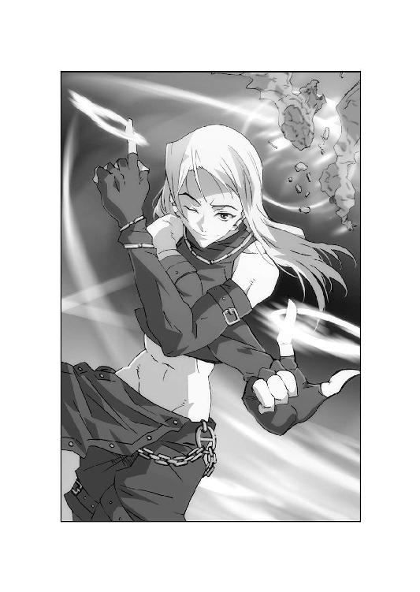
「回転切断環！」
大牙は、その武器の名を知っていた。
インドや中央アフリカに古代から伝わる投擲武器。
見た目は平たい金属の環。しかしその外側は鋭利な刃物。
狩猟用だと聞いた事はある。しかしまさか石像を真っ二つにする威力とは！
だが驚く大牙の前で、男は再び回転切断環を投げ放つ。
それは天井近くまで飛び、ロレインの束縛を切り離した。
「きゃあっ！」
支柱から解かれたロレインの、金髪がふわりと揺らめく。
だがそのか細い身体は、冷たい床めがけて落下し始めた。
「ロレイン！」
大牙は、その身体を抱きとめようとする。
しかしまたも、あの男が先に動いていた。
回転切断環を回収すると同時に、男は優美な身のこなしで落下点に入る。
そしてロレインの身体を、優しく包み込むように受けとめてみせたのだ。
「手荒な真似を御容赦ください、お嬢さん」
男の声が、急に甘ったるいフランス語に変わった。
「しかしあなたの美しさは、俺を失望させなかった。それだけでも、日本に来た甲斐があったというものですよ」
男は半裸のロレインを、まるで高貴な絵画のように鑑賞している。
そして抱きとめられたロレインも、不思議そうに男を見つめていた。
「あなたはいったい......？」
「ゼット・ハンニバル」
男は、初めて名乗った。
「あなたを守る。それが俺の任務です」
そして男は、大牙に視線を向けた。
大牙は思わず、驚愕に息を吞む。
男の両目は、人間のものではなかったのだ。
「まさか君も来ていたとはな」
ハドレー少佐は、手当てを受けながら言った。
「大佐も人が悪くなったものだ。応援をよこすなら教えてくれてもいいものを」
「その点については同感ですな」
ゼット・ハンニバルは、ソファから応えた。
「時折、あの方はひどく子供っぽい事をされます。俺を黙って日本に派遣したのもそうですな。今頃はあなた方の驚く顔を想像して、チェシャ猫のように笑っておられますよ」
そう言って、掌のワイングラスを傾けた。
「しかし不思議の国では、チェシャ猫の発言が一番まともだ。きっとこの悪戯も、何かお考えがあるのでしょう」
時刻は、すでに日没を迎えている。
研究船クリティアス号の大広間からは、横浜の夜景が一望できた。
昼間の戦闘を知らぬイルミネーションは、港内をまばゆく彩っている。
そしてソファに沈む男も、夜景に負けぬほど派手ないでたちであった。
ゼット・ハンニバルの身長は、大牙より二センチほど高い。
すらりとした肉体を、袖なしのＴシャツと革のパンツで覆っていた。
その身体の至る所に、じゃらじゃらとアクセサリをぶら下げている。
耳にはピアス、首にはネックレス、腕には何重ものブレスレット。
長めの金髪は丁寧なウェーブを描き、肩まで垂れている。
淡い色のサングラスで瞳を隠した男は、とてもジーゲン機関の男とは思えない。
しかしすでに大牙は、彼の不思議な戦闘能力を目の当たりにしているのだ。
「あらためて紹介しておくわ、大牙」
玲子は、ハドレーの腕に包帯を巻いて言った。
「彼の名前はゼット・ハンニバル。あなたと同じ十七歳。ジーゲン機関チーム・バルムンクの特殊戦闘員よ。グラント博士の護衛として、この船に同乗してきたの」
「それはさっき聞いた」
大牙は、苛立たしげに呻いた。
「チーム・アスカロンの補充要員だろ。ハドレー隊が手薄だから送り込まれたってな」
「そうだ。ヴァルター・フォン・ディートリッヒ大佐の御命令で」
ゼットは、大牙に向かってグラスを掲げた。
「息子であるお前の力量が心配だったんだろう。大佐の予感は当たったな」
「それは......」
大牙は何か言おうとしたが、思わぬ目まいに顔をしかめた。
あの蝙蝠たちにだいぶ血を抜き取られたらしい。
ふらつく身体を見抜いて、ゼットは両肩をすくめた。
「頭に昇る血も、今は足りないようだな。まあ安心しろ。ロレイン嬢の護衛は俺だけで十分だ。もしお前が非業の死を遂げても、俺が立派に守ってみせるさ」
大牙は、黙って椅子に沈み込んだ。
その様子を、ゼットはにやにやと鑑賞している。
「大牙、お前はこう思っているだろう。ゼット・ハンニバルの助けがなくても、彼女を救えたはずだとな。確かにさっきの戦いでは、俺はお前より三秒だけ余裕があった。それだけにすぎぬかもしれん。しかし魔群との戦闘では、三秒とて無駄にはできない」
ゼットは、ワインを静かにすすった。
「それくらい分かるはずだ。なにせお前も、世界で魔群を倒せる三人のうちの一人だ」
「あとの二人は誰だ？」
「問われるとは意外だな。お前の祖父殿と、この俺だよ」
大牙は、ゼットのサングラスを見つめた。
彼の瞳が目に焼きついている。あれは確かに......思った時、扉が開いた。
「だめだね、ハドレー少佐。まるでだめだ」
頭髪を搔き、グラント博士が入ってきた。
「第一スタジオの器材修復は長引きそうだ。予備のユニットを設置するにも、朝までかかる。ロレイン嬢の検査は、明日に持ち越してくれ」
「仕方ありませんな」
ハドレーは、包帯を巻いた腕に顔をしかめた。
「検査ができるまで、我々も船内に泊まります。魔群が再びロレインを狙っていると分かった以上、早いうちに調べる必要がありますので」
「分かった。ところで私がまた魔群を観察できる可能性は？」
「恐らく存分に。お望みなら嫌と言うほど」
勘弁してくれ、と博士は手を振った。
「やはり奴らは直接観察すべき対象ではないな。たとえ心強い護衛がいるにしても御免だよ。しかしさすがはゼット君だ。見事、敵を撃退したそうじゃないか、ええ？」
言われて、ゼットは満足げに微笑んだ。
「任務は果たしましたよ。そこにいる男とは違ってね」
「お前......！」
大牙がついに席を蹴ろうとした時、ロレインが博士の後ろから現れた。
私服に着替えなおした彼女は、心なしかうつむいている。
「おい、ロレイン、お前......」
「あの、ゼットさん」
大牙を無視し、少女はソファの前に進み出た。
そしてぺこりと、小さな頭を下げてみせる。
「ありがとうございます......大ちゃんを助けてくれて......」
ほんの少し、涙声。肩も震えている。
大牙は再び、自分の敗北を嚙みしめる。
それを横目で見て、ゼットが立ち上がった。
「俺が助けたのは大牙じゃない、あなたですよ。でもまあ、今日はそういう事にしてもいい。あなたのような美しい人から感謝されて、悪い気分はしませんからな」
そしてロレインの右手を持ち上げると、静かに口づける。
驚いた少女に、ゼットはサングラス越しにウィンクした。
「故郷の地中海を思い出しますよ。あなたの瞳を見てると」
「え......あの、それって......」
「フランス系移民としてチュニジアで生まれました。もっとも俺としては、カルタゴ生まれだと名乗りたい。ハンニバルの名をご存知ですか？」
ロレインは、少しだけ笑顔を取り戻した。
「えっと、世界史で習いました。たしかローマと戦った将軍......？」
「それで十分。今から二三○○年前、アルプス越えの奇策を用いて、共和制ローマを壊滅寸前まで追い込んだ名将の名です。俺の姓は、かの英雄に由来している」
そしてゼットは、うやうやしく一礼した。
「あなたの護衛に任ぜられました。ハンニバルの如く戦うと、ここに誓いましょう」
ロレインは、その大袈裟さに目を丸くしている。
玲子はため息を吐いて、大牙の肩をこづいた。
「あんたも少しは見習うべきよ。鼻につくほどキザだとしても、少なくとも彼はロレインの涙を止めてみせたわ」
「......分かってるさ」
その答えは玲子にとっても、ゼットにとっても意外だったようだ。
カルタゴ生まれの男は、ぴくりと眉を跳ね上げている。
「ようやく俺を認めたか。そして自分の力量にも気づいたな」
少女を横にのけると、ゼットは大牙に向き直った。
「一度、魔群を倒したからといって、二度できるとは限らない。まぐれ勝ちで調子に乗るほど、馬鹿らしい事もないぞ」
あからさまな挑発に、玲子が嫌悪を見せた。
「もうよしなさい、ゼット。さっきはしくじったけど、大牙も有能な戦士よ」
「本当に有能な戦士とは、失敗しない者を言う」
ゼットは、鋭く応えた。
「ミス迫水、ジーゲン機関はこんな男を頼るべきじゃない。こいつはロレイン嬢を失いかけたんだ。しかも何度も。今までに何度もだ」
その声が、次第に熱を帯びていく。
「大佐の奥方が、命を賭けて守った男だ。なのにお前は期待に応えていない。強くなっていない。それじゃあ死んだ奥方も、無念に思うに決まってる」
「ゼット、言いすぎよ」
玲子が言った時、白い閃光が走った。
大牙の拳が、ゼットの顔に肉薄する。その握った手には、白虎の光が巻きついていた。
腕を振り抜く動作など皆無。究極のショートフック。
だがゼットも、寸前で大牙の腕をとらえていたのだ。
「大牙、お前......！」
ゼットは、大牙の膂力に身体を震わせる。
大牙は、拳を止めたゼットに声を絞った。
「俺はいくら言われてもかまわない。しくじったのは事実だからな」
間近で向き合い、大牙は言った。
「感謝だってしてるんだ。ロレインを助けたのはお前だ。だから俺は、お前に怒りをぶつけるわけにはいかない」
けどな、と大牙は続けた。
「お袋の事は言うな。俺だって覚えちゃいない人だ。お前が知るはずもない。死んだお袋の気持ちを語るなんて、できるはずないだろ」
大牙の胸に、悪夢に怯えた日々が去来した。
母親の献身を、過剰に受け止めていた自分。
それほどまでに、身を捨てた行為は重たいものだった。
確かに母親も失望しているかもしれないが、ゼットに代弁されるのは許せなかった。
「大ちゃん、やめて。もう......」
心配するロレインの声で、大牙は我に返った。
「これは俺たち親子の問題だ」
そしてゼットをにらむ。
「他人のお前がとやかく言う筋合いはないんだよ」
しかしゼットも、総毛立つような殺気を放った。
空いた手で、静かにサングラスを外してみせる。
「大牙、お前は母親に愛されてた。それは事実だ」
そして、眼光を光らせた。
「羨むつもりはないが、俺はこの目のおかげで......母親から疎まれたのさ」
大牙は間近で、ゼットの眼球と対峙した。
するとゼットの瞳が、一瞬にして縦長の瞳孔に変わったではないか。
間違いなくそれは、冷血な毒蛇のものだ。
その目から、魔群の手先を倒した視線が放たれる。
瞬間、捕まれた大牙の手首が、みるみる石に変わっていった。
「お前の目は......」
「生まれつきの蛇眼だ。いかなる生物でも石化できる。この能力があるからこそ、俺はジーゲン機関に拾われ、ディートリッヒ大佐によって鍛えあげられた」
ゼットは毒蛇の眼球のまま、大牙に告げた。
「俺の罵倒が聞きたくないなら強くなれ、今以上にな。でなきゃ俺と肩を並べて戦う資格はない。たとえ鳳凰寺の血があったとしても」
肘まで石化が進んでも、大牙はゼットと向き合い続けた。
ゼットも、言いようのない感情を放っている。
しかも大牙個人への、底知れぬ複雑な思いだ。
単純な憎悪や失望ではない。もっと強烈な執着。
「お前はいったい......」
言いかけた時、ロレインが割って入った。
「お願い、ゼットさん！ 大ちゃんの手を治して！」
すがるようにゼットに飛びつき、足をばたつかせる。
「これじゃ大ちゃん、石になっちゃうわ！ お願い、私の大事な人なの！ お願い！」
その瞬間、ゼットの瞳がまた変わった。
毒蛇の目ではなく、今度は複眼になる。
ゼットは昆虫を思わせる眼球で、固くなった大牙の腕を見た。
「蟲惑だ。生物の肉体を弛緩させ、石化も解く」
見る間に、大牙の腕は生気を取り戻す。
ゼットはその腕を放すと、両目にサングラスをかけ直した。
「可憐な声で懇願されては、俺も従うしかない。今日のところはロレイン嬢に免じて、許してやろう」
だが二度はない。そうゼットは断言した。
「今日みたいなへまをやったら......大牙、お前はロレイン嬢の警護から外されると思え。もうお前は魔群を倒せる唯一の男ではないんだからな。この俺が、日本に来た以上」
「......分かった。覚えておく」
大牙は、元通りになった腕をさする。
ゼットは余裕たっぷりに微笑み、部屋から出て行こうとした。
するとその背に、ロレインがもう一度近づいた。
「あの、ゼットさん......本当にありがとう。大ちゃんを助けてくれて」
少女は、ぎゅっと両手を握って言った。
「あと......これからよろしくお願いしますね」
「こちらこそ、マドモアゼル・ロレイン。だが話し方がぎこちないな」
ゼットは、扉を開けて笑った。
「俺としては、大牙以上に親密な呼び方を期待しますよ。ではお休み」
扉が閉まり、ゼットの靴音も遠のく。
部屋の緊張感を解くように、玲子が息を吐いた。
「確かにゼットも悪いけど......大牙、今のフックはやり過ぎよ」
「白虎の拳を使うなんて、か？」
大牙は、かぶりを振って笑った。
「あれはやり過ぎじゃない。あいつならかわせると思ったのさ。実際ゼットは、俺の拳を止めてみせたじゃねえか」
「じゃああなた、彼の力を見抜いて？」
玲子の問いに、大牙は仕方なくうなずいた。
「あいつの能力は、石化する蛇眼だ。だがその才能だけで、蝙蝠と戦ったわけじゃない。戦いの動きを見ただけで、できる男だと分かったよ」
大牙は、自分の頰が緩んでいるのに気づいた。
強い相手を知ると、嬉しくなる癖なのだ。
「ゼットも自分で言ってただろ、鍛えられたってな。しかも俺の親父にだぞ」
「大牙......」
「ゼットを育てたのは親父なんだ。それだけでも、面白い奴だと思うよ」
大牙の心にも、複雑な感情が湧き出していた。
しかし今、それを説明する事はできない。
ただ、ゼットも同様の感情を抱いている。
その事実だけは、大牙にも分かっていた。
ゼットは、船内の自室にたどり着いた。
だがドアノブに手をかけた瞬間、背後の闇に振り返る。
通路の陰から現れたのは、ハドレー少佐であった。
「待たせてもらった。少し話がしたくてな」
「当然でしょうな。俺は今日からあなたのチームに入る」
ポケットに手を入れて、ゼットは壁にもたれた。
「それで早速、説教と言うわけですか。もう少し、大牙と仲良くやれと」
「そんな必要はないさ」
ハドレーは、ゼット以上に狡猾な笑みを見せた。
「我々は兵士だ。お手々つないで仲良くせずとも、任務が達成できればそれでいい。むしろお前と大牙が競い合い、切磋琢磨すれば上等だ」
ゼットは顔をしかめて、タバコをくわえた。
「では、どんな話です？」
「お前の任務についてだ」
ハドレーは、ゼットの口からタバコを奪う。
床に捨てたそれを踏みにじり、英国陸軍少佐は視線を戻した。
「答えろ、ディートリッヒ大佐から何を命ぜられてきた？」
「無論、チーム・アスカロンの補充要員。そしてロレイン嬢の護衛」
「そんな答えで俺が満足するとでも？」
「思ってやいません。しかし今は満足していただかないと」
ゼットは、うなじを搔いた。
「ハドレー少佐......あなたならお分かりのはずだ。大佐の御意志が」
「ある程度まではな。しかしお前ほどではない。なにしろお前は大佐の愛弟子だ。しばらく見ぬ間に、また大佐に似てきたな」
「実の息子より、俺は大佐殿に可愛がられている。それだけは譲れませんよ」
二人は、暗い通路で視線をぶつけた。
「言っておくぞ、ゼット。大牙はジーゲン機関の命令では動かん男だ。自分の信ずるままにロレインのために戦う。だとすれば、大牙はお前の敵になる」
「忠告の意味が、分かりかねますな」
ゼットは笑って、すぐに口をひん曲げた。
「鳳凰寺大牙......酷い男だ。一瞬とは言え、さっきは俺の過去を引き出した。俺の母親の事など......それにあいつへの真剣な憎悪も、もっと後で教えたかった」
「お前も、まだ修行が足りんようだな」
ハドレーは咳ばらいをして、新たな部下を見つめた。
「だが俺が知りたいのは、お前の本音と真の任務だ。それを実行するタイミングには気をつけろ。しくじれば全てが終わる」
「で、その最良のタイミングはいつです？」
「最後の瞬間。誰もが全てを諦めた時だ」
ハドレーはそう言って、背を向けた。
「だがな、大牙だけは最後まで諦めんぞ。それだけは保証してやろう」
ゼットは、沈黙で上官を見送った。
ハドレーの背にかける言葉は、小さな微笑でしかなかった。
用意された船室は、快適なツインルームだった。
窓からは横浜港の夜景が望め、並んだ二つのベッドも広く柔らかい。
豪華客船並のその部屋で......
「ねえ、大ちゃん、さっきから何してるの？」
ロレインは、ベッドに腰掛けて言った。
「私、もうお風呂入ってもいいでしょ？ 今日は疲れちゃった」
「風呂？ だめだ、まだ服は脱ぐな！」
先ほどから大牙は、船室の床に這いつくばっている。
小脇にはゴミ箱を抱え、必死に視線を駆け巡らせていた。
その鋭い眼光が、またひとつ獲物をとらえる。
「ここにもあったぞ......くそっ！ 玲子の奴、面倒な真似を」
鉢植えの陰からもぎ取ったのは、豆粒ほどの超小型監視カメラである。
大牙とロレインの船室には、それが無数に仕掛けられていた。
しかし大牙は、カメラをことごとくゴミ箱に放り込んでいる。
「これでまたロレインの恥ずかしいビデオが撮られちゃたまらんからな。例のマスターテープも俺の手で何とか破棄しなければ......」
「ねえ、大ちゃん。それって外してもいいの？」
ロレインは、不思議そうにゴミ箱を覗き込んだ。
「玲子さんが船内警備室で監視するからって取りつけたのに」
「いいんだよ、こんなもの必要ない。だいいち俺がここにいるだろ」
汗を拭って、大牙も自分のベッドに座った。
「俺の目の届く所にいれば、ロレインは安全だ。それに玲子ならまだいいけど......他の奴がお前を監視してるかもしれないしな」
「他のって、たとえば誰？」
「あのサイクスって助手は、お前に興味津々だった。それにゼットだって油断ならねえ。とにかく俺は、お前が他の男に監視されるのが嫌なんだよ」
するとロレインは、くすくすと笑いたてた。
「ゼットさんなら大丈夫よ。私たちの味方でしょ？」
「いや、この件に関しては敵も味方もねえ！ だいたい俺はああいう男が嫌いだ。口ばっかり達者で、女の前だと態度を変えるような奴は」
「でも、ゼットさん、口だけじゃないでしょ。とっても強いわ」
ロレインは急に目を閉じて、うっとりと何かを思い出した。
「それにゼットさん、カッコいいじゃない。私、抱きとめてもらった時、ちょっとドキドキしちゃった」
「カッコいい？ あんなちゃらちゃらした奴が？」
大牙は、監視カメラをひとつ握り潰した。
「キザなセリフ以上に、毒を吐きやがる。性格が曲がってるぜ、あいつは」
「確かに口は悪いかもしれないけど......でも本当はいい人なのよ、きっと」
「やけに肩を持つな......お前、あんな奴が好きなのか？」
「なに言ってるのよ、大ちゃん」
ロレインは、きょとんとして言った。
「一番好きなのは大ちゃんよ。一番カッコ良いのも大ちゃん。ねえ、なんでそんな当たり前の事、聞くの？」
「あ、ああ......」
大牙は我に返ったように、頭を搔いた。
真っ直ぐに見つめるロレインの視線をはぐらかす。
「......そ、それならいいけどよ」
「変な大ちゃん。さっきゼットさんと喧嘩したの、まだ根に持ってるの？」
そんなことはない、と大牙は言った。
「ついカッとなっただけさ。あいつだって、もう俺のお袋の話はしないだろう」
大牙がつぶやくと、少女もベッドに腰掛けた。
「ねえ、大ちゃん。もう悪い夢は......」
「ああ、もう見なくなったよ」
大牙は、わずかに微笑んだ。
「不思議だよな。あんなに長い間、苦しんだのに......ゲンツとの戦い以来、二度と見なくなったんだ」
目の前で母親を魔群に殺された記憶。何もできなかった自分の無力感。
それが大牙にまとわりついた悪夢だった。
しかも天界魔群ゲンツはその恐怖を利用し、悪夢を現実化して大牙に突きつけたのだ。
だが、それももう過去の話だ。大牙は死んだ母の思いを理解した。
恨んでなどいない。愛する子供を守って死んだのだから。
「お前のおかげだな」
大牙は、ロレインを見つめた。
「お前が俺を救ってくれた。お前が悪夢を消してくれたんだ」
「......大ちゃん」
「だから今度は俺の番だ。俺がお前の刺青を消す。絶対にな」
大牙は、少女のか細い腕を取った。
その肌の上で、刺青の女は丸くうずくまっている。
必ず追い出してやる。大牙がそう思った時だった。
「大ちゃん......！」
ロレインが、大牙にしがみついた。
その視線の先で、刺青の女がゆっくり肢体を伸ばしていく。
長い髪を両腕にからませ、豊かな乳房を大牙に見せつける。
くびれた腰が大きくうねり、しなやかな脚は誘うように蠢く。
非の打ち所のない究極の美貌。だが女が発したのは、またしても哄笑だったのだ。
「こいつ......」
大牙は再び、その声に臓腑をつかまれる。
そして異変が、港町を襲った。
よこはまコスモワールドの観覧車に、時刻表示が点灯している。
きっかり八時。夏休みの土曜日の夜。
閉園時間も近いが、辺りにはまだ大勢の人々が行き交っていた。
遊園地から出てきたカップル。食事を終えた家族連れ。
みなとみらいと呼ばれる地区を中心に、横浜は平穏に包まれていた。
その雑踏の中で......
「もしもし？ もしもし、あっくん？」
「どしたの？」
「なんか変。携帯切れた」
「電波状態、悪いんじゃない。あれっ、あたしのも......」
渋滞する車列の中で......
「なんだよ、あの交差点。信号、消えてるぜ」
「故障じゃねえの。危ねえなあ」
「いや、違う。次の交差点も......その先の交差点も......」
中華街の賑わいの中で......
「まあちゃん、もうお腹いっぱい？」
「うん、ママ。でも僕、お土産も買いたーい」
「じゃあ早く選んでね。遅くなるといけないから」
「分かってるよ。......あ、ママ」
「どうしたの、まあちゃん？」
「見て......星が、消えたよ」
瞬間、暴風が駆け抜けた。
横浜港から内陸に向かって、凄まじい突風が襲いかかる。
その猛威は、雑踏を吹き飛ばし、人々を街に叩きつけた。
車は横転し、互いに激突するや、炎を上げる。
薙ぎ倒された街路樹が道を塞ぎ、逃げ惑う人々を押し潰す。
ＪＲ横浜駅では、入線した電車がホームに突進していた。
阿鼻叫喚。一瞬にして、いったいどれほどの人が吞まれたのか。
そして暴風は、ただの嵐ではなかったのだ。
研究船クリティアス号も、国際大桟橋で嵐に見舞われていた。
突風が船体を揺らすたび、繫留用のワイヤーが悲鳴を上げる。
それどころか、船はすでに桟橋に何度も激突していたのだ。
「状況を教えてください！」
玲子は、横揺れに抗いながら船橋にたどり着く。
すでにラムゼイ船長は、自らの席についていた。
いや、融合していたと言うべきか。やはり半球形の操作殻と接続した船長は、怒濤のような情報の洪水を処理し、周囲のモニター群に指示を表示している。
彼女こそ、このサイボーグ船の頭脳そのものなのだ。
船体は彼女の肉体であり、通信システムは彼女の神経だった。
「まるで超小型の台風が現れたみたいね。暴風域はＪＲ関内駅を中心として、半径約三キロ。横浜駅もベイブリッジ入り口も、相当な被害を受けてるわ」
「正確な情報が必要です」
「今それを求めるのは無理よ」
ラムゼイ船長は、暴風圏を示す立体ディスプレイを拡大した。
「高密度の電波妨害、一部停電による有線連絡網の遮断、火災によって地下ケーブル網も寸断されてるわ。通信能力は二○％以下に落ちてる」
「ではやはり魔群の制圧地域だと？」
「子供でも分かるわね、外を見れば」
玲子も、船橋の窓に目をやった。
さっきまで夜景を彩っていた、横浜のイルミネーションはどこにもない。
それは停電や火災で破壊されたせいもある。
しかしもっと大きな理由は、何かが空中を飛び交い、夜景を覆い隠しているのだ。
玲子は窓際に近づき、強化ガラスにぶつかる細かな粒子を見つめた。
「......砂嵐」
それはまさしく、砂漠に舞う黄色い砂粒であった。
突如現れた黄色い嵐が、横浜港を覆っているのだ。
「砂嵐の狙いは、この船だと考えるべきよ」
ラムゼイ船長は、操作殻と接合したまま顔を向けた。
「だとすれば、ミス迫水、どうするつもり？」
「出航はできますか？ 暴風圏外に、船ごと脱出するのは？」
「やれと言われれば。でも船上には、もう砂が堆積しつつあるの」
船長は、横浜港内の海底断面図を表示した。
「砂を除去するには時間がかかるわ。そして時間が経つにつれて、浅瀬の位置も変わってくる。航行可能な水路を狭めて、罠にかけるつもりかも」
「船長として安全は保証できないと？」
「ええ。それにもっと問題なのは船体の損傷よ。さっきから桟橋に......」
そこでもう一度、ぐらりと揺れが来た。
桟橋に激突する衝撃。玲子は思わず、操作卓にしがみつく。
さすがラムゼイ船長は荒天に慣れているらしく、先を続けた。
「まだ点検中だけど......海上で攻撃を受けたら最悪だと思うわ」
「分かりました。警護対象者を下船させます」
玲子は、姿勢を整えて言った。
「それにもし魔群の攻撃を受けた場合、大牙もゼットも、地に足をつけていた方がまともに戦えるでしょうから」
「賢明な判断ね。さすが一度魔群と戦っただけの事はある」
言われて玲子は、苦しげに胸を押さえた。
「賢明な判断ができるのも時間の問題ですよ。はっきり言って吐きそうです」
「では海の女は、船に残るとするわ。船が脱出に耐えられるなら連絡します」
二人は敬礼を交わした。
そして船長は、静かに指示を出す。
「救命艇ステーションに連絡。第一救命艇、脱出準備」
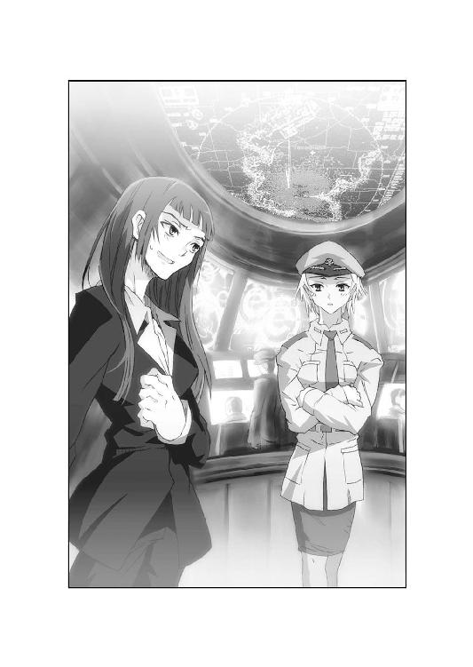
「こっちだ、ロレイン！」
大牙は、少女を抱えるようにして通路を進んだ。
だが歩みは一向に進まない。船が揺れるたび、二人は壁にぶつかった。
「大ちゃん、これは......」
「違う、お前のせいじゃない！」
ロレインを抱き起こして、大牙は叫んだ。
「たとえお前を狙ったとしても、それは魔群のせいだ！ 今はそんな事考えるな！」
だが大牙の鼓膜には、まだ刺青の哄笑がこびりついている。
あれが笑い声を上げた途端、砂嵐が湧き起こったのだ。
確かにきっかけは刺青だが、ロレインには自分を責めてほしくなかった。
「おっと、そっちも苦労してるらしいな」
通路の陰から飛び出してきたのは、ゼットだ。
その後ろには、グラント博士とサイクス助手もついている。
大牙は三人を一瞥すると、呼吸を整えた。
「まあな。救命艇で退船しろって指示が出た」
「こっちもだ。直接接岸する搭乗口は、損傷が激しくて使えないらしい。狙われそうな人物は全員、大桟橋に行けって御命令だぜ」
そう言うゼットの背後で、グラント博士は口元を押さえた。
「は、早くその救命艇に連れてってくれ、ゼット君。でなきゃ僕は脱出する前に窒息死しそうだよ。胃の中のモノが喉元まで出かかってるんだ」
「ぼ、僕ももうだめです、うぷっ」
サイクス助手も、口元を押さえてうめいた。
「すみませんが、もうここで......」
「いかんよ、サイクス君！ 君が吐いたら私もつられて......ううっ」
青ざめる二人に、意を決してロレインが駆け寄った。
「大丈夫ですか。私、背中をさすります」
ロレインも青い顔だが、サイクスの広い背中を懸命に撫でる。
ゼットは、傾いた通路で唇を歪ませた。
「来世では俺も船酔いするとしよう。そうしたら美人看護師の手当てが受けられる」
「言ってる場合か！ 行くぞ！」
大牙は、ロレインとサイクスを引きずるように駆け出した。
研究船クリティアス号には、左右両舷に五隻ずつ救命艇がある。
各一○○名が乗り込めるそれは、通常クレーンで固定されていた。
すでにそのうちの一隻、第一救命艇が舷側通路まで吊り下げられていた。
「大牙、ゼット、急げ」
待機していたハドレー少佐は、手にＭＰ七ＳＤ九短機関銃を構えている。
「我々も下船する。大桟橋に避難した方が安全だからな」
チーム・アスカロンの面々も完全武装で、救命艇の周囲に展開していた。
その身体には、猛烈な勢いで砂嵐が吹きつけている。
大牙も舷側通路に出た途端、その洗礼を浴びた。
「痛っ......肌が切れそうな砂粒だぜ」
「カルタゴの砂嵐より手荒いとはな」
ゼットもグラント博士を背にかばい、顔をしかめる。
しかしロレインは一人、砂嵐の向こうに目をやっている。
横浜のイルミネーションは消え、悪辣な火災が一望できた。
「大ちゃん、街が......！」
言われて、大牙も視線を向けた。
強風が業火をあおり、火の手は四方に延焼している。
消防車のサイレンの音は、ずっと同じ場所から聞こえていた。
きっと道路が塞がれ、どこにも進めずにいるのだ。
「今は脱出するのが先だ、ロレイン」
大牙は、憤激をこらえて告げた。
「こうなったら俺たちの力だけじゃどうにもできない。さあ、早く」
「う、うん」
ロレインがうなずいた時、クリティアス号が大きく傾いた。
強風で船首が持ち上がり、通路は急斜面へと変貌する。
大牙は舷側の手すりをつかまえ、もう片方の手でロレインを抱いた。
「くそっ、これで救命艇を降ろせるのかよ！」
だが彼の目は、吹き寄せる砂嵐を凝視した。
上空から迫る黄色い砂が、空中で渦を巻き、急接近する。
それは船体まで近づくと、無数の人形に変貌したではないか。
砂粒が長い髪を、端整な顔を、豊かな胸を、長い脚を形作る。
砂塵でできた裸女が夜空を飛び、大牙たちに襲いかかったのだ。
「みんな、伏せろっ！」
ロレインを抱えたまま、大牙も通路に這う。
砂塵の魔女が頭上をかすめると、砂礫が頰を叩いた。
何人かのアスカロン隊員は襲撃をまともに受け、舷側から海へ転落する。
「やはり襲ってきたか！」
ハドレーは、短機関銃を三連射で撃ち放つ。
しかし弾丸は魔女の身体を通り抜け、ただ嘲笑を浴びただけであった。
「銃撃がきく相手じゃないな！」
ゼットが叫んで、左右の腰から回転切断環を放った。
環状の刃が闇に閃き、魔女の群れを左右から挟撃する。
だがその投擲も、横殴りの暴風をまともに受けた。
回転切断環は失速し、虚しい音を立てて通路に落ちる。
「ちっ、俺がそれで諦めると思うなよ」
ゼットは、再び腰のベルトから何か取り出そうとする。
しかし大牙は、彼の背に叫びを放った。
「退け、ゼット！ 待ち伏せは分が悪い！」
「なんだと？」
「ロレインや博士を守りながら戦うのも不利だ！ みんなを守って船内へ戻れ！」
敵は、大牙たちが下船するのを予測して襲ってきたのだ。
足場が揺れ、視界の悪い状況では反撃もままならない。
しかし冷静な大牙とは裏腹に、ゼットの闘志は燃え盛っていた。
「冗談言うな、こいつらは俺が殺る！」
頑とした声で、ゼットは言い放つ。
「そこで見ていろ、魔群と戦えるのはお前だけではない！」
砂塵の魔女が、群れをなしてゼットに襲いかかった。
すでに目前。黄色い腕が、彼の四肢にからみつく。
だがゼットも、手すりを支えに身をひるがえした。
「カルタゴの男に、砂で挑むとは笑わせる！」
再び両手から回転切断環。だがもう一度、空を切るかに思えた。
しかし至近から放たれたそれは、今度こそ魔女の身体を切り裂いていく。
それだけではない。魔女にめり込んだ回転切断環が、勢い良く爆砕したのだ。
上半身を形成する砂粒を吹き飛ばされ、一体の魔女が消失した。
「俺の回転切断環にも、いろいろ種類があってな」
ゼットは、腰に並んだ回転切断環ホルダーを撫でた。
「今のは刃先に粘性爆薬を塗ってある。ホルダーから抜けば、五秒で爆発する」
そしてまた、左右の指に回転切断環を引っ掛ける。
ゼット・ハンニバルは、魔女の群れを睥睨した。
「下っ端はどくんだな。俺が会いたいのは、お前らを操る魔群本人だ」
しかし魔女たちの哄笑と共に、クリティアス号の船首が再び持ち上がった。
両手の塞がっていたゼットは、大きく平衡を崩した。
「しまった！」
ゼットは通路に倒れ、回転切断環はあらぬ方向へ飛ぶ。
そこへつけ込む魔女の群れに、大牙は素早く身を起こした。
「手すりを放すなよ、ロレイン！」
大牙は、青い閃光を背中から放った。
蒼竜の翼をまとい、瞬く間にゼットと魔女の間に割り込む。
腕を振り抜くと同時に鳳凰の刃を生み出した。
そのまま最前の魔女を、真っ二つに斬り払う。
「主の魔群もどこかで見ている！ 隙を見せればつけ込んで来るぞ！」
それが、大牙には不気味でならなかった。
魔群は、いまだ姿を見せていない。
蝙蝠を操る者。砂嵐を操る者。別々だとすれば、魔群は二体いるはずだ。
雑魚に手こずっている場合ではない。
「お前の意見を聞けと言うのか！ 俺を助けたつもりらしいが、そうは......」
ゼットが叫んだ時、今度はクリティアス号の船尾が上昇した。
通路の傾斜が逆になり、床に這う人々から苦悶が響く。中でも......
「は、博士ええっっ！」
サイクス助手が、船首めがけて斜面を滑り落ちていった。
丸い身体が土煙を上げ、そのまま手すりに激突する。
と思いきや、彼の身体は手すりの間を抜け、下半身が船からはみ出した。
「た、助けてください！ 落ちるうっ！」
「な、何しとるんだ、この忙しい時に！」
グラント博士も悪態をつき、助手の下へ滑り降りていく。
だがその走路に、忽然と砂塵の魔女が現れた。
砂礫でできた腕を伸ばされ、今度は博士が悲鳴を上げた。
「いかん、助けてくれ！ ゼット君！ 大牙君！」
再び、大牙が宙を舞った。斜面を跳び、魔女を横薙ぎに粉砕する。
しかしグラント博士は勢いがついたまま、手すりの間をすり抜けてしまった。
下は海面。だが博士の両腕が、かろうじて手すりを握りしめている。
「だめだ！ こんな過酷な運動、僕にはとても......！」
「待っててください、今、俺が......！」
叫ぶ大牙の背に、魔女が覆いかぶさった。続けて腕に、足にからみつく。
大牙は、背後を振り返った。
「ゼット！ ハドレー！」
だが博士たちを助けに行ける者など、どこにもいなかった。
砂塵の魔女は、無尽蔵に思えるほど次々と湧き出てくる。
ゼットは無論、チーム・アスカロンも全員拘束されていた。
ただ一人、か細い少女だけが通路を滑り降りていった。
「博士！ サイクスさん！ 今、行きます！」
ロレインは、船首めがけて滑走する。
だがあまりに無謀。あまりに無防備であった。
「だめだ、ロレイン！ 戻ってこい！」
しかし大牙の声より早く、ロレインは二人の下にたどり着いていた。
そして素早く、グラント博士の腕を引き上げる。
「がんばってください、博士！ ほら、早く！」
「す、すまない、ロレインさん......ううっ！」
ロレインは傾いた床で足を踏ん張り、何とか博士を助け出した。
続いて二人は、サイクスの両腕をきつく握り締める。
「サイクスさん、ちょっと痛いかもしれませんけど！」
「ありがとうございます......あっ、でも本当に痛い！」
「少しは腹を引っ込めんかね！ これじゃとても......」
ロレインと博士は、サイクスの身体を手すりから引き抜こうとした。
だがサイクスは、顔を真っ赤にするだけでなかなか身動きできない。
すると彼らの周囲に、いつの間にか砂礫が集まり始めていた。
「ロレイン、逃げろ！ そこにいては......！」
しかし大牙の叫びは、届かなかった。
ロレインたち三人を囲う砂塵は、勢いを増した渦となる。
それは瞬く間に彼らを覆い隠し、船首の一部ごとえぐり取ってしまったのだ。
「大ちゃん！」
ロレインの悲鳴が、竜巻の中に搔き消えた。
もぎ取られた通路の残骸と共に、三人は夜空に吸い上げられていく。
それは見る間に上昇し、星なき暗黒に吞み込まれていった。
「どけっ！」
大牙の拳が、からみつく魔女どもをぶち抜いた。
だが砂の女たちは夜空に逃れ、目的は達したとでも言いたげに微笑んだ。
すぐさま大牙は、蒼竜の翼で後を追おうとする。
しかしもうロレインの姿はどこにも見えない。
大牙の前にはただ、砂塵が壁の如く立ちはだかるだけであった。
「いったい横浜で何が起きているんだ？」
官邸会議室で、総理は呻いた。
「多数の死傷者が出ていると言うのは本当かね？」
「事実です、総理。すでに相当数の避難民が、あの砂嵐から逃れてきております。彼らの話を総合すれば、取り残された者も数万人いると思われます」
官房長官は、ＮＨＫのニュース映像を指さした。
被災者たちのインタビュー。その間に挿入された映像は、黄色い砂嵐だ。
内閣総理大臣は、思わず腰を浮かせた。
「これが魔群の仕業なのか......横浜は壊滅じゃないか」
「ジーゲン機関は何をしとるんだ、迫水君は！」
総務大臣が、円卓を叩いた。
「聞けば彼らは横浜にいるそうだな。もし魔群が彼らを狙ったのだとしたら、この責任はジーゲン機関にもあるんじゃないのか！」
「迫水警部補とは、まだ連絡が取れておりません」
国家公安委員長は、眼鏡の位置を直した。
「かろうじて連絡の通じた神奈川県警本部には、クリティアス号の安全確認を急がせておりますが、何分彼らも大桟橋に到着できておりません」
内閣の面々が押し黙ると、総理大臣は右頰を引きつらせた。
「Ｂ号指令に基づき、防衛出動を命ずる」
総理は、法務大臣に視線を向けた。
「神奈川県、隣接する東京都、対岸の千葉県に非常事態宣言。解除指示があるまで、主要道路の民間使用を禁ずる。関東各県からの警察応援をもって交通規制を」
「はっ」
「自衛隊の各部隊は、速やかに行動開始。ただし現時点では被災者の保護を優先せよ」
その声に、制服を着た三人の男が立ち上がった。
「練馬の第一師団、習志野の空中機動団をもって被害者の救出に当たります」
「神奈川県内の病院だけでは負傷者を収容しきれません。輸送艦おおすみ以下海上自衛艦艇を総動員し、本牧、磯子から他の都県へ負傷者を搬送いたします」
「Ｃ一六○輸送隊も同様の任務に向けて待機中です。湾岸線を封鎖して、輸送機の滑走路とする許可をいただきたくあります」
陸上、海上、航空幕僚長に、総理はうなずく。
「分かった。Ｂ号指令に基づき行動したまえ。しかし警戒を怠ってはならん」
総理の声は、異様な緊張をはらんでいた。
「あの砂嵐が拡大しないとは、誰にも断言できんのだからな」
一礼する幕僚長たちの肩も、僅かに震えていた。
大牙は、クリティアス号の船橋で空を眺めた。
午前四時過ぎ。本来なら、朝日が昇ってもいい時刻だ。
だが依然、砂嵐は止む気配もない。黒煙も空を覆い、辺りはまるで闇夜のようだった。
「通信機能は、未だ回復していないわ」
玲子は、ヘッドホンを外して言った。
「でも自衛隊や警察も、砂嵐の壁を越えて被災現場に到着してるみたい。本格的な救出作業が始まってるわね」
「だからって安心できるか。あれから八時間経ったぞ」
大牙は掌に、自分の拳をぶつけた。
「魔群はロレインを手に入れた。例の儀式を始めるには十分だろ」
「儀式空間が構築されたと言うのか？」
「それ以外に何があるんだ、ハドレー」
思い出すのは、天界魔群ゲンツとの戦いだ。
ロレインを門とする儀式。そのために、魔群は来た。
やはり彼らは、諦めてはいなかったのだ。
「ロレインの位置は、まだ分からないのか？」
「今、捜しているところよ。彼女も携帯映像通信器は持ってるから焦らないで」
玲子は、立体ディスプレイに横浜中心部の映像を呼び出した。
「天界魔群ゲンツは、儀式空間として築地の地下を選んだわ。もしかしたら今回も地下かもしれない。地下街やみなとみらい線の構内を中心に捜索してるわ」
「だったら直接捜しに行った方が早いぜ」
大牙が、船橋を出ようとした時である。
長い脚が投げ出され、行く手を阻んだ。
「なら俺も行こう。ロレイン嬢のいる所、魔群もありだ」
ゼットは、壁にもたれて言った。
「魔群は俺が倒す。お前に横取りさせるほど、俺はできた人間じゃないぜ」
「勝手にすればいい。俺はまずロレインを助けたいんだ」
大牙は、疲れたように答えた。
「それが俺の使命だ。魔群の首は、お前にくれてやるよ」
「大牙、お前は何か勘違いしているようだ」
ゼットは呆れて、顔をしかめた。
「自分の使命すら分かっていないとはな。お前は魔群を倒す血統に生まれついた男だぞ。当然、魔群の打倒を何よりも優先すべきではないか」
その言い方に、大牙は怜悧なものを感じた。
ゼットの顔は、平素と変わらぬ不敵な笑み。
だがまるで、作り物の仮面じみて見える。
「ロレインを見捨てても、魔群と戦えって事か」
「そうは言っていないさ。あんなに素敵な......」
「黙れ。口ではおべんちゃらを使いながら、いざとなれば切り捨てるつもりか」
「よしてくれ。俺はハドレー少佐ほどの冷血漢ではない。ロレイン嬢だって、お前と同じように心配しているさ」
ゼットは、つかみどころのない笑みで言った。
大牙は、ハドレー少佐に怒気を向ける。
「ハドレー......ジーゲン機関は、考えを変えていないのか？」
「我々を疑うな、大牙。俺はロレインを見捨てるなど不可能だと思っている」
ハドレーは、真っ直ぐに大牙を見据えた。
「なぜならお前がいるからだ、大牙。お前だけは最後までロレインを見捨てない。たとえ我々に刃向かってでも、ロレインを救うだろう。だからロレインを見捨てるなんて選択肢は、選ぶだけ無駄なのさ」
横では、玲子も黙ってうなずいている。
一呼吸置き、大牙はゼットに向き直った。
「俺は行くからな」
「分かった。俺も彼女への言葉が、おべんちゃらでないと証明しよう」
するとその時、通信回線が小さな声をつないだ。
同時に、立体ディスプレイに乱雑な画像が出る。
〈......大ちゃん......玲子さん......〉
まず玲子が、ヘッドホンを付け直した。
「ロレイン！ 今、どこにいるの！」
大牙も画面に飛びつき、両目をこらす。
やがて途切れ途切れに、ロレインの映像が浮かび上がった。
〈......私......今......ランドマーク......にいる......〉
「ねえ、聞こえますか、玲子さん？」
ロレインは、玲子に持たされていた携帯映像通信器に言った。
「私、今、ランドマークタワーにいるんです。グラント博士とサイクスさんと一緒に」
ロレインは、携帯映像通信器に付いたカメラを二人に向けた。
グラントが手を振り、サイクスが頭を下げる。
一同は、半ば崩れかけたカフェテラスに身を寄せていた。
「よく分からないけど......目が覚めたら、三人ともここにいたんです。ええ、たぶんドックヤードガーデンのすぐ傍です」
ロレインは、周囲を見渡した。
「砂嵐が吹いてるから、外には出てないんです。辺りに人はいません。警察？ いいえ、目が覚めてから誰にも会ってませんけど」
「ちょっと代わってくれたまえ」
グラント博士が、通信器を受け取った。
「ああ、私だ。ここはでかいショッピングセンターらしいね。かなり崩れてるが、幸い火災は起きとらんな。ああ、不思議と怪我なんてしとらんよ」
そして吹き込む砂に咳き込んだ。
「とにかく早く助けに来てくれ。心細くてかなわんのだ」
〈ロレイン、とにかくそこを動くなよ！〉
いきなり、携帯映像通信器の画面に大牙が映った。
〈今すぐ行く！ 何かあったらすぐ知らせろ！〉
「分かったわ。待ってるね、大ちゃん」
通話を切って、ロレインは安堵の息を吐いた。
「もう大丈夫です。大ちゃん、きっと飛んで来てくれますから」
「確かに必死な顔だったな。大牙君の声は耳に突き刺さったよ」
さて、とグラント博士はカフェテラスを覗き込んだ。
「時間的には朝飯だが、何か食べる気になれるかね？」
「いえ、ちょっと今は......」
「だろうね。僕もまだ船酔いが抜けてない。大牙君たちが来るまで休むとしようか」
そう言って博士は、その場にへたりこんだ。
「俺は、ロレインのとこまで走って行く！」
大牙は、船橋のドアノブを引っつかんだ。
「ランドマークタワーなら、たいした距離じゃない。天候が回復したら、救援のＶＴＯＬ機をよこしてくれ！」
「持っていきなさい、大牙！」
玲子が、慌てて携帯映像通信器を放った。
「油断しないでよ！ 魔群はまだどこかにいる！」
「分かってる、後を頼むぜ！」
携帯映像通信器を受け取った大牙は、通路に駆け出した。
だがそのすぐ後に、ゼットが追いすがってくる。
「俺も一緒に行くと言ったはずだぜ。聞こえなかったのか？」
「なら遅れるな。俺はさっさとロレインの所に行きたいんだ」
「ずいぶん焦ってるな。彼女の声を聞いて安心したかと思ったが」
ゼットの言葉に、大牙は立ち止まって嘆息した。
「逆だ。俺は余計に心配になった」
「どういう意味だ？」
「ロレインの言葉を聞いたか？ 辺りには誰もいないと言ってただろ」
「それがどうした」
「ランドマークタワーが無人だなんて不自然すぎるんだよ」
大牙は、いらついたように言った。
「砂嵐が起きたのは、午後八時ぐらいだ。あそこはショッピングモールや遊園地も近くて......だいたい夏休みの土曜日だぞ。どれだけの人間があの中にいたと思う？ 一人残らず逃げたとも思えない。だが火災は起きていないと言ってた。一人残らず、焼け死んだなんて思えるかよ」
「とすると......」
「儀式を行うために、天界魔群ゲンツは肉体を変容させる必要があった。そのために大量の人間を生贄として喰ったんだ。今回も同じ可能性がある」
ゼットは、サングラスの下で目を細めた。
「ランドマークタワーに儀式空間が作られ、もう生贄は捧げられた......」
「最悪の場合、そうだ。そして俺は魔群と戦う以上、常に最悪を考えてる」
大牙は、ぽんとゼットの胸を叩いた。
「俺にもそれくらいの覚悟はあるんだ。お前も世界で魔群を倒せる三人のうちの一人なんだろ。安心してる暇はないぜ」
大牙はそう言って、駆け出そうとする。
だがゼットはしばしその場に立ち尽くし、天を仰いでいた。
「なにやってんだ、ゼット。早く来いよ」
「見直した。さすがは一度、魔群を倒した男だな」
そしてゼットは、諦めたように笑った。
「ロレイン嬢を奪われて熱くなってると思ったが、案外冷静なんだな」
「お前、俺にまでおべんちゃらを使うつもりか？」
「真面目な感想だよ。真面目ついでに告白しよう」
ゼットは、咳払いをひとつした。
「俺はまだ、魔群を倒した事はない」
「なんだと？」
「不死者を倒した事はある。だが魔群とは一度も戦った経験がないのだ」
大牙は、ゼットの笑顔をまじまじと見つめた。
相変わらず、本音の見えない顔である。
「蝙蝠や砂の女を倒した腕は本物だ。お前なら魔群だって......」
「ああ、倒せると信じたい。それに倒したい理由もある」
「その理由を、俺に言えるか？」
「さて、どうだろうな」
ゼットは、己に問いかけるように首を傾げた。
「可能なら話してもいい。少ししか時間はないが」
「走りながら話せる話題とも思えないぜ」
「走る必要はないな。体力の消耗を防いでやろう。車は無理でも、バイクなら道も通れるさ。俺が運転する」
ついて来いと、ゼットは先に立つ。
大牙にはいまだ分からぬ、不可解な男であった。
みなとみらい地区の再開発は、一九八○年代に始まった。
横浜港に接する臨海地域にホテル、遊園地、ショッピングセンターが建設され、一大観光スポットとして名を馳せた。
それだけでなく官庁、大企業の本社ビルを誘致する事で、副都心のひとつとして機能する地区にも変貌していったのだ。
ランドマークタワーは、そのみなとみらい地区のシンボルである。
七○階建て、高さ二九六メートルの高層ビルは、オフィスとホテルを備えている。
そしてその足下に、ドックヤードガーデンと呼ばれる場所があった。
かつて船舶を建造していたドックを、そのままイベント会場に改装したのだ。
ロレインたちは、そのドックヤードガーデンで息を潜めていた。
辺りはしんと静まりかえり、聞こえてくる音は皆無だ。
「しかしロレインさんも落ち着いたものだね。怖くないのかい？」
「それは怖いですけど......でも大ちゃんが来てくれるから平気です」
「ま、私もそうだね。彼がここで待てと言ったから待てるんだ。でなきゃ今すぐここを逃げ出したいよ。もっとも外は砂嵐だが」
グラント博士は、拾ったミネラルウォーターを握った。
「君はどうかね、サイクス君。何も口にしていないようだが？」
「ええ、気分の方はもういいんですけど......」
サイクスはさっきから、苦痛に顔を歪めていた。
気づいたロレインは、彼の身体を眺めまわす。
「サイクスさん、どこかお悪いんですか？」
「さっきから足首が痛くて......」
「見せてください。右足ですね」
ロレインが足首に触れた瞬間、サイクスは甲高い悲鳴を発した。
「そ、そこですううっ！」
「静かにしたまえ、サイクス君。我々は魔群の懐にいるんだぞ」
「たぶん、ヒビが入ってますね。これ、船で滑った時ですか？」
「今頃になって痛み出してきたんですよ。安心したせいでしょうか」
立ち上がったロレインは、周囲を見渡す。
「私、薬局を探してきます。湿布か何か当てないと」
「馬鹿言っちゃいかんよ、君はここにいるんだ」
グラント博士は、ミネラルウォーターを喉に詰まらせた。
「大牙君も言ってただろ、ここを離れるなって」
その言葉に、ロレインも一瞬躊躇の気配を見せる。
だが彼女の中で、より強い何かが目覚めた。
「でもやっぱり、サイクスさんをこのままにしておけません。私、行きます」
固い決意に、サイクスは首を横に振った。
「僕ならいいんです。助けが来るまで我慢できますよ」
「だめですよ。私、これでも看護師志望ですから。すぐに戻ります」
ロレインは、きつく唇を結んで駆け出した。
「待っててくださいね、サイクスさん！」
「おい、本当に行くつもりか！ 待ちなさい、待ちなさいってば！」
泡を食って、グラント博士も後を追う。
ロレインはかまわず、ランドマークプラザの中に飛び込んでいった。
ランドマークプラザは、地上五階建てのショッピングモールである。
一階から五階まで吹き抜けの構造になっており、無数の店舗が立ち並んでいた。
ロレインは、一階のフロア表示に飛びついて微笑んだ。
「あ、よかった。薬局は一階にあるわ」
そのまま進路を確かめ、崩れた壁材を乗り越えていく。
後から追いかけるグラントは、その行動に声を震わせた。
「もっと慎重に、ロレインさん！ あ、足下にも気をつけて！」
辺りのショウウィンドウは砕かれ、商品も散乱している。
転がっている手提げは、誰かの荷物らしい。
しかしいくら先に進んでも、人っ子一人いはしなかった。
「ここにいた人たちは、みんな避難しちゃったのかしら？」
そう言ったロレインは、急に足をすくませた。
通路を曲がった途端、何かに気づいて立ち止まる。
おかげでグラントも、ようやく少女に追いつけた。
「そんなに速く行っちゃ危ないよ。もう少し辺りの様子を見てから......」
「......見てます、博士」
ロレインが、呆然とした声で告げた。
「これ、もしかして......」
グラントも声を失った。
そこは一階中央、吹き抜けのイベントスペースである。
冬ともなれば、巨大なクリスマスツリーが飾られる事で有名だ。
しかし今やそこは、荘厳な円形劇場に変わっていた。
せり出した舞台を囲むように、客席が整然と並んでいる。
柱の造りは重厚で、二階には貴賓席まで用意されている。
そして天井から吊り下がるのは、巨大なシャンデリア。
しかしその全てが、美しさとは無縁の代物だった。
舞台も、柱も、座席も、シャンデリアも、みな黄色い肉で形成されている。
劇場全体が黄色い膿をしたたらせ、ぶよぶよと蠢く。
床にまで黄色い膿が流れ出し、辺りには腐敗臭が漂っていた。
「君が捕らわれた時の......映像に似ている......」
グラント博士は、周囲の異変にも気づいた。
「どこかのオペラ座に見えるが、どう考えても......」
「魔群の儀式空間......」
ロレインは、劇場の柱を見上げた。
びっしりと刻まれた異様な文字には見覚えがある。
天界魔群ゲンツが、口から召還した文字と同じものなのだ。
ロレインは、一歩退いて呻いた。
「大ちゃんに知らせないと......ここが危険だって」
「それより逃げるのが先決だよ」
グラント博士は、辺りをうかがいながら言った。
「やはりここは来てはいけない場所なんだ。さあ、早く」
「は、はい......」
うなずいて、ロレインはまた一歩下がった。
恐る恐る、足音を立てないようにもう一歩。
だがそこで急に、少女の歩みが止まった。
「ロレインさん、どうしたんだね？」
逃げようとしていたグラント博士が振り返る。
しかしその時にはもう、ロレインは舞台に向かって歩き出していたのだ。
「ど、どこへ......！」
グラント博士は、必死に叫んだ。
「ロレインさん、行ってはだめだ！ 聞こえないのか！」
博士は慌てて駆け出し、少女を連れ戻そうとする。
だがその瞬間、舞台が淡く輝き始めた。
その閃光に屈し、グラント博士はひざまずく。
逆にロレインは、光に導かれるように舞台に立った。
そして揺れ動く肉のシャンデリアを、ゆっくり見上げたのだ。
「ロレインさん！」
突然、少女の身体がびくんっと痙攣した。
そのままロレインは足下から崩れ落ちる。
美しい金髪が、汚れた膿の中に転倒した。
伸びた腕は空をつかみ、微動だにしていない。
ただひとつ、その肌を蠢くものがあった。
刺青の女が、この時を待っていたかのように姿を見せる。
その哄笑は辺りに響き渡り、劇場を喜悦に震わせていた。
【第三章】
「確かに俺は、とばせと言ったぜ！」
ゼットの腰にしがみつき、大牙は叫んだ。
「けど、これじゃとばしすぎだ！ 俺を振り落とすつもりか！」
「もし振り落とされたなら、大牙、お前もそれまでの男だ」
バイクを駆るゼットは、意気揚々と答えた。
「お前の力をバイクも試しているのだ。俺によく似た、いいマシンだろう？」
銀色と漆黒で塗り分けられたそれは、トライアンフ社のモンスターマシン。
排気量三○○○ｃｃを誇る、ロード・ロケットＶだ。
どっしりとした重量感のあるフォルムが、爆音を立てて横浜市街を突き進む。
路上にはいまだ車輛の残骸があふれているが、ゼットはそれを縦横にすり抜けていた。
さながら都市を走る鋼鉄の騎馬。古典的形状だが古臭さは微塵もなく美しい。
だが大牙にとっては、野太いエンジン音も耳に痛いだけであった。
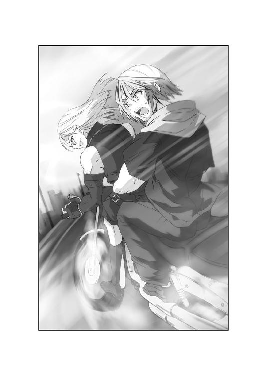
「しかしうるさいバイクだな、これ電気や水素動力じゃねえのか？」
「俺に言わせれば、音の出ないバイクなどバイクではない。ガソリンを食い、轟音と震動を撒き散らしてこそ、オートバイなのだ」
「今時、排気ガス出すバイクなんて珍しいぜ」
「なんとでも言え。俺は地球に厳しいバイク乗りなのだ」
大牙は呆れて、燃え盛る横浜を見渡した。
放水する消防車の向こうでは、被災者が列を成して動いている。
救急車の周囲には、助けを求める人々も集まっていた。
「早くうちの子を病院に運んでください！」
「もう無理です、次の救急車を待ってください！」
「いつまで待たせる気だ、救援なんて来ないぞ！」
悲鳴は、バイクの爆音よりも耳に突き刺さる。
鼓膜に残った声に、大牙は奥歯を嚙みしめた。
「......俺は、あの人たちに恨まれるかもしれない」
「弱気だな。ロレイン嬢には自分を責めるなと言いたげだったが」
路傍で燃え盛る乗用車には、黒焦げの死体が乗っている。
道端には、黒煙を吸って倒れたらしい人影も。
「せめて仇は討つ。それが俺の使命だ」
「お忘れらしいが、魔群を討つのは俺に任せてもらいたい」
ゼットは、ハンドルを切りながら言った。
「俺はどうしても、最初の獲物を討ち取ってみたいのだ」
そしてロード・ロケットＶは停止した。
目前には、ランドマークタワー。
砂嵐の中にそびえ立つ超高層ビルは、さながらバベルの塔だ。
しかし大牙はその威容も見ずに、ゼットに視線を向けた。
「お前が魔群を倒したい理由、聞こうとは思わないぜ」
大牙は、自分の過去も振り返る。
「俺には魔群と戦う因縁がある。お前だって、あんな化け物と戦うにはそれ相応の理由があるんだろう。だが理由を聞けば、きっとお前の過去にも触れる事になる」
大牙は言葉を切った。
「言いたくなきゃ、無理する必要はないんだ」
「知ったような口をきくな」
ゼットは、嘲笑で応えた。
「俺には、お前のような過去などない。負い目だって感じていない」
「ならどうして......」
「チャンスを逃したくないだけだ」
短く、ゼットは断言する。
「俺はな、大牙、お前の父親であるディートリッヒ大佐に見出された。生まれついての蛇眼を生かし、対魔群戦闘要員として幼い頃から訓練を受けてきた」
「............」
「そしてもし魔群が本格的に動き出したなら、俺が真っ先に魔群を倒してやろうと思っていたのだ。それがどうだ。人類で初めて天界魔群を倒した栄誉を勝ち取ったのは、俺ではなかった。お前だったんだよ、鳳凰寺大牙」
大牙は、思わぬ言葉に眉を寄せた。
「そんな事、どうでも......」
「俺にはどうでもよくないんだ、大牙。ジーゲン機関は、そして世界各国は、お前を救世主のように思っている。しかし俺の事は......」
言いかけて、ゼットは口ごもった。
「......俺は、お前の補欠じゃない」
そして身をひるがえした。
「しゃべりすぎた。行くぞ、彼女が待ってる」
「おい、ゼット！」
だがカルタゴの男は、もう口をつぐんでいる。
駆け去る背中には、他者を寄せつけぬ気配が漂っていた。
「大牙さん、ゼットさん！」
サイクスが建物から、足を引きずって出てくる。
しかしすぐに倒れた彼に、ゼットが駆け寄った。
「怪我してるのか、サイクス？」
「ええ......バイクの音が聞こえたので、きっとゼットさんだと思いましたよ」
「おい、ロレインはどうした？」
大牙は、周囲に目を配る。
「それにグラント博士もいないじゃないか」
「実は、僕の怪我を知って薬を探しに......」
無謀な、とゼットは吐き捨てるように言った。
「ここがどれほど危険か分かっていないな。魔女の大鍋にいるようなものだぞ」
「すみません。僕も止めたんですが」
「大牙、お前の忠告も無視されるとはな」
言われて大牙は、自分の腕時計を見た。
ロレインを示す光点は、確かにランドマークプラザ内で点灯している。
「いや、ロレインは彼が心配だったのさ」
大牙は、立ち上がるサイクスに肩を貸した。
「状況がどんなに危険でも、誰かを救う事だけは譲らない。ロレインにはロレインなりの掟って奴があるんだ」
しかし大牙は、不自然な光景に不安をつのらせた。
ここに来るまで、幾多の火災と無数の被災者を見ている。
だがこのランドマーク周辺にたどり着くと、人の気配がまるでないのだ。
目の前にある遊園地にも、ただ砂塵が吹き荒れるだけだ。
「あんたはここに残って、後続を待ってくれ」
サイクスを石段に座らせ、大牙は言った。
「俺とゼットは、二人を捜しに行く。出たのはどれくらい前だ？」
「一五分......いや、もっと前かも」
「なるほど。位置特定反応があるうちに、救出しないとやばいな」
大牙は、ゼットに視線を向けた。
「行くぞ、油断するなよ」
「それは俺が言いたいな。油断しているのはお前だ」
ゼットはふと、サイクスを斜めに見下ろした。
「サイクスが魔群かもしれないと、なぜ考えない？」
「ど、どういう意味です、ゼットさん？」
「お前のどんくさい行動は不自然だ。船上でロレイン嬢を自分に引きつけ、ここまで連れてきたのはお前ではないのか？」
大牙は、思わず啞然とした。
「考えすぎだろう、ゼット」
「なぜそう言える？ なぜロレイン嬢が、自分の意志でいなくなったと断定できる？ 不自然な行動も、この男が魔群だとしたら納得できるのだ」
サイクスは、震えながら立ち上がった。
「た、確かに僕は役立たずです。迷惑もいっぱいかけました。でも魔群だなんて......」
「お前もジーゲン機関の一員だ。彼女の重要性は分かっているはずだ。なのに一人で行かせるなど、不自然なほど軽率な判断なんだよ」
「僕が不死者にでもなったと言うんですか？」
「だとしたらすぐ調べはつく。だが魔群が化けているとしたら見分けもつくまい」
気弱な科学者は、もう声すら出てこない。
それでもゼットは、疑念を消さなかった。
「すでに建物の中に罠がある。そこへ油断した俺たちを誘い込む。魔群ならそれくらいの手は使うだろう。それともサイクス、自分の無実を証明できるか？」
「もうやめろ、ゼット。誰にも無実なんて証明できるものか」
大牙は、苛立って言った。
「こうしてる間にも事態は悪化してるかもしれない。俺は行くぞ」
「罠がある可能性をどう見る？」
「あれば嚙み破る。それだけだ」
そしてサイクスを見た。確かに、疑われても仕方ないように思える。
しかし大牙は、『来るべき民族』を思い出した。
疑心暗鬼に陥っても、最後は自分で真実を見抜くしかない。
「俺は、彼の言葉を信じるよ」
大牙は、サイクスを見やった。
「ロレインが危地に飛び込むのは、決して不自然な行動じゃないぜ。あいつならやりかねない。それにいったん走り出したら、ロレインは誰にも止められない。俺にもだ」
「ずいぶん自信ありげだな」
「あいつは、俺が一番良く知ってる」
大牙は呼吸を整えて、サイクスを見た。
「じゃあ行って来る。ここで待ってろよ」
「......だったら、僕も一緒に行かせてください」
サイクスは急に、決意を固めて言った。
「疑いを晴らすにはそれしかない。僕も行きます」
「怪我してるんだろ。やめとけよ」
大牙は、落ち着いた声で諭した。
「今は、足手まといになるだけだ。お前の事は信じてるからここにいろ」
「違う、大牙さんも僕を信じていない」
「どういう意味だよ」
「大牙さんが信じてるのはロレインさんです。僕の言葉じゃないんだ」
涙ぐんだサイクスの瞳は、赤く充血していた。
信頼を失い、それを取り戻そうとする必死な顔である。
それでも大牙は、サイクスをその場に座らせてやった。
「信頼は、お前本来の任務で取り戻せばいいさ。ロレインが帰ってきたら、あいつの刺青を消す方法、探り出してくれよな」
「大牙さん......」
「丁寧な呼び方はやめてくれ。あんたの方が年上なんだろ」
サイクスは、もう何も言えずにいる。
その姿に、ゼットは疲れたように嘆息した。
「さて、お前の判断が吉と出るか凶と出るか」
「ゼット、彼を疑うのもいい加減に......」
ふと大牙は、上空を仰ぎ見た。何かの気配。しかし殺気はない。
すると砂嵐の向こうから、白い機影が見えてきた。
「飛行機......？」
一瞬、そう思う。だがやけに小さい。
模型飛行機じみた、頭でっかちの飛行物体が頭上を行き過ぎたのだ。
「あれは陸上自衛隊の無人偵察機だ。長距離タイプだな。人工頭脳を搭載し、カメラでとらえた映像を操縦者に送信する」
ゼットの言葉に、大牙は顔を向けた。
「へえ......砂嵐の内情を探るために来たのか」
「日本政府も不安なのだ。おっともう一機来たぞ」
次第に機数を増す無人偵察機は、トンボの群れのように飛び回る。
しかし大牙はそれを無視し、ランドマークプラザに踏み込んだ。
「今の俺には関係ない。先に行くぜ」
その瞬間、頭上で爆発音がした。
無人偵察機が、たて続けに空中で火球と化す。
低空を飛んでいた一機は、大牙の背中にも爆風を叩きつけた。
「な、なんだ！」
「ひいいっっ！」
大牙は、サイクスを抱えてプラザ内へ飛び込む。
撃墜された機体が地面に激突し、衝撃がショウウィンドウを割った。
妙なエンジン音が聞こえたのは、その後だった。
「戦闘機......？」
地面を、十字形のシルエットが横切っていく。
それは砂嵐をものともせず、大観覧車に沿って上昇した。
逃げ惑う無人偵察機を高速で追跡し、機関砲を発射する。
大牙もようやく、その正体をとらえた。
「馬鹿な、あれは......！」
二○二○年の横浜に、プロペラ戦闘機が飛んでいた。
「敵戦闘機の映像です。現場で救援にあたる陸上自衛隊が有線で送信してきました」
統幕議長の声で、内閣は一斉に椅子から身を乗り出した。
茶褐色の迷彩を施された機体は、確かに単座のプロペラ式戦闘機だ。
その機体データも、瞬時にディスプレイ上に表示された。
「メッサーシュミットＭｅ一○九Ｅだと！」
総務大臣が叫ぶと、統幕議長も表示を読んだ。
「そうです。今から約八○年前に活躍した戦闘機です。第二次大戦初期、ドイツ軍が使用した最もポピュラーな戦闘機ですが......」
機体にはこれ見よがしに、鉤十字が描かれていた。
亡霊めいた戦闘機のデータも、瞬時に羅列されていく。
「エンジンはダイムラー・ベンツＤＢ六○一Ｎ、出力は一二○○馬力。二○ミリ機関砲と七・九二ミリ機銃を二門ずつ装備しています」
統幕議長は、さらに続けた。
「しかも機首側面に防塵フィルターが確認できます。あれは北アフリカ戦線に投入された熱帯地運用型ですな」
「魔群の一味に違いない。だとすればただのプロペラ機でもないぞ」
総理は、横浜の救援スケジュールに目を向けた。
「現場の自衛隊、警察、消防に退避を急がせたまえ」
彼は拳を握って、画像をにらむ。
「それから横浜に移動中の部隊にも警告を出すんだ。被災者を乗せた航空機や船舶が攻撃を受けたらひとたまりもないぞ」
状況を表示するディスプレイでは、次々と無人偵察機が撃墜されていく。
総務大臣は、拳を握って歯嚙みした。
「こんな真似をするナチの亡霊は、いったいどこの誰だ！」
「走れ、ゼット！」
叫ぶ大牙目指して、ゼットは砂を蹴散らした。
その背後からメッサーシュミットが襲い来る。
猛然と飛来した亡霊は、機関砲と機銃を同時に撃ち放った。
「古臭い武器を持ち出しやがって！」
ゼットは石段を蹴って機関砲をかわし、身をひるがえして機銃から逃れる。
転がるようにプラザ内に飛び込むと、戦闘機は諦めて上昇していった。
「ふん。建物に入ればどうって事はない。脅しだけか」
「そうとも言えないぜ、いずれ俺たちもここから出るんだ」
大牙は、携帯映像通信器を取り出した。
「玲子、聞こえるか。応援にＶＴＯＬ機をよこす時は注意しろ。こっちは今、メッサーシュミットに襲われてる」
〈メッサー......シュミットですって？〉
通信機の画面に出た玲子は、目を丸くした。
〈どうしてそんな機体が今頃......〉
「俺が知るもんか。奴らもナチスだってことをアピールしたいんだろ」
〈だけど......ＶＴＯＬとは速度も武装も比べ物にならない......わよ〉
それは、まともに考えたらの話だ。
大牙は、割れたショウウィンドウから空を見上げる。
悠然と観覧車の上空を回る機体を確認し、呼吸を整えた。
「ハドレーに言っとけ。相手はアフリカの星だ。お前もイギリス軍なら、八○年前の仇を討つチャンスだってな！」
会話を切ると、大牙はサイクスに肩を貸した。
「あいつがいる限り、外で待つのは無理だ。俺たちと一緒に行こう」
「お、お手数おかけします」
その後を追うゼットは、不思議そうに大牙を見た。
「おい、まさかあの戦闘機が何者か知ってるのか？」
「ああ。あの戦闘機の機体番号を見たか？」
「一四って書いてあったな。それがどうした」
「あれは中隊の一四番機って意味だ。ただしドイツ空軍の中隊は一二機編制。一四番機なんて、本当は存在しない」
ゼットは、暗がりで足を止めた。
「ずいぶん人を喰った奴だな」
「お前が言えた義理かよ。だけどそんなパイロットは一人しかいない。しかも熱帯仕様......あれは北アフリカ戦線の撃墜王、ハンス・ヨアヒム・マルセイユ大尉だ」
大牙は、残骸を乗り越えて言う。
「当時、イギリス軍相手に散々暴れまわった男だ。最終スコアは一五八機だっけな。かなりの男前で、当時のドイツじゃアイドル並の人気だったらしいぜ」
「俺は、俺以外の男前を許せぬたちでな」
「しかし帰投途中にエンジントラブルを起こし、二十二歳の若さで帰らぬ人となった......しかし化けて出なくてもいいものを」
探るように進みながら、大牙はため息をついた。
「まったく......ボルマンだけでなく、マルセイユ大尉まで魔群になったとはな」
「大牙さん、詳しいですね。それもナチスの資料で読んだんですか？」
サイクスに言われて、大牙は一瞬足を止めた。
脳裏の奥に、懐かしい声がよみがえっている。
だしぬけに現れた過去に、大牙は嫌悪感を覚えた。
「いや......昔、誰かに聞いたのさ」
「それはいったい......」
言いかけたサイクスの口を、大牙は手で塞いだ。
目の前は、広々としたショッピングモール。
吹き抜けの構造だが、照明は落ち、辺りは暗い。
砂嵐の衝撃によってか、店舗はほぼ破壊されている。
とても生存者がいるとは思えない。しかし......
わさ、わさ、わさ......周囲には、無数の気配がざわめいている。
ちき、ちき、ちき......細かなさえずりも次第に広がった。
「これでは暗すぎて、俺の蛇眼も役に立たんな」
ゼットも悟って、両手に何かを握りしめた。
「だがそれが狙いなら、無駄な努力と言うものだ！」
力いっぱい投げつけたのは、閃光手榴弾。
左右の壁にぶち当たり、人工の太陽を生み出した。
さらに内部から発光ジェルも飛び散り、周囲はすぐに明るくなる。
そしてようやく気づいたサイクスも、か細い悲鳴をしぼり出した。
「こ、こ、こ、これはあああっっ！」
辺りの壁は一面真っ黒に染まり、おぞましく蠢いている。
よく見れば周囲には、びっしり蝙蝠がへばり付いているではないか。
何千、何万......数えきれぬほどの大群が、閃光に悲鳴を上げていた。
「......またこいつらか！」
大牙は、サイクスを背にかばい、血魂を沸騰させた。
船内で襲われた時とは比較にならぬ大群。
これだけの敵に血を奪われれば、敗北は必至である。
だが身構えた大牙の視線は、瓦礫に立ち上がる人影をとらえた。
「......鳳凰寺大牙」
呼びかけたのは、筋肉質の巨漢。
腰布一枚身に着けた半裸の男だ。
「......お前を、待っていた」
その肌は赤銅色。瞳孔のない眼球は、ただ真っ白にぎらつく。
ざんばらの黒髪は背中まで垂れ、古代の狂戦士を思わせた。
しかし彼の髪飾りや、顔を彩る戦化粧は、男の出自を示していた。
片手にトマホーク、片手に槍をかまえた男は、明らかにネイティヴ・アメリカンだ。
そして剝き出しの胸には、翼を広げた蝙蝠の刺青が羽ばたく。
「冥界魔群、バイトゴゴ」
巨漢は、ごろごろと喉を鳴らした。
「だが俺は自分の名前が好きではない。俺の名前は、追放されし者の呼び名だ」
「何だと？」
大牙は、サイクスを瓦礫の陰へ押しやった。
魔群も、まず一歩を踏み出して来る。
「バイトゴゴとは......引き籠もる者」
「やけに不健康な呼び名だな」
「刺青が刻まれた俺は、女を犯し、殺人を重ね、部族から追放された。住み着いたのはカールズバッドの洞窟。闇こそが、俺のねぐらだ」
大牙さん、とサイクスが背後から呼ぶ。
「カールズバッドは、北米にある巨大な洞窟です。まさに蝙蝠の巣だ」
「ほお。じゃあお前の友達は蝙蝠だけか」
大牙が問うと、魔群はトマホークをぎりぎりと握る。
「違う。俺にはボルマン様がいる。総統は、俺を信頼されている。お前の抹殺要員に選んでくだされたのも総統だ。俺はその信頼に応えたい」
「感謝の印が俺たちってわけか。迷惑な話だ」
ゼットはため息をつくが、大牙は戦闘態勢に入った。
「船でロレインを奪おうとしたのもお前だな」
「奪うのではない。取り返す」
魔群は、槍を頭上にかざした。
「俺の遺産呪門は、カールズバッドの蝙蝠。ここから先は誰も通さない」
巨漢バイトゴゴは、突如けたたましい咆哮を発した。
同時に蝙蝠の群れが、飛翔する。
それは空飛ぶ黒い津波となって、大牙とゼットに襲いかかった。
「同じ手が通じるか！」
大牙は、両手両足から血魂を解き放つ。
それは白光、白虎の拳となって四肢を覆い尽くした。
殺到する蝙蝠は、閃光を浴びるや次々と炭化していく。
それでも魔群の手先は、怯むことなく押し寄せてきた。
「雑魚に手間取るな、もっと効率的に戦え！」
ゼットに接近した蝙蝠は、瞬時にして閃光手榴弾に吞まれた。
けたたましい悲鳴を上げ、何百匹もの姿が黒炭へと変わる。
するとゼットの前に、ぽっかり突破口が開かれた。
ゼットは回転切断環の狙いを、バイトゴゴに据えていた。
「光に弱いのは分かってる！ 今度戦う時は、先に弱みを握られぬ事だ！」
だがバイトゴゴは、無表情のまま身構えた。
瞬間、ゼットと魔群の間に、一陣の疾風が吹き荒れる。
それはゼットの肌を切り裂き、彼の血潮を噴出させた。
「砂嵐っ！」
黄色い疾風にバランスを失い、慌ててゼットは後退した。
大牙もそれに気づき、襲い来る砂塵から身をかわす。
「馬鹿な、どこから......！」
だが崩れた壁の間を抜けて、屋外の風が吹き込んでいたのだ。
それは確実な意志を持ち、ゼットが放った発光ジェルを吹き飛ばす。
人工の照明はもみ消され、辺りは再び闇へと変わっていった。
バイトゴゴは、ゆっくり一歩を踏み出す。
「砂嵐が光を隠し、俺たちを強くしてくれる」
そしてにいっと笑った瞬間、魔群の背中が盛り上がった。
筋肉をめきめきと突き破り、体内から黒い翼が産声をあげる。
犬歯が音を立てて伸びると、蝙蝠たちも再び活気づいてきた。
その群れを従えたバイトゴゴの姿は、まさしく蝙蝠の王であった。
「俺たちは三位一隊。互いに助け合うのだ」
大牙は、すぐに理解した。
砂嵐は、恐らくマルセイユ大尉とおぼしき魔群の遺産呪門だ。
その助力があるからこそ、魔群バイトゴゴは昼間でも戦える。
以前の魔群たちよりも、密接なコンビネーション。
だがゼットは、その事実にむしろ勇躍してみせた。
「それでいい。倒し甲斐があるというものだ」
再び回転切断環を、指先で回す。
「俺が初めて倒す魔群だ。強ければ強いほど認めてもらえるだろう」
ゼットは瓦礫を飛び越え、真っ直ぐバイトゴゴを狙う。
何か策があるとしても、大牙には危険に思えた。
「ゼット、焦るな」
「馬鹿を言え、俺に焦りなどない」
ゼットは、左右の指から回転切断環を投擲した。
やはり発光ジェルを仕込ませてあるのか、周囲は再び明るくなる。
そしてサングラスを外したゼットも、視界を取り戻していた。
「闇がお前の住処なら、光こそ俺に力を与えてくれる」
ゼットの両目が蛇眼に変わった。
「闇を打ち消す方法など、幾らでもあるのだ！」
吼えたゼットの目から、石化光線が放たれた。
だがバイトゴゴは翼を打ち振り、素早くそれを回避する。
「逃してたまるか！」
瓦礫から瓦礫へ、飛び移るバイトゴゴを視線が追う。
飛び交う蝙蝠たちも、石となって地上に落下していった。
しかし大群はバイトゴゴを守り、ゼットを包囲する機動を見せた。
ついにゼットの顔面に、無数の蝙蝠が張りついたのだ。
「くそっ......！」
剝がすまでもなく、視線を浴びた蝙蝠は石に変わる。
だがその間にも、ゼットの全身に他の蝙蝠が喰らいついていく。
鋭利な牙はゼットの服を貫き、ずぶりと肉に突き刺さった。
「ゼット！」
大牙は駆け出そうとして、身を硬くした。
闇の力を得た蝙蝠たちが、再び怒濤となって押し寄せて来たのだ。
しかも闇の支援を受けた蝙蝠は、先ほどとは速度が違う。
大牙の一撃をかわし、白虎の閃光をものともせず、肌に牙を立てた。
急いでむしる。跳躍して、後退する。それでも逃れられない。
その間にゼットは、大量の蝙蝠に覆われていった。
もはや顔には、石化したままの蝙蝠まで張りつき、呼吸すら塞ぎかけている。
「先に弱みを握られたのは、お前だ」
ゼットを見下ろし、魔群バイトゴゴは長い牙を光らせた。
「目を塞げばそれで終わる。簡単な男だ」
魔群は、悠々とトマホークを掲げた。
「倒した相手の首、精霊に捧げる。それがホーカム族の戦士のならわし。毒蛇の目を持つ男よ。我が魂の生贄となり、祖霊の国へ還れ」
ごぶごぶと言う呼吸音は、彼自身の部族の言語に違いない。
大牙は覚悟を決め、鳳凰の刃を右腕に生み出した。
同時に左手からも刀を放ち、両刀を大きく振りかぶった。
それと連動して、身体の奥底から血魂を解き放つ。
刃から飛び出した魔を討つエネルギーが、波動となって闇を裂いた。
真っ赤な光に吞まれた蝙蝠は、数千。一撃で消滅する。
血魂の閃光は、直撃を逃れた蝙蝠たちをも衝撃波で吹き飛ばした。
「獲物は俺だろう、バイトゴゴ！」
大牙は両刀を握ったまま、バイトゴゴに突進した。
しかし魔群は眼光を光らせ、一瞬にして消え失せる。
どこに消えたのか。大牙が急停止した瞬間、ぞくりと背筋が震えた。
身をかわせば、頭上数センチのところを、トマホークが通り過ぎる。
漆黒と黄金の頭髪が数本斬り飛ばされ、大牙は体勢を立て直した。
魔群バイトゴゴはいつの間にか、大牙の真後ろにいたのだ。
「不死鳥の血を引く者め」
魔群は、再びトマホークを大牙の脳天に振り下ろす。
暗闇の中でも、狙いは正確無比だ。
咄嗟に大牙は、鳳凰の刃を交差させ、一撃を受け止める。
大牙とバイトゴゴは、満身の力を込めて刃を押し合った。
「俺の使命はお前の血を奪う事。それで我らは勝利する」
「させるかよ。強制的な献血はごめんだぜ」
激しい金属音。飛び散る火花。
大牙はいったんトマホークを押し退け、垂直に飛び上がった。
そのままバイトゴゴの頭上を飛び越え、魔群の背後を取る。
だが着地した瞬間、大牙の目にバイトゴゴのつま先が飛んできた。
なんと魔群の脚は、関節など無視して真後ろに折れ曲がっているのだ。
「どんな身体してんだ、てめえ！」
蝙蝠が持つ、異常に柔らかな関節を発揮したのだ。
しかし大牙も、驚異的な反射神経で蹴りをかわす。
振り向いた魔群は、今度は槍を突き入れた。
大牙の急所を的確に突き、しかも大牙の動きを読んでいる。
喉元、心臓、肝臓、股間。穂先は次々、急所に襲いかかった。
「俺にはお前が見える。お前には俺が見えまい」
こうまで動きを読まれたのは、初めてだ。
そして周囲には、再び蝙蝠の群れも集まり始めている。
ついに大牙は、壁面までバイトゴゴに追い詰められた。
「もう逃げられない」
翼を広げ、バイトゴゴは微笑む。
「不死鳥の血、飲み干してやる」
涎をしたたらせた目は、血液を渇望していた。
首相官邸は、苛立ちと恐怖に包まれていた。
「あの砂嵐が、全ての元凶です」
統幕議長が、立体表示された戦況図を指す。
「昨夜の発生時よりは勢いを減じていますが、これ以後は東京にも被害を及ぼす可能性があります。そうなれば我が国は首都を失うのです」
「しかし我々に打つ手はないぞ」
総務大臣は、あえぐようにつぶやく。
「すがれるのは、鳳凰寺大牙だけか」
「その通り。砂嵐を打ち消せる者は、あの中にいる」
総理は、口調を強めて言った。
「彼が無事であれば、内部で尽力しているはずだ。しかしね」
一同が、総理に視線を集める。
「彼が死んでしまえば、我々は首都避難策を取らねばならん」
総理は、静かに円卓を見渡した。
「これはＢ号指令に基づく計画だ。東京、埼玉南部、千葉西部の住民の一斉避難。陛下には京都にお移りいただき、我々はさいたま新都心から指揮を執る」
「新都心では近すぎるのでは？ 高崎か宇都宮ではどうです？」
「政府が後方に下がりすぎるのも問題だ。それでは一都三県を全避難させねばならん」
閣僚が硬直しても、総理は続けた。
「問題はどうやって安全に避難を成し遂げるかだ」
「まず横浜市内の住民から退避させるべきです。その方が先決だ」
「待ってください。通信回線は、まだ三○％しか回復しておりません。通達を伝えるには限界があります」
「せめて迫水君と連絡は取れんのか。鳳凰寺大牙の生死さえ分かれば......」
彼の名前に、再び沈黙が訪れる。
しかしその時、官邸会議室の扉が静かに開いた。
「全ては、俺の孫次第か」
しわがれた声音に、総理までもが腰を浮かせる。
「鳳凰寺老......」
鳳凰寺無頼は、静かに杖をついて会議室に入ってきた。
和装の巨漢に、老練な政治家たちもみな萎縮している。
この老人こそ、戦後日本政治の暗闇で、不可思議な事件を処理してきた男なのだ。
鳳凰流闘武術なる力を操り、内外の陰謀を打ち砕いた伝説の人物。
日本の危機にのみ姿を見せ、妖怪とまで言われている。
だからこそ内閣は、今がどんな時か改めて理解した。
「避難指示はもうしばらく待ってくれ。じきに鳳凰寺大牙が事態を解決する」
「しかし鳳凰寺老......」
「あいつは生きているさ。大牙が死ねば、魔群も新たな動きを見せるはずだ」
無頼は、差し出された椅子にどっかと座った。
「だが未だに砂嵐は消えず、通信や救援の邪魔もしてるんだろ。魔群が暴れてるうちは、大牙も生きていると考えるんだな」
「失礼ですが鳳凰寺老、あなたご自身で救出に行ってくださいませんか？」
外務大臣が、すがるような声で言った。
「あなたならば、必ずや魔群を......」
「しかしもしもの場合、俺も大牙も死んじまうかもしれないぜ？」
無頼は、小さく笑った。
「そうなりゃ鳳凰流は全滅だ。魔群を倒せる血も絶える。だから助けには行けねえ。孫が死んでも、俺だけは生き残らなきゃいけねえんだよ」
そう言った無頼の指が、円卓に食い込んだ。
分厚い樫材のテーブルが、めりめりと削り取られていく。
無頼の双眸には、諦観と憤怒が瞬いていた。
「情けねえ話だ。孫を死なせて、生き残る年寄りなんてよ」
総理は沈黙し、老人の思いを受け止めるしかできなかった。
「もう逃げられない」
壁を背にした大牙に、バイトゴゴが間合いを詰めた。
その周囲には数万の蝙蝠たち。
「恨むなら、頼りにならぬ毒蛇の目を恨め」
言われたゼットは、すでに蝙蝠にたかられ真っ黒な固まりになっている。
せめて彼が動けるなら......大牙がそう思った時だった。
「サイクスっ！」
瓦礫に隠れていたはずの男が、いつの間にかゼットの傍に近づいている。
サイクスは、シャツを巻いた腕をゼットに伸ばした。
わらわらと蠢く蝙蝠を搔き分け、何かをつかみ取る。
「あ、あったあ！」
見よう見まねでピンを引き抜き、投げつけたのは閃光手榴弾。
それはバイトゴゴの足下に転がり、盛大な光を爆ぜさせた。
「ぬうっ！」
バイトゴゴは思わず怯み、光を浴びた蝙蝠たちも乱舞する。
それは大牙が飛び出すのに、十分な間隙だった。
「いいアシストだぜ、サイクス！」
大牙は真っ直ぐダッシュし、右の刃を空中に振るう。
それは蝙蝠の群れを粉砕し、包囲網を斬り崩した。
同時に左の刃を逆手に握り、すれ違い様、バイトゴゴの脇腹を裂く。
魔群は傷口から虹色の体液をまき、黒い翼をばたつかせた。
「があああっっ！」
大牙は、一気にサイクスの下まで駆けつけた。
すでにサイクスの身体には、逆上した蝙蝠たちが群がっている。
奇怪な群れに服の中まで潜り込まれ、サイクスは悲鳴を上げた。
「た、大牙さん、助けて！」
「無茶するからだ、馬鹿！」
大牙は、左の刃を消し去るや、素早く白い閃光をまとわせた。
白虎の拳が、サイクスにたかる蝙蝠を引きちぎる。
大牙は蝙蝠を追い払い、サイクスを助け起こした。
「大丈夫か。おかげで助かったけどよ」
「......こ、これで僕を信用してくれましたか？」
息を荒らげて、サイクスは問うた。
「あなたの信用を勝ち取るには、これぐらいの無茶が必要だと思って......」
「信用どころか、信頼だってできるさ」
鳳凰の刃を消して、大牙は力強くうなずいた。
「ゼットだって、あんたの活躍を見てたらそう言うぜ」
そして大牙は、倒れ伏すゼットに駆け寄った。
サイクスのおかげで蝙蝠は散ったが、血の気を失った顔は真っ白だ。
「寝てる暇はないぜ、ゼット」
そう言ってゼットの手を握ると、大牙は体内の力を彼に送り込んだ。
大牙の血魂が、治癒の力となってゼットの身体を駆け巡る。
活法を受けたゼットは、数秒も経たぬうちに目を見開いた。
「大牙、俺は......」
「魔群と戦うんだろ、さっさと起きろ」
大牙は、腕からぶんと鳳凰の刃を生み出した。
「でなきゃ俺が食っちまうぜ、それでもいいのか？」
ゼットは、ゆっくりと身を起こした。
彼の視線の先では、魔群バイトゴゴも苦痛に跪いている。
ぼたぼたと垂れる虹色の血に、ゼットは驚きを露にした。
「なぜとどめを刺さない、俺を助けてる場合か」
ゼットは立ち上がり、大牙をいぶかしげに見る。
「そうすれば、ロレイン嬢を助けに行けるんだぞ」
「お前を見捨てた俺なんて、ロレインは待っちゃいないよ」
大牙は、魔群を見据えたまま言った。
「ロレインはそういう子なんだ。見捨てたら俺が怒られる」
「大牙......」
「それにお前はロレインを助けてくれたからな。あの時の借りはこれで返したぜ」
ゼットは、黙って深呼吸した。
そしていつもの狡猾な笑みを取り戻す。
「すぐにまた貸しを作ってやる。今度は長期に貸しつけてやろう」
大牙とゼットは、肩を並べて瓦礫に立つ。
そして魔群もようやく二人に牙を剝いた。
「俺にとどめを刺せば、お前は勝てた」
バイトゴゴは、唇を震わせる。
「だがお前は仲間を助けた。甘すぎる」
大牙は、鳳凰の刃を両手に握った。
バイトゴゴには、完全に動きを読まれていた。それをどうする。
考えようとした時、背後からサイクスがささやいた。
「奴が蝙蝠なら、超音波を出して相手の位置を探るはずです」
恐々とバイトゴゴを観察して、彼は言う。
「あの眼球で敵をとらえているとは思えません。恐らく聴覚......妨害音を出したり、水蒸気で超音波を遮断できませんか？」
「なるほど、奴は生体ソナーを持ってるってわけか」
大牙が感心すると、ゼットは笑みを漏らした。
「そういやあんたが生物学者だったの、忘れてたな」
「い、一応......」
「感謝しろよ、ゼット。お前を助けてくれたのは彼だ」
大牙は、じりっと間合いを詰めた。
「三人揃えば何とかって、日本の諺にもあるんだよ」
「だが一人で行かせてもらうぞ、血を抜かれた礼はせんとな」
ゼットは言うなり、自分の足元に回転切断環を放った。
それは盛大な炸裂音を放ち、紫色の煙幕をまいた。
「ぬうっ！」
バイトゴゴは、煙幕に隠れたゼットを見失った。
いや、炸裂音に隠れたゼットを聞き失ったのだ。
「やはりそうか！」
大牙は、サイクスの推測が当たったのを確信した。
煙幕も、超音波を妨げているのだろう。
バイトゴゴは、嫌悪を剝き出して後退せんとする。
だが追うように、煙幕から新たな回転切断環が飛び出した。
飛翔した回転切断環は、刃先を有した通常型。
それが猛速でバイトゴゴに迫り、その翼を根元から切断する。
巨漢は空中でバランスを失い、瓦礫の山に墜落した。
「これでもう飛べはしない」
ゼットは煙幕から歩み出し、魔群に迫った。
指先に、帰還した回転切断環を引っかける。
「結局弱みを見抜かれたのはお前だったな、バイトゴゴ」
がらがらと壁材を押し退け、魔群は上体を見せた。
「俺の名前を呼ぶな」
バイトゴゴは、こめかみからも体液を流して言う。
「俺の名前を呼ぶ者は、全て殺す」
「できるなら、やってみればいい」
「今は無理だ。決着は後でつける」
魔群は、大牙にも眼球を向けた。
「俺の弱みを握ったつもりか。だが俺はただの蝙蝠ではない」
「なんだと？」
「蝙蝠に、こんな真似はできない」
その刹那、バイトゴゴから見えない波動が広がった。
空間を歪めるそれがゼットを吞み、大牙を包む。
すると二人の鼓膜が、割れんばかりに反響した。
「これ、反響定位を利用した......！」
サイクスも、その音波に耳を塞ぐ。
苦悶する様に微笑むと、魔群は静かに姿を消した。
あれほど飛び交っていた蝙蝠も、一匹残らずいなくなる。
後にはただ、超音波の残響が広がるだけであった。
「くっ......ゼット、サイクス、大丈夫か？」
「酷い音だ。鼓膜を突き破って、脳味噌を揺さぶりやがった」
頭を振るゼットに、大牙は同意した。
「まんまと取り逃がしたな。俺にも油断があったぜ」
「忘れるな、大牙。あれは俺の獲物だ」
ゼットは、くどいように念を押した。
「せっかく弱みも握ったんだ、必ず倒してやる。後はどこかでニンニクと十字架でも探してくるべきだな。あの手の輩は、それが弱点だと昔から決まっている」
「そんな暇はない。奥へ行くぞ」
大牙は、腕時計を一瞥した。
「ロレインの反応はまだある。近いぞ」
駆け出した大牙に、ゼットとサイクスが追いすがる。
だが魔群は十分に、時間を稼いでいたのだ。
暖かい湯気が、辺りを包んでいた。
たまらない眠気に、ロレインはこくりと顔を落とす。
その瞬間、少女の顔は湯船に浸かっていた。
「あ、あたし......」
目を覚ましたロレインは、自分の姿を見下ろした。
檜造りの風呂に、たっぷり張られた湯。
それに肩まで浸かった少女は、当然素っ裸のままである。
しかし恥じる事もない。ここは使い慣れた鳳凰寺家の風呂なのだから。
「よかったあ......夢で」
何を見たかは覚えていない。だが悪夢だったのは確かだ。
どんな夢だか思い出そうとすると、やけにリアルな断片が浮かんでくる。
空を覆う砂嵐。燃え盛る横浜。大牙の怒声。
でも全部夢だったんだわ。だって私、家のお風呂に入ってるじゃない。
ロレインは背伸びをして、安堵の息を吐いた。
だが幼い乳房の内では、心臓がまだ恐怖に高鳴っている。
その残滓を洗い流そうと、ロレインは湯船から出た。
立ったままシャワーを浴び、長い髪に湯をくぐらせる。
疲れていたのだろうか、いつ眠ったのかも覚えていない。
シャンプーしたかも忘れたので、一応髪を洗おうと思う。
ロレインは、手に取ったボトルからシャンプーを掌に垂らした。
そして、思わぬ間違いに気づいた。
「やだ、これ大ちゃんのシャンプーだわ」
いつもならこんな間違いなんてしないのに。
ロレインは寝ぼけた自分に呆れながら、掌を見つめた。
シャンプーは、風呂上がりの大牙の髪の匂いがする。
それがふと愛おしく思えた。そっと顔に近づけてみる。
吸い込んだ香りに、思わずロレインは瞼を閉じた。
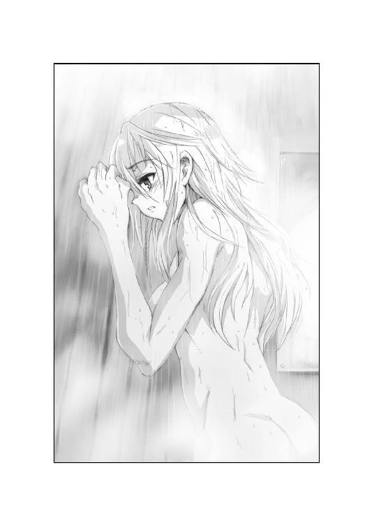
いつも傍にいてくれた匂いだった。自然と安心してしまう。
ロレインは、ほんの一瞬だけためらった。
しかしすぐに左右の手に、大牙のシャンプーを広げていく。
そのまま大牙の香りを自分の髪に塗り込め、ゆっくりと泡立てた。
男の匂いが、自分の金髪から立ち上る。
シャワーで洗うと、泡はロレインの身体に流れ、大牙の匂いも全身からあふれた。
まるで大牙の香りに包まれたように思えた。その時......
「............」
ロレインは、シャワーを止めた。
大牙の泡をまとわせたまま、その場に立ちつくし、風呂場の鏡に自分を映す。
ロレインは不安げな顔で、鏡の中の自分と向き合った。
すると鏡の中のロレインが、妖しげな笑みを漏らしたのだ。
〈自分を、変な女だと思ってる？〉
その問いかけに思わず、ロレインは身を硬くする。
だが鏡の中の自分は、首を横に振った。
〈大丈夫よ。私はあなた。あなたの事はなんでも分かる〉
〈彼の匂いを落としたくない。そう思ったのね〉
気持ちを見透かされたロレインは、鏡を覗き込んだ。
「あなた......誰？」
〈だからあなた自身よ。そしてあなたの気持ちを確かめに来たの〉
鏡の中から、もう一人の自分は問いかけた。
〈彼の匂いに包まれて、どう思った？〉
「ど、どうって？」
〈とぼけないで。まるで彼に抱かれてるような気がしたんでしょ〉
ロレインは、両手を握りしめた。
〈だから匂いを落とすのを止めた〉
〈そのまま彼の匂いに包まれていたかった〉
〈でもあなたは変な女じゃないわ。彼が好きなら当然よ〉
からかうように笑うもう一人の自分に、ロレインは唇を結んだ。
「......好きよ。ずっと昔から」
〈それも知ってるわ。子供の頃からでしょ〉
〈でもね。私が聞きたいのは、大人の女として彼を好きかって事〉
鏡の中の自分は、淫靡な光を瞳に宿した。
〈彼に抱かれたい......そう思った事ある？〉
ロレインの顔に一気に血が昇った。
それどころか、身体の内側から熱い感触があふれ出てくる。
裸身をピンク色に染めて、ロレインはその場で震え始めた。
「そ、そんなの、まだ......」
〈じゃあ彼が求めてきたら、あなたはどうするの？〉
〈拒む？ 嫌いになる？〉
〈それとも......受け入れてあげるの？〉
答えられず、ロレインはただ震えるだけだ。
その様子に、鏡の中の少女はにやりと笑った。
〈まあいいわ。言葉では言いにくいものね〉
〈でも私には確かめる必要があるの。あなたの気持ちをね〉
その時、ロレインの両肩を誰かがつかんだ。
たくましい指。振り返ったロレインは、驚きの声を上げた。
「大ちゃん！」
いつの間にか、そこに大牙がいた。
傷だらけの胸板が目の前にある。彼も裸なのだ。
そう察した瞬間、ロレインの羞恥が目を伏せさせた。
「どうしてここに......」
言いかけた時、大牙の腕が背中に、そして腰に伸びた。
そのまま強引に抱きしめられ、荒々しい口づけを受ける。
大牙の舌が、ロレインの唇に割って入ったのだ。
「んんっ......！」
キスしてる。そう思うと恥ずかしさが一気にこみ上げた。
裸の大牙を全身で感じる。彼の身体はいつの間にか大人になっていた。
大人として愛し合う。それがとてつもなく怖い。
だが錯綜する思いにもかかわらず、ロレインは大牙を受け入れていた。
初めての行為に、我を忘れて没頭する。自分でも信じられない。
しばらく口づけを深めた後、ようやく恥ずかしさが大牙を押し退けた。
「だめよ、ねえ、誰かに見られたら......」
だが大牙は、そのまま裸身を預けてきた。
のしかかる体重に倒され、ロレインは悲鳴を上げようとする。
しかし彼女が倒れたのは風呂場ではなく、柔らかなベッドだったのだ。
「ここ......」
瞬時に、風景が一変している。
見慣れた部屋。勉強机と、脱ぎ散らかした男物のシャツ。
二人が倒れ込んだのは、紛れもなく大牙自身の部屋なのだ。
しかし部屋が変わっても、二人の姿は裸のままであった。
「ロレイン」
大牙が初めて呼びかけた。
「俺、お前の事が好きだ」
文字にすれば、なんの変哲もない告白だった。
しかしその言葉が、ロレインの身体に突き刺さる。
初めて面と向かって言われた。それがこんなにも嬉しいとは。
「大ちゃん、私も」
ロレインは、自然と大牙の背中に腕を回した。
「私も、好きよ......ずっと前から」
気持ちを伝えるように、今度はロレインから口づける。
そしてまだ幼い胸を、大牙の胸にぴたりと押し当てた。
心音が重なる。その胸に、大牙は口づけを移した。
恥ずかしいけれど、大牙をきつく胸に抱きしめる。
「大ちゃん、好き......大好き......」
やがてその時が来ても、ロレインは抗わなかった。
痛みよりも、大牙とひとつになれた嬉しさがこみ上げる。
大牙の腕の中で女になった。その喜びを抱き合う事で確かめる。
だが大牙が動くたび、ロレインの口から思いがけぬ声が漏れた。
自分でも初めて発する、恥ずかしい悲鳴。
誰かに聞こえてしまうかもしれない。そう思ってシーツを握る。
しかしベッドが軋むにつれ、ロレインの意識は真っ白になった。
聞こえてもかまわない。それよりも大牙を離したくない。
ずっとこのままこうしていたかった。
一度離れたら、もう二度とは戻れない気がしたのだ。
「ロレイン......ロレイン......」
耳元で呼ばれる名前に、ロレインは身をよじる。
いつしか大牙の声は、より近くから聞こえ始めていたのだ。
「どこだ、ロレイン！」
大牙は、反応を頼りに通路を進んでいった。
一階中央までたどり着くのに、さして時間はかからない。
しかしそこに広がる光景を見た時、思わず足が止まった。
「これは......！」
追いついたゼットも、ありきたりな絶句しかできない。
黄色い膿にまみれた劇場は、吐き気を催す臭気を放ち、大牙たちを待っていた。
魔群の儀式空間に間違いない。
だが察するよりも早く、大牙の視線は彼女の姿をとらえていたのだ。
「ロレイン！」
少女は、舞台の上に浮かんでいた。黒い泡に包まれ、頼りなげに揺らめいている。
劇場のスポットライトは全て泡を照らし、その光もまた黒かった。
ロレインはその泡の中でしきりに身をよじり、唇を動かしている。
「誰としゃべってるんだ......」
大牙は、ロレインの表情にも驚いた。
見た事もないほど安らぎに満ちた顔。
恍惚とした笑みに、大牙の背筋が一瞬ぞくりとする。
ロレインの寝顔が、やけに大人びて見えたのだ。
「俺だ、ロレイン！」
大牙は舞台上に飛翔し、鳳凰の刃を逆に握った。
切っ先で黒い泡を薙ぎ払うと、それは苦悶するように振動する。
一撃を受けるとスポットライトも消え失せ、泡も弾け飛ぶ。
その中から、少女の身体はふわりと舞台に舞い落ちてきた。
大牙は、抱き起こした少女の頰を叩く。
その表情には、まだ笑みが残っている。
大牙が血魂を送り込むと、ようやくロレインは意識を取り戻した。
「......大ちゃん......」
ロレインは、まぶたをゆっくり開く。
夢を見ていたように呆然とした双眸。
そして今更大牙の存在に気がついた。
「やだ......本当に大ちゃんなの？」
「何言ってんだよ。俺の夢でも見てたのか」
大牙が言うと、ロレインの頰が赤く染まっていく。
少女は、掌をおでこに当てて妙な火照りを鎮めようとした。
「かもしれない......覚えてないの......でも本当に大ちゃんの夢、見てたかも」
「こんな目に遭って、よく夢なんか見てられるな」
少し呆れたが、大牙はようやく安堵の息を吐いた。
「けど間に合って良かった。心配したんだぜ」
「......気絶してたのね、私。確か倒れて......」
ロレインは、記憶をたぐり寄せている。
だがしばらく待っても、視線はぼんやりとしたままだった。
「......何があったか思い出せない。でも......心配かけてごめんなさい」
「いいさ、気にするなよ」
大牙は、ロレインの華奢な身体を強く引き寄せた。
すると少女の身体が、びくんっと震える。
ロレインは怖々と、大牙の顔を見上げた。
「大ちゃん......いつものシャンプーよね」
「はあ？ そりゃそうだけど......こんな時に何言ってんだ」
大牙は、少女の表情に眉をひそめた。
彼女の身に変事があった。勘でしかないがそう思う。
一緒にいたグラント博士なら、何か知っているだろうか。
大牙は視線を変えて、劇場の観覧席を見た。
その中央で、グラント博士も意識を失っている。
ゼットとサイクスに揺り起こされて、ようやく博士も目を覚ました。
「ここは......私とロレインさんはいったい......」
「博士、御無事で何よりです！」
サイクスは手放しで喜んでいるが、博士の記憶も曖昧なようだ。
大牙はロレインを支えると、一同のもとに歩み寄った。
「天界魔群の制圧地域に間違いないぜ。うまい具合にロレインを誘き寄せたな」
大牙は、壁面を埋め尽くす横文字を見た。
「けど不思議と殺気を感じないんだ。天界魔群はどこにいる？」
「外にいるメッサーシュミットが、ここの主かもしれんぞ」
ゼットの言葉に、大牙は思考を巡らせた。
「なるほどな。儀式空間が完成していない可能性もある。メッサーシュミットとバイトゴゴは、その時間稼ぎをしていたのかも」
大牙は言いながらも、疑念を抱き始めた。
いったい天界魔群は、どこで儀式空間の準備をしているのだ。
ロレインを簡単に奪い返される場所に放置したのも不可解だ。
「大ちゃん、本当にごめんなさい」
大牙の思考は、少女の声で途切れた。
「私、どうしてもサイクスさんの怪我が心配で......」
「分かってる。いつものお前らしいよ」
大牙は、うつむくロレインの髪を撫でた。
「だけど彼はそれほど軟弱じゃないぜ。俺が保証してもいいさ」
大牙は、その視線を助手に向ける。
するとサイクスは、恐縮しながら歩み寄った。
「ロレインさん、すみません。僕のために危険な目に遭わせてしまって」
「いいんです。私が自分でした事ですから」
「いや、止めなかった私も悪いんだ。責任は私にもあるよ」
博士も加わり三人が互いに謝ると、大牙の携帯映像通信器が鳴った。
〈......大牙......どうなってるの！ 連絡して......言ったでしょう！〉
「そんな暇、なかったんだよ」
大牙は、途切れがちな立体画面に答えた。
「けどロレインは保護したぜ。博士もサイクスも無事だ。もしＶＴＯＬ機が飛べるようなら、こっちに迎えをよこしてくれ」
〈簡単に言ってくれるわね〉
緊迫した玲子の様子が、画面に映った。
〈砂嵐の勢いは衰えてる......ＶＴＯＬ機は飛行可能よ。でも......には例のメッサーシュミットがまだ飛んでるの。かわせるとは思えない......〉
「俺たちも襲われたが......やはり並のプロペラ機じゃないか」
大牙はしばし思案し、玲子に告げた。
「分かった、問題はメッサーシュミットだな。それは俺が何とかする。そっちは頃合を見計らって、救援機を飛ばしてくれ」
〈あなたたちの位置......モニターできてるわ。チーム・アスカ......救援機で待機してる。チャンスができ次第、いつでも行けるわ......〉
よろしく頼むと言って、大牙は通信を切った。
「どういうつもりだ、大牙」
「なにがだよ」
「お前が魔群をどうにかするという話だ」
ゼットは、不満そうに天井を指差した。
「あれを撃墜するなら、俺も参加したいものだ」
「お前はさっき一匹喰っただろう。あれで満足して、いったん船へ帰れ」
「確かにロレイン嬢の護衛は必要だ。だが俺はまだ魔群を喰い足りない」
ゼットは、呼吸を深く整えた。
「メッサーシュミットも俺に喰わせろ」
「かまわないぜ。お前が飛べるならな」
大牙が不敵な笑みで答えると、ゼットは啞然とした。
「なんだと、お前まさか......」
「奴と戦う方法は、他にない」
大牙は、左右の指をばきばきと鳴らす。
「飛べない奴は、お呼びじゃないぜ」
さしものゼットも返す言葉がなかった。
相変わらず、横浜は砂嵐に覆われていた。
幾分勢いは衰えたとは言え、視界も通信も回復してはいない。
むしろ地表に積もった砂塵は、足首まで埋まるほどになった。
「ではロレイン嬢。俺の幸運を祈っててくれ」
「は、はい。がんばってください、ゼットさん！」
声援を受けて、ゼットはプラザ内から飛び出した。
砂礫を蹴って走り、自分のバイクまで疾走する。
その途端、彼の頭上にプロペラ音が急接近した。
「もう見つかったか！ やはり俺の美貌は目立ちすぎだな！」
メッサーシュミットが、ゼットの背後から襲来した。
放たれた機関砲が、行く手を阻むように着弾する。
プラザ内から見守るロレインは、思わず声を上げた。
「ゼットさん、危ないです！」
「それは彼も分かっている！」
叫ぶグラント博士もサイクスも、固く拳を握る。
心配する視線の先で、ゼットは進路をジグザグに取った。
「あんなアナクロ兵器で死ねるか！」
路上にダイビングし、倒立前転を打って、身体をねじる。
大牙には及ばないにしても、ゼットの運動能力も人間離れしたものだ。
俊敏な動きで、ゼットは瞬く間にロード・ロケットＶにたどり着いた。
「問題はここからだ！」
シートにまたがったゼットは、モンスターマシンを起動する。
爆音は頼もしいが、エンジンはすぐに安定しない。無防備な時間が始まった。
「地球に厳しいエンジンは、乗り手にも厳しいな！」
メッサーシュミットはいったん上昇し、あらためて射撃位置に向かった。
ゼットに向かって旋回し、低空飛行でぐんぐん接近する。
「早くしろ、あと十秒ももたん」
誰に言っているのか。声も荒くなる。
「俺はお前のかませ犬じゃない。見殺しにする気か」
メッサーシュミットが、ゼットの真正面に入った。
翼が微妙に揺れる。照準を合わせているのだ。
そして機関砲と機銃が同時に咆哮する、その間際であった。
「いええええいいっっ！」
大牙の裂帛と共に、ランドマークタワーのガラス窓が砕け散った。
ゼットが囮として時間を稼ぐ間に、彼は高層階に駆け登っていた。
そして分厚い窓を鳳凰の刃で斬り裂くや、空中へ飛び出したのだ。
「後は任せろ、ゼット！」
大牙は真紅の刃を握り、十数階から飛び降りる。
その落下点には、ずばりメッサーシュミットがあった。
「こいつは俺が引き受ける！」
気づいた戦闘機も、上昇宙返りで逃れようとする。
しかし蒼竜の翼が大牙の落下に制動をかけ、メッサーシュミットに急迫した。
大牙はコクピットで振り向く操縦士を目視し、戦闘機の風防に鳳凰の刃を突き立てようとした。狙いはガラスの中、操縦士。
だがメッサーシュミットも、上昇反転をかけた。
大牙の肉体に強烈なＧがかかり、思わず切っ先が滑る。
結局鳳凰の刃は、操縦席の後方に突き刺さった。
一刀を支えにした大牙は、メッサーシュミットと繫がったまま海上へ連れ去られた。
「戦闘機にしがみつくとはな。あの芸があれば世界中回れるぞ」
ゼットはようやくロード・ロケットＶを走らせ、プラザ内に向かった。
待っていたロレインが、すぐに携帯映像通信器を差し出す。
「ゼットさん、大ちゃんは？」
「うまくいった、と思うがね」
エンジンをかけたまま、ゼットは立体画像に視線を向けた。
「ミス迫水、救援機をよこしてくれ。俺は三人を乗せて、バイクでここから離れる」
〈分かったわ、もう......発進してるの......〉
相変わらずの通信妨害にも負けず、玲子は力強く答えた。
〈大牙が時間を稼いでる間に合流して......〉
「時間を稼いだのは俺なんだがな、まったく。あいつの前座は二度とやるものか」
ゼットは通話を切って、ロレインを見つめた。
「しかしあなたもよく反対しないものだ。大牙の策は自殺に近いですよ」
「大ちゃん、できない事は言い出しませんから」
ロレインは、タンデムシートに座る。
「だから不思議とあまり心配じゃないんです。必ず帰って来てくれます」
「なるほど。私もそれほどの信頼を得たいものだ。じゃあ、行きますよ」
アクセルを握ると、グラントとサイクスが慌てだした。
「ちょっと待て、ゼット君。僕たちはどうするのだ？」
「どうするもこうするもありません。乗ってください」
「い、一台のバイクに四人も乗るんですか？」
「その通り。ここから逃れるにはそれしかない」
ゼットは、飄々とした顔で言ってのけた。
「一人ずつ左右に乗ってくれ。シートの下をつかんで、片足だけでマフラーに立つんだ。大丈夫。防弾仕様だから、多少の重みを加えても潰れやしない」
「君、それじゃまるで曲芸だよ！」
「そうですな。しかし大牙の曲芸に比べればどうって事はない」
二人の科学者の悲鳴を乗せ、ロード・ロケットＶは発進した。
大牙は、まだその曲芸の最中だった。
メッサーシュミットの上面に這うようにしがみつき、猛烈な重力をこらえる。
「ちょっと無理があったか！」
いざとなれば蒼竜の翼を使って、地上へ舞い降りる事は可能だ。
だが大牙が離れれば、この機は地上のロレインたちを襲うだろう。
しがみついたままで、何とか撃墜しなければならない。
大牙は、左手に白虎の拳をまとわせ、外板の継ぎ目をぶち破った。
力任せにアルミ板を引き剝がすと、無数のリベットと共に外装が空中へ吹き飛んだ。
「服を脱がすようにはいかんな！」
しかしメッサーシュミットも、さらなる重力を与えるため、機体を錐揉み降下に持ち込んだ。
急降下するや、大牙の頭上で海面がぐるぐる回り、一気に血が昇る。
視界も真っ赤に染まる頃、ようやく海面ぎりぎりで機体は反転上昇。
今度は血流が足に向かい、大牙の視界は一気に暗転した。
「こう速いと自分の血もコントロールできん！」
血魂を操る大牙も、さすがにこの急転には追いつけない。
だが彼の視界の片隅を、白い機影が横切った。
主翼の両端に回転式エンジンポッドを備えた垂直離着陸機。
Ｖ二七ワイヴァーンと呼ばれるヘリコプターとプロペラ機の中間機は、ゆっくり本町通りへと降りていく。
その着陸地点では、大型バイクの周囲で誰かが手を振っていた。
回転翼の突風にあおられているのは、確かに金髪。
ロレインが保護されたと知り、大牙の闘志もよみがえった。
「時間稼ぎは成功したようだな！」
しかしメッサーシュミットも、Ｖ二七を発見していた。
機首を巡らせ、着陸地点めがけ一気に降下する。
Ｖ二七が飛び立つ前に、撃破するつもりなのだ。
「そうはさせん！」
大牙は、左手にも鳳凰の刃を生み出し、渾身の力を込めて投げ放つ。
真紅の刃は機首へ飛び込み、そのままプロペラにぶち当たった。
一撃が命中するや、プロペラは火花を散らして弾け飛ぶ。
エンジンからも火を噴いた機は、失速を逃れるように上昇した。
「これでもう自由には飛べまい！」
確かにメッサーシュミットは、ふらつきながらＶ二七から離れた。
ランドマークタワーを過ぎ、みなとみらい大橋に向かう。
いくら広く、無人とは言え、橋の上に着陸するつもりか。
大牙がそう思った時、忽然と機体が消え去った。
「なんだ！」
メッサーシュミットが跡形もなくなり、大牙は空中に投げ出されたのだ。
あわてて蒼竜の翼に念を込め、落下速度にブレーキをかける。
大牙は、砂塵が降り積もる橋の上に、転がりながら着陸した。
「くそっ、いきなり降ろすなんてありかよ！」
だが大牙の五感は、すでに殺気を間近にとらえていた。
視線の先には砂嵐。その砂塵の中に人影が立っている。
古めかしいパイロットスーツに身を包んだ人物。
その顔は、ゴーグルと黄色いマフラーに隠れて見えない。
「ハンス・ヨアヒム・マルセイユ大尉」
大牙は、予測した名前を呼んだ。
「あんたの名前はそのはずだ、北アフリカ戦線の撃墜王。一四番機なんて洒落た真似をするのは、あんた以外にいないだろ」
そして間合いを詰めた。
「だがなぜ魔群の適応体になった。なぜ魔群に力を貸したんだ。あんたもナチズムの信奉者だったのか。アフリカの星とまで呼ばれたあんたが......」
パイロットは、悠然と砂塵を踏み越えた。その姿は自信に満ちている。
そしてふと立ち止まり、思わぬ声を聞かせた。
「ナチズムになんて興味ないわ」
甘美に響く女の声。大牙が驚愕すると、相手は微笑した。
「私にはやり残した仕事があるの。その怨念が、砂漠の墓所に魔群を引き寄せた」
「あんた、まさか......」
言いかけた大牙は、強さを増す砂嵐に顔を伏せた。
パイロットをとりまくように、砂塵が渦を巻いて集まる。
その竜巻の中では、船を襲った砂の魔女が乱舞していた。
「適応体となった今、アフリカの星はよみがえったわ」
パイロットはゴーグルを外し、マフラーを引き剝がした。
腰まで流れ落ちるウェイヴのかかった金髪。
青い瞳が、真っ直ぐ大牙に笑いかけてくる。
「いかにもドイツ空軍大尉......ハンス・ヨアヒム・マルセイユよ」
ゲルマンの美神にも似た、力強い微笑だった。
Ｖ二七は、クリティアス号の甲板にあわただしく帰投した。
船体はまだ強風にあおられているが、ハドレーの巧みな操縦技術で無事着陸する。
ロレインは真っ先に甲板に降り立つと、すぐに遠方を指さした。
「あれ、何ですか！」
北を見れば、みなとみらい地区が一望できる。
そのさらに向こうで、天まで昇る砂の竜巻がぐらぐらと蠢いていた。
ゼットも機内から駆け降りると、その様子に目をやった。
「大牙とメッサーシュミットが向かった方向ですな。恐らく魔群の遺産呪門だ」
Ｖ二七のローター音に負けぬよう、ゼットは言う。
「曲芸を終え、戦いを始めたらしい。しかし派手にやってるな」
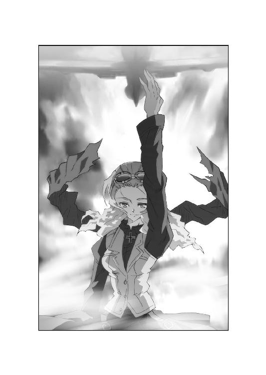
「派手どころではないぞ、見たまえ」
グラント博士も甲板に立ち、空を指差した。
竜巻は徐々にその太さを増し、荒々しい動きも激しくなっていた。
「恐らくメッサーシュミットを駆る魔群が、この砂嵐も操っているのだ」
グラントは、唇を嚙んで言った。
「竜巻によって大牙君を拘束したらしい。あれでは動きがとれまい」
「じゃあ大ちゃんは......」
「苦戦するだろうね。しかしそれが彼の使命だ。大牙君しか魔群を倒せる者はいない。今我々には、ここで見守るしかできないよ」
博士の言葉に、ゼットが眉を動かした。
「納得し難い発言ですな。俺も魔群と戦える」
「なるほどね。しかし現状では無理だろう。今、君はここから離れられない」
グラントは肩をすくめて言った。
「ロレイン嬢を守る人間が必要じゃないか。君はその責務を放棄するのかい？」
ゼットは、何も言わずにＶ二七を振り返った。
機内からは、担架に載せられたサイクスが運び出されている。
彼を運ぶハドレー少佐が、ロレインに声をかけた。
「サイクスは、足を骨折してる。それにだいぶ血を抜かれたらしい。すまんが医療隊員を手伝ってくれないか」
「分かりました。私、行きます」
ロレインは、担架に付き添って船内に入る。
するとゼットは意を決して、上官に駆け寄った。
「ハドレー少佐、自由行動を許可願います」
「大牙を助けに行くつもりか」
顔を上げたハドレーは、遠方の竜巻を見やった。
「お前の任務は、ロレインの護衛だ。魔群は大牙に任せろ」
「その魔群は少なくとも二体いる。敵が戦力を分散すると思いますか」
ゼットは、堅い口調で続けた。
「俺なら孤立した大牙に全戦力をぶつける。その後でロレイン嬢を奪いに行く」
「なるほどな。だが奇襲と攪乱を狙う、同時多発攻撃の可能性はもっと高いぞ」
ハドレーは、次第に肥大する竜巻を見た。
「大牙をあの場所に釘づけにしたまま、もう一体がロレインを襲う。大牙はそう予測したからこそ、お前を船に戻したのではないか。そして俺も大牙と同意見だ」
だがゼットは、その場を動こうとしない。
その瞳は蛇眼ではなかったが、冷たい光を放っていた。
「俺の本当の任務は、彼女の護衛ではない。それはお分かりのはずだ」
「だからと言って、今見捨てる理由もない」
ハドレーは、新しい部下の強情さに呆れていた。
「自由行動は許さん。しかし俺が命令したら、すぐ応援に行けるよう準備しておけ」
「イエス・サー」
「ロード・ロケットＶを機内から下ろしておけ。回転切断環もだいぶ使ったな。予備を補充するのを忘れるなよ」
命じて、ハドレーも船内へ駆け戻る。
ゼットは敬礼を返すと、膨れる竜巻に目を転じた。
「さて......大牙を倒すのに、魔群は何体出てくる？」
ゼットは、サングラスの下で両目を細める。
「そしてロレイン嬢を奪うのはいつなのだ？」
思った時、ゼットの脳裏を疑念がよぎった。
「しばらく安静にしてくださいね」
ロレインは、手当てを終えて微笑んだ。
少女は膿に汚れた服を着替え、医療隊員の白衣に身を包んでいる。
「足はまだ痛むと思いますけど、貧血の症状はすぐに良くなりますから」
「ありがとう。でも僕......やっぱり来る場所を間違えたのかな」
「え？」
医務室のベッドで、サイクスは大きなため息を吐いた。
「グラント博士から極秘任務に就かないかって誘われた時......一度お断りしたんですよ。研究内容は前もって教えてくれなかったし。ただ博士からは僕が必要だと口説かれて」
「優秀なんですね、サイクスさん」
「そんな事ありません。大学には、僕よりできる奴が大勢いましたよ。だから未だに不思議なんです。博士はどうして僕に声をかけたのか......」
ロレインは、優しくベッドを見下ろした。
「でも、大ちゃんに聞きましたよ。サイクスさん、二人が危ないところを助けてあげたんでしょう。私、凄いなあって思って」
「よしてください、あれはまぐれです。とても大牙君のように戦えやしない」
「でも魔群と戦ったのは事実でしょう？」
「あんなの戦ったうちに入りません。せめて大牙君の十分の一でも強ければ、胸を張れるんですけど......」
そこまで言って、サイクスは笑った。
「あー、でも大牙君の十分の一でも強すぎるな。比較する事自体おこがましいですよね」
しかし、ロレインは笑みを返さなかった。
「大ちゃん、昔は泣き虫だったんですよ」
「え？」
「夜、夢にうなされて......決して、最初から強かったわけじゃないんです」
サイクスは、その物語を知るはずもない。
しかし少女は、吶々と言葉を紡いでゆく。
「でも私はもっと泣き虫でした。パパもママもいなくて、寂しくて、泣いてばっかりいました。それを見た大ちゃんは、泣いちゃだめだよって言ってくれたんです」
「............」
「あれから、大ちゃんは強くなったんです。泣きもせずに、ずっとお祖父ちゃんの修行についていきました。私はよく分からないけど、きっと辛かったと思います」
サイクスは、少女の青い瞳を見上げた。
「......あなたのために？」
はい。ロレインは照れもせず、笑って言った。
「人は、誰かのためと思えば強くなれます。サイクスさんも、大ちゃんを助けるために戦ってくれたんでしょう。二人は同じなんですよ」
「僕は、自分の事しか考えなかった」
サイクスは、数時間前のことを思い出した。
「僕は、大牙君やゼット君に信用されていなかった。魔群と疑われて......だからせめて疑いを晴らしたいと思っただけです」
「それもやっぱり......大ちゃんの心をつかむためなんですよ」
金髪の少女は、嬉しげに両手を組んだ。
「私はサイクスさんを強いと思います。だからグラント博士も、あなたをジーゲン機関に誘われた」
「ロレインさん......」
「その誘いを受けた理由ってなんですか？」
「ええとそれは......グラント博士を尊敬しているからですよ。研究内容は明かさなかったけど、僕を説得する時の目は真剣でした。だからお受けしたんです」
「魔群の研究と聞いて、怖くなかったんですか？」
「そりゃあ今でも不気味に思いますよ。でもそのおかげで苦しんでいる人がいると知りました。だから研究を続けられたんです。だけどちょっと自信がなくなったかな」
するとロレインは、にっこりと笑いかけた。
「そういうとこ、博士が気に入られたんだと思います」
「そ、そういうとこって......」
「サイクスさんには、心の強さがあります」
少女は、嬉しそうに続ける。
「大ちゃんも、あなたを軟弱じゃないって言ってました。大ちゃんも気づいたんですよ。魔群と戦えるほどの勇気が、きっとあなたにはあるんです」
その真っ直ぐな視線に、サイクスは顔を赤く染める。
足りないはずの血を頭に昇らせ、彼はタオルケットを引き上げた。
「お、おだてないでください。僕は所詮、研究者ですから」
「でもサイクスさんもきっと......」
ロレインが言いかけた時、不意に医務室のドアが開いた。
「まあ確かに、君のおかげで大変な目に遭ったよ」
「先生......」
入ってきたグラント博士は、疲れたように笑う。
「まさか魔群の巣窟に連れて行かれるとはね。危険すぎる現地研修だったよ」
「す、すみません」
「そう謝らんでもいい。具合はどうだね。まさかロレインさんの看病つきで、気分が悪いとは言わせないよ」
ロレインは微笑して、治療器具を洗浄する。
グラント博士はその姿を見て、顎を撫でた。
「さあて、ロレインさん。サイクス君の手当ては終わったようだから、今度はあなたの番だ。例の刺青を見せてみなさい。検査を始めよう」
「え、今ですか？」
ロレインは小首を傾げた。
「でも大ちゃんもまだ戻ってないし、外では......」
「砂嵐かね。気にしなくてもいいだろう。時間がある時に済ませようじゃないか」
その言葉に、サイクスも身を起こした。
「でも先生、器材の準備がまだですが」
「あれっ、そうだったかね」
「それに魔群の奴らが今襲ってきたら、検査なんてとても......」
グラント博士は、にんまりと笑ってうなずいた。
「そうだったねえ。魔群の奴らがねえ......」
ロレインは、博士の声に違和感を覚えた。
感情を押し隠した、欺瞞に満ちたセリフ。
少女は、身を硬くして振り返った。
「あなたは......！」
だがロレインの視線は、震えるサイクスの顔をとらえていた。
ベッドの上で、サイクスはがくがくとわなないている。
見れば彼の下腹に、深々とナイフが突き刺さっているではないか。
そしてそのナイフを押し込むのは、誰あろうグラント博士であった。
「は、博士......あなたは......！」
「君に、奴ら呼ばわりされる覚えはない」
笑ったまま、グラント博士は言った。
そのまま切っ先を押し込み、ナイフをねじ入れる。
「いや、人類の誰であろうと、我らを愚弄するなど許さない」
そしてロレインに一礼した。
「お初にお目にかかる。天界魔群、オットー・スコルツェニー推参」
少女はその瞬間、黒い泡に包まれた。
夢の続きが始まったのだ。
【第四章】
砂塵が、みなとみらい大橋を包み込む。
大牙は竜巻の中心で、マルセイユ大尉に眼光を突き刺した。
「なぜだ」
問うて、一歩詰め寄る。
「なぜ女であることを隠した。あんたはいったい何者なんだ」
「元々は、冒険好きな女性パイロットに過ぎなかったわ」
過去を思い起こして、マルセイユは続けた。
「腕も確かだったわよ。だけどドイツ空軍は、女性パイロットなんて認めなかった。我が総統は、ゲルマン女性は家庭を守るべきだと言ってね」
「............」
「けれど一九四○年の英国航空決戦が私の運命を変えたわ。無敵を誇るドイツ空軍は、イギリス本土攻略に失敗して大打撃を被った。多くの優秀なパイロットが失われ、補充要員の育成には時間がかかった」
「だから女のあんたにも出番が来たのか」
その通り。マルセイユは好戦的な笑みを見せた。
「けれど女性名を名乗ることは禁じられたわ。もはやドイツ軍は、女の手まで借りて戦争を続けていると罵倒されるのが嫌だったのよ。総統の御意志は絶対だもの」
「じゃあハンス・ヨアヒム・マルセイユってのは偽名か」
「ええ。わざわざ非ゲルマン系の名前まで付けてね。もっとも私は、もう本当の名前なんて忘れてしまったわ」
ごうごうと唸る竜巻は、次第に勢力を増していく。
マルセイユは、長い金髪を指先で弄んだ。
「なぜなら撃墜王としての人生こそ、私の至福の時代だったからよ。戦闘機を駆り、敵機を落とす。撃墜マークが刻まれるたび、故国ドイツは驚喜したわ」
「確かにあんたは英雄だった。だが写真では......」
「ええ、新聞に載った写真はみんな男。替え玉よ。私ではないわ」
それが理由か。大牙はさらに間合いを詰めた。
「自分の真の姿をさらして、新たな栄誉を勝ち取りたいのか」
「あら、惜しいわね。でもそれは魔群となった二番目の理由に過ぎないわ」
マルセイユは、赤い唇をにいっと伸ばした。
「エーリッヒ・ハルトマン大尉をご存知？」
「勿論だ。ドイツ空軍最高の撃墜王だろう」
大牙は、当然の如く答えを知っている。
マルセイユは満足げにうなずき、金髪を指にからめた。
「さすがね。あなたもやはり半分はドイツ人だわ。確かにハルトマン大尉の撃墜数が第一位よ。最終撃墜数は三五二機。それに比べて私は一五八機」
「まさかそれが気に食わないのか？」
「ええ。はらわたが煮えくり返るほど気に食わないわ」
マルセイユは、初めてぎらついた殺気を見せた。
「私が事故で死んだ時、ハルトマンはまだ一機も撃墜した事のない童貞だったのよ。それがあっという間に私を追い越し、最強の称号を奪い去った」
「くだらねえ意地だな」
「他にも私を追い抜いた奴は大勢いるわ。バルクホルン、ラル、キッテル......私の記録は次々塗り替えられ、マルセイユの名は砂漠に埋もれてしまったのよ」
撃墜王の周囲で、砂塵の女が舞い踊る。
マルセイユは、大牙に眼光を突きつけた。
「もし私が事故死していなければ、ドイツ空軍トップエースの座は私のものだった。それを証明するために、私は砂漠からよみがえったの」
「だったらまた飛行機でも落とすつもりか」
「無名のパイロットなど、いくら落としても価値はない。私が欲しいのは、鳳凰寺大牙、あなたを殺したと言う称号なのよ」
そして魔群は、両手を広げる。
「あなたの首はたったひとつ。他の誰にも渡しはしない」
砂塵の魔女は、いつの間にか大牙を包囲していた。
それが四方から殺到するや、大牙も左右の手に鳳凰の刃を生み出した。
「黙って死んでればいいものを！」
大牙は舞うように回転し、襲い来る魔女を次々に斬り払った。
さながら大牙自身が、刃を持った竜巻と化したかのように。
鳳凰の刃に触れた魔女は、ことごとく爆砕していく。
二○体以上の敵を粉砕して、大牙は地に降り立った。
「こいつらじゃ、俺に指一本触れられないぜ」
「我が遺産呪門の名は、キレーネの砂嵐」
マルセイユも、再び両手を伸ばす。
「私が栄光を刻んだ北アフリカは、無尽蔵の砂で覆われている。お前がいくら斬ったところで、砂の魔女たちも尽きはしない」
言う通り、竜巻の中から新手が続々と湧き出した。
それは空中を駆け抜け、大牙の身体に引き寄せられていく。
「いつまでもつかな、お前の血魂が！」
大牙は前を塞ぐ敵を斬り、後ろに迫る敵を薙ぐ。
確かにいつ果てるともしれない多勢だが、ある意味単調な攻撃だ。
大牙はむしろ、その攻めに不可解さを感じ始めた。
なぜこんな単純な平押しを続けるのだ。
それにマルセイユ自身も、攻撃に加わっていない。
大牙が疲れ果てるのを待つにしても、不自然ではないか。
そこまで思い至った時、大牙は乱戦の中で向きを変えた。
「そうか、やはり！」
大牙は包囲網を蹴散らし、竜巻の外へ飛び出そうとする。
しかし砂嵐は急激に勢いを強め、大牙の肌を切り裂いた。
「やっと気づいたようね。釘づけにされていると」
マルセイユは、高らかに笑った。
「船には行かせないわ。それが私の使命よ」
「なるほど、バイトゴゴとの連携プレイか」
振り返って大牙は、撃墜王をにらんだ。
「あいつにクリティアス号を襲わせて、ロレインを奪う手はずだな」
「ビンゴ。そのためにはあなたが邪魔なのよ」
「俺を罠にはめたつもりらしいが、お前らの手は読めてるよ」
大牙は、腕から流れる血を舐めた。
「こっちだって切り札を船に残してるんだ。ゼットならバイトゴゴを倒してくれるさ」
「あら、どうかしらね。我らは三位一隊よ」
マルセイユは、艶やかな金髪を揺らす。
「私たちがお仕えする、天界魔群様も一緒だとしたらどうかしらね」
大牙の呼吸が、激しく乱れた。
ゼットは、クリティアス号のデッキを駆け降りる。
その激しい足音を、ふとハドレーが聞きつけた。
「何かあったのか、ゼット......」
「ロレイン嬢はどこです！」
ゼットは、上官を通路で引き寄せた。その表情に常の冷静さはない。
「いや、彼女だけじゃない！ グラント博士はどこに！」
「何を慌てている。二人とも医務室だ。この先の......」
少佐が通路を指さすと、ゼットは角を曲がりかけ......そして硬直する。
ゼットの態度に何かを感じ、ハドレーも通路の先を見た。
「おいまさか......！」
言いかけて、少佐も言葉を詰まらせた。
医務室の前では、警護に就いた海兵隊員が二人、重なるように倒れている。
彼らは自動小銃を持ちながら、発砲もできずに死んでいた。
無残にも兵士たちの眼球は、鋭利な刃物でえぐり取られている。
そして医務室の中から血に染まった手が這い出てきた。
瀕死の身体が、数センチずつ通路に姿を見せると......
「サイクスっ！」
ハドレー少佐は、助けを求めるサイクスを抱き起こした。
しかし腹部を刺された助手は鮮血にまみれ、絶え絶えの息しか出せない。
「......少佐......ロレインさんが......」
そこまで言って、サイクスはどす黒い血を吐く。
だがハドレーは彼を壁際に退けると、胸元から拳銃を引き抜いた。
ゼットも回転切断環に手をやると、室内からグラント博士の声が聞こえてきた。
「少々遅いな、ハドレー少佐。ジーゲン機関の質も落ちたものだ」
古生物学者の声には、奇妙な歪みが生じている。
たっぷりと冷笑を響かせ、声の主は姿を見せた。
「だがこうなる危険性を、予見していたのではないかね？」
グラント博士の白衣は、たっぷりとサイクスの血にまみれている。
血に濡れた我が身を、嬉しげに見下ろす顔は人間のものではない。
しかしゼットとハドレーがまず驚いたのは、その男が立つ場所だった。
扉の向こうは小さな医務室のはず。だがその原形は皆無だ。
一歩踏み出せば、そこは観客席の中央を貫く通路になっていた。
左右には数百もの座席が並び、半円形の舞台を取り巻いている。
それはゼットがランドマークタワーで見た、異質な劇場だった。
黄色い膿に覆われた舞台には、さながら主演俳優の如くグラント博士が立っている。
そしてその頭上では、再び黒い泡が浮かんでいたのだ。
「ロレイン......」
黒い泡の中で、医療班の白衣を着た少女は意識を失っていた。
その表情は妙に安らかで、時折微笑みさえ見せていた。
ゼットが、ランドマークで見た光景とまるで同じである。
「......確かに予測はしていた」
ゼットは、悔しげにつぶやいた。
「バイトゴゴ、そしてメッサーシュミット......常に三位一隊で行動する魔群ならば、敵は必ずもう一体いると。しかしまさかグラント博士に化けていたとは......」
「君の想定を上回ったかね。だとすれば作戦は及第点だ」
グラント博士は、すうっと目を細めた。
「ゼット・ハンニバル......南米では、我が武装不死親衛隊の諸君を手酷く痛めつけてくれたそうだな。礼はここで返すぞ」
呼ばれて、ゼットは顔を歪めた。
「そう言うお前は誰なのだ」
「いささか詐欺まがいの策も含めて、人を騙すのが天分の男だよ。リチャード・ハドレー英国陸軍少佐、君の先輩ともずいぶん騙し合ったものだ」
するとグラントの声が、野太い男声に変わった。
それが正体の声なのか。と思った時、グラントの顔が急激に歪み始めた。
ぐにゃりと顔面が変形し、一瞬にして中年の日本人となる。
だが次の瞬間には、今度は若い女子高生の顔に変わった。
続けて年配の婦人、小学生、外国人女性......際限無く、変貌は続く。
何百何千という顔を見せる相手に、ゼットは眉をひそめた。
「何でも自由に化けられても自慢にはならないぜ」
「自由自在ではない。化けられるのは、食った人間だけだ」
「なんだと、ではグラント博士も......！」
変形し続ける顔は、残虐な声を響かせた。
「ランドマークタワーでロレインが意識を失っている間にね。あのビルの周囲に誰もいなかったのも私のせいだよ。儀式空間を構築するのに、十分な生命は喰わせてもらった」
「貴様っ！」
「私の遺産呪門の名は、オペラ座の怪人」
万の顔を見せつけ、魔群は言う。
「もっとも、有名なミュージカルとは違ってウィーンのオペラ座だがね。しかし歴史ある舞台にふさわしい名演ぶりだったろう？」
そしてついに、変貌が止まった。
最後に現れた顔は、二○代の金髪男性。傲岸不遜、と言った言葉が良く似合う。
何よりその印象を強めているのは、左の頰に走る長い傷跡。
しかしそれだけで、ハドレーは相手の正体に気づいていた。
「まさか、貴様......！」
「天界魔群、オットー・スコルツェニー。元ナチス武装親衛隊少将」
男が自信たっぷりに言うと、服装まで黒い武装親衛隊のものに変わる。
儀礼用のマントをなびかせ、魔群は軍帽を目深にかぶった。
「ドイツ第四帝国マルティン・ボルマン総統の命により、ロレイン嬢をいただきに来た。邪魔する者は斬り捨てる」
言った途端、魔群の手に細身のレイピアが現れた。
それを顔の前にかざす仕草は、決闘を好む伊達者のそれだった。
「オットー・スコルツェニー少将ですって！」
すでに医務室の異変を察知していた玲子は、監視モニターに叫んだ。
操作殻と繫がったまま、ラムゼイ船長も顔をこわばらせる。
「聞いた名前ね。元ドイツ軍人？」
「有名どころじゃありませんよ、伝説の男です」
船長はすぐさま周囲のモニターに情報を呼び出した。
立体ディスプレイに表示されたのは無数の白黒写真。
「一九○八年、ウィーン出身。武装親衛隊や降下猟兵師団の選抜兵で構成された特殊部隊......武装親衛隊駆逐戦隊の指揮官か」
船長は膨大な資料を、瞬時に把握していく。
「イタリアのムッソリーニ首相が失脚した際、彼が幽閉されていたグラン・サッソ山荘を少人数で奇襲し、見事救出に成功しているわね。その後も、ユーゴ・パルチザンのチトー指導者やアイゼンハワー連合軍総司令官の暗殺を計画......ヨーロッパで最も危険な男と呼ばれた......」
「でも最も有名なのは、ラインの守り作戦での活躍です」
玲子は、自分の記憶を頼りにつぶやいた。
「彼の部下はアメリカ兵に化け、捕獲したアメリカ軍の車輌に乗り、後方攪乱を行いました。偽アメリカ軍として敵軍の中に紛れ込み、仲間と勘違いした者を次々と殺す」
「それはジュネーブ条約違反だわ」
ラムゼイは、言下に告げた。
「敵兵に化けて、敵兵を殺すだなんて......お互いの軍服を着て、正々堂々と身分を示した上で戦うのが、当時のヨーロッパの戦争よ」
「だからこそスコルツェニーの攪乱は、功を奏したんですよ。ルール違反だろうが、勝つためには手段を選ばない男です。しかし彼も魔群になったとは......」
玲子は、もう一度監視モニターに視線を戻した。
画面ではゼットとハドレーが、伝説の男と対峙している。
「スコルツェニーは過酷な戦争を生き延び、ニュルンベルク軍事裁判からも逃亡したほどの男です。一九七五年に死亡した後、適応体になったのでしょうか」
「いずれにしろ、あの男は手強いわよ」
ラムゼイ船長は、魔群の映像を解析し始めた。
「貴族的な風貌に魔群が結びつけば、力を誇示したくもなる」
「スコルツェニーの顔の傷は、戦傷じゃないんです。学生時代に決闘を一三回行い、その時につけたものなんです」
「だとすると剣技も......」
「ゼットたちで勝てるかどうか」
うめいて、玲子は天を仰いだ。
「そして大牙が帰船できるかどうか、勝負はそこにかかってます」
「船内の全海兵隊員を投入する。時間稼ぎに過ぎなくても、できる事は全部やるわ」
だがその時、モニターのひとつが赤く点灯した。
「無数の飛行物体、ランドマークタワーから飛来。船内へ突入する模様」
ラムゼイは冷静に告げて、船外の映像をメインモニターに映し出す。
そこには雲霞の如く押し寄せる、数万の何かが映っている。
黒雲に見えるそれは、牙を剝く蝙蝠の群れだった。
「迎撃用マイクロマシン弾、発射」
ラムゼイ船長の意志が、たて続けにミサイルを放った。
垂直上昇した弾頭は、すぐに破裂し、煙幕のような物を撒き散らす。
しかし黒煙に見えるそれは、無数の超微細ロボットの群れだったのだ。
迎撃用マイクロマシンは空中に飛び出すや、押し寄せる蝙蝠に立ちはだかる。
黒い津波同士が、空中でぶつかり合った。
「交戦を開始したわ」
船長の冷静な声を、玲子は黙って聞く。
マイクロマシンは蝙蝠の肉体に突入し、弾丸のように爆発していく。
数億にも及ぶ最先端の弾幕は、見る間に蝙蝠を撃墜していった。
だが魔群の手先も、苛烈な迎撃を圧倒してクリティアス号に近づく。
ラムゼイ船長も、次々に通達を発した。
「海兵隊、各個に自由射撃。第二デッキより上層では重火器使用を許可する」
舷側通路に出た海兵隊員は、五・五六ミリＭ一八自動小銃を乱射した。
マイクロマシンを突破した蝙蝠めがけ、一○○名以上の隊員が弾幕を張る。
だが怒濤の大群は、射撃で阻止できるものではない。
あっという間に、兵士たちは蝙蝠の群れに吞み込まれた。
「退避！ 船内に退避！」
防弾ジャケットすら食い破る獰猛さに、海兵隊は後退する。
すると通路が、次々と隔壁で遮断されていった。
ラムゼイ船長の意志が、通路を瞬く間に密閉された立方体に変えていく。
閉じこめられた蝙蝠たちは、隔壁を破ろうと暴れ始めた。
だが隔離空間の中へ、ラムゼイ船長は多種多様な攻撃を繰り出したのだ。
「キューブ七Ａ、窒息ガス使用、適用レベルＣ」
「キューブ八Ｄ、肉食バクテリア溶液噴霧」
「キューブ三Ｎ、隔壁内温度マイナス八○まで低下」
ジーゲン機関が用意した対魔群技術が、無数の隔壁内に放たれる。
それは蝙蝠を悶絶させ、食らい、一瞬にして凍死させていった。
さらに船長は膨大な戦闘データを解析し、同時に世界中へ発信する。
世界各地のジーゲン機関員へ、戦いの推移を中継しているのだ。
「大牙と違って、我々凡人は科学に頼るしかない」
ラムゼイは、操作殻の中で戦っていた。
「この船が沈んでも、魔群のデータだけはいただくわ」
だがついに、魔群バイトゴゴも甲板に降り立った。
翼を生やしたネイティヴ・アメリカンは、犬歯を剝いた。
「沈めてやる、こんな船」
バイトゴゴは、船内へ堂々と踏み込んできた。
右手にはトマホーク、左手には槍を携えた原始的な武装だ。
通路を遮る海兵隊は、距離を取って自動小銃を並べた。
「凍結弾、使用！ 発砲しろ！」
指揮官の声と共に、無数の銃火がバイトゴゴを貫く。
凍結弾が着弾するたび、魔群の身体から白い蒸気が湧き出した。
だが虹色の体液は一滴も漏れず、傷口は見る間に再生していく。
「所詮、その程度だ」
バイトゴゴは吼えた。トマホークを振り下ろし、海兵隊員の首を斬り飛ばす。
突いた穂先は防弾ジャケットを貫通し、人間をバターのように引き裂いた。
「キューブ二Ｊ、封鎖。魔群を隔離する」
船長は、バイトゴゴの進路を遮断しようとする。
しかし魔群の速度は、隔壁の動きを凌駕していた。
トマホークが分厚い壁を斬り裂き、立方体の構成を許さない。
バイトゴゴはさらに奥へ踏み込み、逃げ惑う乗員を惨殺した。
通路はさながら、屍山血河と化した。
「バイトゴゴも来たようだ」
スコルツェニーは、レイピアを構えて言う。
「奴の蝙蝠たちが、この船を微塵に嚙み砕いてくれるだろう」
「それは丁度いい。魔群を二体まとめて倒せるなら好都合だ」
ゼットも、指先に回転切断環を引っかけた。
その顔には、獲物を前にした喜びすらある。
「まして天界魔群なら尚更だな。これで俺の経歴にも箔が付く。魔群退治の第一人者の座を、鳳凰寺大牙から奪ってみせよう」
ゼットは、ちらりと背後に視線を送った。
「そう言う事です、ハドレー少佐。俺の戦いに手は出さないでいただきたい。もっともあなたに、天界魔群が倒せるとも思わないが」
「自分の力を過信するな、ゼット」
サイクスを背にかばって、少佐も短機関銃を構えた。
「真人間でもどこまでやれるか見せてやろう。援護する」
「ぼ、僕も......」
不意に、サイクスが声を発した。
「僕も......戦います......武器を貸してください......」
「サイクス、無理はするな！」
しかし瀕死の彼も、儀式空間に這い進んだ。
「だって......僕が一緒にいたのに......ロレインさんを守れなかった......だから僕も......」
少女は、なおも黒い泡の中で漂っている。
それをちらりと見上げ、ゼットは首を横に振った。
「いいからここは俺に任せておけ。所詮、お前はただの科学者に過ぎない」
そしてスコルツェニーに、一歩詰め寄った。
「俺の晴れ舞台を邪魔しないでもらいたいな」
「最後の舞台の間違いではないかね？」
魔群の言葉に、ゼットが反応する。
指先から放った回転切断環を、正面から魔群に叩き込む。
しかしスコルツェニーは、縦横無尽にレイピアを振り回した。
回転切断環は難なく弾き返され、壁面に突き刺さる。
すると環形の金属は、正確に四つの欠片に砕け散った。
魔群の切っ先は瞬時に、回転切断環を十字に斬り裂いたのだ。
「面白いおもちゃだな」
笑うスコルツェニーめがけて、ゼットは跳躍した。
サングラスを外すと同時に蛇眼が開く。石化光線が魔群の足元に放たれた。
まず動きを止める。そのはずだったが......
「避けろ、ゼット！」
ハドレーの声に、蛇眼の男は身をねじった。
スコルツェニーはレイピアを回し、刃で石化光線を受け止めたのだ。
それだけではない。輝く刃先は光線を反射し、ゼットめがけて撃ち返した。
着地したゼットは、身体を低める。その頭上を、石化光線がかすめた。
閃光が膿だらけの壁に命中すると、天界魔群は人差し指を横に振った。
「自分の特技だろう。避けてはいかんな」
「くっ......！」
「それで終わりかね。では私の手番だな」
スコルツェニーは、レイピアを構えた。
「古き良き、ウィーン式決闘を御教授いたそうか」
魔群の動きは、バレエダンサーを思わせるものだった。
ゼットに詰め寄り、レイピアの切っ先を突き入れる。
それも嵐のように。首を、胸を、脇腹を的確に裂く。
身をひるがえすゼットだが、動きは見抜かれている。
瞬く間に、ゼットの身体から血しぶきが上がった。
両者が接近しすぎたため、背後のハドレーは援護射撃もできずにいる。
「音楽が無いのが残念だな」
スコルツェニーはいったん退き、微笑を投げかけた。
「ウィンナ・ワルツでも聞こえれば良いのだが」
着地する身のこなしも、ヨーロッパの紳士然としている。
呼吸を荒らげるゼットは、自分が弄ばれているのを悟った。
だがなぜ退いたのだ。あと数秒攻めれば、自分を殺せたはずなのに。
その答えは、床に這うサイクスが気づいていた。
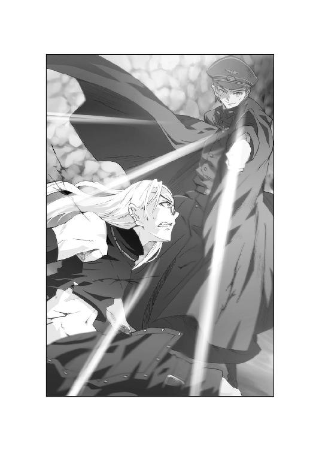
「魔群は時間を稼いでます、ゼットさん......」
ゼットとハドレーは、頭上のロレインをとらえた。
少女の周囲に、黒い霧のようなものが蠢き始めたではないか。
それは意志を持つかのように躍り、黒い泡の中に満ちていく。
察したゼットも、天界魔群に声を放った。
「これが貴様の儀式か。ロレイン嬢に何をするつもりだ」
「まだ何もしていない。ただ......夢を見てもらっている」
「夢だと？」
「そう、夢だよ。楽しい夢だ」
スコルツェニーの視線も、黒い泡に注がれた。
「蕾が花となる夢だ。そして花が咲いた時、門も開く」
ゼットとハドレーは戦慄を覚え、少女を凝視した。
そしてサイクスも、新たな変化に気がついたのだ。
「そんな......そんなっ......！」
黒い泡の、黒い霧の中に、一瞬ロレインの白い肌が見える。
か細い腕で、あの刺青が身をくねらせていた。
しかしこれほど距離が離れていても、刺青ははっきりと目に映った。
妖艶な女の姿絵は、黒い霧を吸収して次第に大きくなっていたのだ。
「刺青が少女を乗っ取った時、門は開かれる」
スコルツェニーは、レイピアの血を拭った。
「それまでもう少し踊ろうか。私のオペラ座で」
ロレインが笑った。幸せそうに。
その唇が小さく、誰かの名を呼んでいた。
「大ちゃん......」
ロレインは、ベッドの中でぬくもりにしがみついた。
眠る大牙の裸身は、二人の汗に濡れている。
たくましい腕を枕に、ロレインもまどろみ続けていた。
辺りはほの暗い。今が昼か夜かも分からない。
どれほどの時間、愛し合っていたかも定かではない。
しかし今は、そんな事などどうでもよかった。
ただ大牙と肌を合わせ、呼吸を感じる。それだけで幸せだった。
だが不意に、自分の声がどこからか聞こえた。
〈......あなたみたいな愛し方、初めてみたわ〉
ロレインは、自らの左腕に視線を向ける。
その肌には、あの刺青が淫靡な笑みを浮かべてたたずんでいた。
〈幼い頃からの思いは深く、結ばれた絆は永遠に離れない〉
〈でもね、あなたの思いは強すぎる〉
〈あなたは彼を受け入れた。だけどもし彼があなたを拒否したら？〉
〈彼が別の女を愛したら、その時あなたはどうするの？〉
ロレインは、わずかに躊躇した。
「大ちゃんはきっと......違うわ、そうなったら私は......」
〈あら、自分から身を引くですって？〉
〈ずいぶん、型どおりのきれいごとを考えるのね〉
〈それがあなたにできるかしら。こんなに愛しているのに〉
嘲笑う刺青に、ロレインは唇を嚙んだ。
「私は......大ちゃんが幸せになってくれればそれで......」
〈じゃあ見せてあげるわ〉
〈大牙が別の女と幸せになった姿を〉
〈それを見てあなたがどう感じるか......見物ね〉
ロレインは、刺青の笑みに怖気を感じた。
すると次の瞬間、また誰かの呼ぶ声が聞こえた。
「大牙あ！」
甘えるような少女の声。聞き覚えがある。
ロレインはベッドからはね起き、そして驚愕した。
大牙の部屋と思っていた場所が、いつの間にか海岸べりの公園に変わっていたのだ。
芝生に置かれたベッドの上で、ロレインは呆然と周囲を眺めた。
青空の下、群れ集うカモメが頭上を行き過ぎ、すぐ側には氷川丸も見える。
「ここ......山下公園......」
行き交う人々は、ロレインの存在など気づかぬように休日を楽しんでいた。
そのにぎわいの中から、もう一度彼女の声が聞こえた。
「大牙、こっちだってば！」
ロレインも、ようやくその声の主を見つける。
こちらに向かって手を振るのは、ショートカットの少女だった。
「美樹ちゃん......！」
小川美樹は、とびきりの笑顔で大牙を呼んでいた。
そのはしゃぎ方は、親友のロレインですら見た事がない。
すると、ロレインの傍で眠っていた男が身を起こした。
「おう......今、行く」
大牙は、ベッドから抜け出すと美樹に駆け寄った。
裸体に衣服が巻き付き、みるみる平素の格好に戻っていく。
美樹は、さっきまでロレインの枕だった腕に飛びついた。
「遅いってばあ！ 今日がなんの日だか忘れたの？」
「お前の誕生日だろ。ちゃんと分かってるよ」
「だったらさ、今日はあたしのわがまま全部きいてよねー」
二人は、ぴたりと寄り添って笑いあう。
ロレインはそれを、呆然と見つめていた。
「じゃあまずお昼はカレーミュージアムね。今、夏休み限定メニューがあんのよ。スイカカレーとか、氷あずきカレーとかさ」
「ああ。お前が食べたいならそこでいいぜ」
大牙が素直にうなずくと、美樹は彼の腕に抱きついた。
「食事したら、関内のショップで誕生日プレゼント選ばせてね。あたし、ずっと前から欲しかったリングあるんだ」
「おい、俺の小遣いで買えるんだろうな」
「それからコスモワールド行くでしょ。コースターも三つぐらい乗りたいな。あとクレーンゲームでヌイグルミいっぱい取ってね。それで夜になったら観覧車乗るの。いいでしょ、大牙？」
それはロレインが夢想したデート。
だが大牙は、美樹の言葉に笑って答えた。
「分かったよ。彼氏ってのも大変だぜ」
ロレインの心に、亀裂が入った。
乱れる感情そのままに、周囲の風景もめまぐるしく変わっていく。
美樹が自分のカレーをスプーンですくい、大牙の口に運ぶ様子が見えた。
元町では、大牙の腕を強引に引っ張ってアクセサリ店に入っていく。
遊園地で遊ぶ姿まで、ロレインはベッドの上で一人見続けた。
「......大ちゃん......」
勇気を振り絞って呼んでも、大牙は応じなかった。
大牙は、夕暮れの桟橋で美樹の身体を後ろから抱き、いつまでも離さない。
やがて美樹が向きを変えると、二人は自然に唇を重ねた。
彼女の指には、十六歳の誕生日プレゼントが光っている。
「......こんなの......こんなの噓よ......」
ロレインは、目を閉じようとする。
だが身体はびくとも動かず、ベッドから逃れる事もできなかった。
「これはあなたの作った......幻......もうやめて......！」
するとまたあの声が、自分の左腕から聞こえてきた。
〈だめ。まだだめよ〉
〈彼を見て......彼女を見て〉
〈そして本当の気持ちを、私に教えてほしいの〉
その言葉に、ロレインは必死に抗った。
「私は騙されない......私はこんなの信じないわ！」
次の刹那、刺青は哄笑を響かせた。
同時にその姿が、ロレインの左腕いっぱいに広がる。
少女の肩から手首までを占めると、刺青の思念も強さを増した。
〈あなたが選ばれた理由を教えてあげる〉
〈それはあなたが持つ、深く強い愛情よ〉
〈彼を愛する強い気持ち。それが私には必要だった〉
〈なぜなら強すぎる愛こそ、失われた時には大きな決壊を呼ぶわ〉
〈もうすぐあなたに嫉妬や独占欲が生まれるはず......ほんのちょっとでいいのよ。たとえ少しでも、それがこの私に力を与えるわ〉
〈そして私に浸食されればされるほど、信じる力は失われ、疑念は強まる〉
刺青は、次第にロレインの胸や首にまで広がった。
だが少女自身は、ただベッドの上でもがき苦しむだけだ。
しかも半身を刺青に奪われ、白い肌を醜く染められて。
〈彼を恨みなさい。そして親友を憎むのよ〉
〈その力をもって、この私を目覚めさせて〉
〈我が刺青を受容するのよ、適応体ロレイン・ローゼンブルグ〉
〈さすれば女王魔群は、彼方への門を開くわ〉
少女の肌の上で、刺青が高らかに笑う。
ロレインはもう、悲鳴をあげる事すらできなかった。
「ロレイン、あなたは......」
玲子は、メインスクリーンに映る光景に絶句した。
儀式空間と化した医務室からは、まだ監視モニターの映像が届いている。
黒い泡の中で、ロレインが苦悶し始めたのだ。
しかも少女を包む黒い気体は、見る間に刺青に吸い込まれていく。
と同時に、刺青の女が急激に大きさを増し、ロレインの肌の上に広がり始めた。
玲子はマイクを通して、その場にいるはずの男たちに叫んだ。
「リチャード！ ゼット！ あの子を助けて、お願い！」
だが画像は急激にかき乱れる。
操作殻のラムゼイ船長は、眉をくもらせた。
「医務室の監視モニター応答なし。儀式空間は徐々に船体を浸食しているわ」
それだけではない。魔群バイトゴゴも船内に突入している。
二体の魔群を倒し、ロレインを救うには彼を呼ぶしかない。
「大牙、船に戻って！ 今すぐ！」
玲子は、携帯映像通信器に懇願した。
しかし雑音が通話を塞ぐ。玲子の声が苛立った。
「聞こえないの、大牙！ ロレインはもう......！」
〈......船に戻って......今すぐ......〉
腰に付けた通信器から、玲子の声がぶつ切りに聞こえる。
〈......聞こえないの......ロレインは......もう......〉
竜巻に遮られながらも、通信は悲痛を伝えている。
その声を聞き、マルセイユ大尉は静かに微笑んだ。
「始まったようね、あの船で」
魔群は、周囲に砂塵の魔女たちを集めた。
「我が天界魔群の名はオットー・スコルツェニー様。あの科学者に化けて、お前たちの船に乗り込み、今頃は儀式を始めている頃よ」
陰謀を聞かされ、大牙の呼吸はさらに乱れている。
オットー・スコルツェニー。当然その名前も知っている。
遥か昔、幼い頃に聞かされた名前だ。
その男が、まさかグラント博士を生贄にしていたとは。
大牙の驚愕を嘲笑い、マルセイユは間合いを詰めた。
「我らの目的は、ロレイン・ローゼンブルグの刺青を育てる事。力ずくで奪わずとも、刺青がロレインを乗っ取れば、門は自ずと開くのよ」
大牙は、静かに呼吸を整える。
今どうすればいいか、それだけを考えた。
「あんたを斬る。時間はかけない」
大牙は、決断を口にした。
「その後で船に戻る。それだけだ」
「単純明快ね。だけど小細工を弄さないだけに、ベストな選択だわ」
感心して、マルセイユは腕組みする。
「でも、あなたにできるかしら？」
「......やってみせる」
大牙は、左右の手に握った鳳凰の刃を十字に構える。
応じて砂塵の魔女たちも、突入の機会をうかがった。
しかし大牙は、魔群たちの予測を裏切る行動に出た。
「............っっ！」
大牙は短く呼吸を吐き、練った血魂を背中から放出する。
それは瞬時に蒼竜の翼となり、大牙の身体を浮揚させた。
だが青い閃光はいつもよりずっと強く、大牙の背中から飛び出した。
しかも蒼竜の翼の名前通り、強靭な翼を形作っているではないか。
その翼をもって、大牙はまさに空中に飛翔したのだ。
竜巻の渦に飛び込み、吹き付ける砂礫は血魂で撥ね除ける。
上昇する砂嵐に乗り、大牙は一気に空へ舞い上がった。
「そんな技も使えるとはね」
大牙を見上げると、マルセイユは口元を緩めた。
「やはりロレインを救うのが先と決めたか」
そう言った撃墜王の頭上に、ゆらりと蜃気楼が浮かび上がる。
現れたのはエンジンを回すメッサーシュミットＭｅ一○九Ｅ。
大牙に付けられた傷はなくなり、新品同様になっている。
そしてマルセイユ大尉の姿も、いつの間にか操縦席にあった。
「我に続け、キレーネの砂の魔女よ！」
メッサーシュミットは急上昇し、全速力で竜巻を突き抜けた。
その周囲には、無数の魔女たちも追いすがる。
横浜上空を飛ぶ大牙は、背後に迫る機影を振り返った。
「さすがに速いな！」
大牙は、ランドマークタワーを行き過ぎ、高度を低める。
砂塵の魔女を振り切ろうと、必死の機動を試みた。
だがクリティアス号が視界に入る頃には、魔女たちも追いついてきたのだ。
「覚えたての技じゃ、こんなものか！」
蒼竜の翼で、自在に空を飛行する。
それは大牙が会得したばかりの、鳳凰流闘武術奥技であった。
しかし未だ熟練したわけではなく、速度も遅く、体力の消耗も激しい。
ついに船影を目前にして、大牙はメッサーシュミットに追い抜かれた。
《空中で勝てると思ったの？》
マルセイユの思念は、大牙の心に直接語りかけた。
《あなたを船には行かせない。全てが終わるまでね》
《それに私を置いて行けばどうなるか、見せてあげるわ》
突然メッサーシュミットが、翼を上下に打ち振った。
それを合図に、砂塵の魔女たちが四方へ飛び去る。
砂礫の尾を引いて、魔群の手先は横浜市街へ急降下した。
そして猛速で地面に激突するや、それは凄まじい爆発を引き起こしたのだ。
「貴様......！」
叫ぶ大牙の目が、衝撃で崩れるビルをとらえた。
その真下には、救援を待つ人々。負傷者を乗せた救急車。
だが倒壊したビルは、一瞬にして彼らを叩き潰していた。
「やめろ！ マルセイユ、やめろ！」
しかしメッサーシュミットは、悠々と横浜港を旋回するだけだ。
《さあ、行きなさい。ロレインの下へ》
《私はあなたを、止めたりしないから》
《たった一人のために、大勢を見捨てればいいのよ》
さらに爆発は続き、ビルの倒壊する音が大牙の鼓膜を震わせる。
大牙は苦渋を嚙んで、空中で静止した。
《あら、どうしたの。彼女の所に行かないの？》
メッサーシュミットは、翻弄するように翼を振った。
《あなたに、ここで足踏みする暇があるかしら》
《早く行かないと、ロレインの身体は刺青に乗っ取られる》
《そして横浜の街も、跡形もなくなるわよ》
プロペラ音に、撃墜王の笑い声が重なる。
鼓膜を貫くような、残虐な声であった。
ロレインはなおも、黒い泡の中で苦悶を漏らしている。
刺青はなおも広がり、少女の肌は黒く染まっていった。
その真下で、ゼットとスコルツェニーの戦いも続いている。
だがロレインを助けようにも、ゼットは閃くレイピアに翻弄されるばかりだった。
「切っ先から逃げるばかりで勝てるのか、ゼット・ハンニバル」
スコルツェニーは、不満そうに告げた。
「それとも彼女を救うのは、もう諦めたかね」
確かに手も足も出ない状況だった。
すでにゼットは全身を刻まれ、夥しい流血に染まっている。
一方のスコルツェニーは無傷である。勝敗は見えていた。
「ゼット、お前は大牙を呼んでこい」
ハドレー少佐は、短機関銃を構えた。
「お前は大事な特殊戦闘員だ。ここで失うわけにはいかん。大牙と合流し、力を合わせてロレインを奪い返すんだ」
しかしゼットは、上官を鼻で笑った。
「御心遣いは有難いが、少佐が勝てる相手ではない」
荒れる呼吸で、回転切断環を構える。
「大牙が来る前に片づけて御覧に入れます。こいつだけは譲れませんな」
ゼットの言葉に、魔群もレイピアを握り直した。
「しかしゼット・ハンニバル、あのおもちゃにはもう飽きたぞ」
「安心しろ。俺の武器は回転切断環だけではない」
ゼットは、しなやかな腕を腰に回した。
取り出したのは、奇妙に湾曲した刃の刀剣。
続けて柄のボタンを押すと、さらに二つの刃が刀身から伸び生える。
風車を思わせるそのフォルムに、スコルツェニーは勿体ぶって笑った。
「見た事があるな。確かアフリカ軍団の兵士がチュニジアから持ち帰った......」
「ウォートラス。ジェリード塩原の少数民族が使う投げナイフだ」
「まさかただの刀剣で魔群が斬れると思っているのか」
答える前に、ゼットは突進した。
右手にウォートラスを構え、魔群の胸元めがけて斬りかかる。
スコルツェニーはわずかに身体を反らし、一撃を回避した。
しかし奇怪な刃は思わぬ軌道を走り、魔群の胸を裂く。
同時にウォートラスの刃から電撃が走り、スコルツェニーを痙攣させる。
「感圧式......その刃は電極か！」
思わず後退する魔群をすり抜け、ゼットは壁面へ跳んだ。
そのつま先が儀式空間の壁に突き刺さる。ブーツに仕込まれたのは回転切断環。
円形の刃を壁に食い込ませ、足場とし、ゼットは瞬く間に天井近くに達する。
彼の目指す先には、ロレインが包まれた黒い泡があった。
「そちらが狙いか」
スコルツェニーも、レイピアを握って空中へ飛んだ。
マントをひるがえしてゼットの進路に立ちはだかり、剣を振るう。
激突するレイピアとウォートラス。再び電光が走る。
だが膂力に優る魔群に押され、ゼットは回転切断環をばらまいた。
爆発でスコルツェニーを遮る間に、床へ着地する。
しかし爆風は黒い泡にも達し、中にいるロレインをも大きく揺らした。
「ゼット、彼女を巻き添えにするな！」
「少佐の御言葉とも思えませんな」
床に舞い降りたゼットは、ウォートラスと回転切断環を構えた。
「我々の任務は魔群の打倒。こうでもしなければ策謀は防げない」
さらに空中のスコルツェニーめがけ、爆発式の回転切断環を投擲した。
たとえロレインに威力が及ぼうと、構わずに至近距離へ投げる。
かわすスコルツェニーは、ゼットの戦いぶりに笑みで応えた。
「鳳凰寺大牙とは異なる気構えだな。奴はこの娘のために戦うが、お前は自分自身のために戦っている」
爆風を飛び越え、魔群も床に舞い戻った。
「だがこの娘を巻き添えにしてまで勝ちたいと願うのは何故だ？」
「ただ、貴様を倒したい。それだけだ」
ゼットは不敵な面構えで、スコルツェニーと向き合った。
「俺はこの蛇眼のおかげで家族からも疎まれた。大事にしてくれたのは、ディートリッヒ大佐だけだ。報いるには、魔群を倒すしかない」
ゼットは眼球を蛇眼に変え、天界魔群の正面に跳んだ。
蛇眼で、真っ直ぐスコルツェニーを捕捉する。
だが天界魔群も大きくマントをひるがえし、自分の姿を覆い隠した。
「貴様の蛇眼は生物のみを石化する。無機物には無効だ」
スコルツェニーは、看破して言った。
「マントで覆えば、私の肉体も直視できまい」
しかしゼットの指は、すでに回転切断環を投げ放っていた。
それは左右から、スコルツェニーの身体を挟撃する。
魔群を覆ったマントが一瞬で切り刻まれ、武装親衛隊の制服も裂かれた。
「そのための回転切断環か！」
スコルツェニーはバランスを失い、舞台の上に転倒する。
ゼットは、その間隙を見逃しはしなかった。
「討ち取ったぞ、オットー・スコルツェニー！」
改めて、石化光線が魔群の顔面に突き刺さる。
そう思った時、ハドレー少佐が叫んだ。
「だめだ、ゼット！」
突然、ゼットと魔群の間に黒い壁が立ち塞がった。
それは横合いから飛び込んだ、蝙蝠の群れである。
無数の飛翔体が、ゼットの顔に張りつき、視界を潰す。
前回の戦い同様、呼吸を塞がれたゼットは甲板に転がった。
「が......ぐっ......！」
「少しは学習した方がいいぞ」
不意に、巨漢の声が呼びかけた。
「同じ手を二度受けるとはな」
舞台には巨漢、冥界魔群バイトゴゴが立っていた。
その全身は、返り血で真っ赤に濡れている。
それが部下たちの血だと悟り、ハドレーは腰から手榴弾を放った。
しかしバイトゴゴは爆発を飛び越え、少佐に迫る。
「お前もここまでだ」
「ぐああああっっ！」
バイトゴゴは、凄まじい膂力で長槍を押し込んだ。
穂先はハドレーの右太ももを貫き、そのまま床に縫い付けてしまう。
絶叫に、伏していたサイクスも身を起こした。
「ハ、ハドレー少佐！」
震える顔を、バイトゴゴがにらむ。
次はお前だ。視線がそう語った時、サイクスは後ろに下がった。
腹部から血を流したまま、ずるずると後退していく。
やがて彼は儀式空間から這い出し、そのまま逃げ去っていった。
「追うな、バイトゴゴ。あれはとどめを刺す価値もない男だ」
「しかし一度、俺の邪魔をした」
バイトゴゴは、ぐるぐると喉を鳴らした。
「まぐれでも許せん。後を追うのをお許しください」
しかし立ち上がったスコルツェニーは、悠然と否を示した。
「いかん。ここで門が開くのを待て。鳳凰寺大牙が来るとは思えぬが、我らはこの儀式空間を守るのだ。科学者ごとき、後でいくらでもなぶれるわ」
スコルツェニーは、おもむろにレイピアを腰へ戻した。
黒い武装親衛隊の制服は斜めに裂かれ、胸元が露になっている。
その肌にも、仮面をつけた派手な吟遊騎士の刺青があった。
刺青の顔もまた、倒れるゼットを見下している。
「もう......勝ったつもりか......」
蝙蝠に張りつかれたまま、ゼットは声音を吐く。
だが頭上では、ロレインの身体が刺青に吞まれようとしていた。
刺青はもはや、少女の肌を半ば乗っ取っていたのだ。
〈感じるわ、あなたの決壊を〉
刺青は、より強い思念でロレインに語りかけた。
〈信じていたものを次第に疑い始める〉
〈彼への気持ちも、親友への信頼も〉
苦痛のあまり、ロレインはシーツを握りしめる。
刺青は、その白い肌を侵しながら笑った。
〈そして気づくのよ。きれいごとが言えると信じていた自分の傲慢さにも〉
〈ふふふっ......嫌悪と憎悪を、もうすぐあなたから引き出せるわ〉
〈しかもあなたの吐き出す感情は、私にとって蜜よりも甘く濃い〉
〈女王にふさわしい決壊を生めるのは、あなただけ〉
〈さあ早く見せて......あなたの汚れた感情を〉
しかしロレインも、必死に首を横に振った。
「......大ちゃん......美樹......！」
ぐぐっと、刺青が肌の上で縮こまった。
侵食がいったん止まり、苦しげに強ばり始める。
〈強がりはだめよ。もっと感情を絞り出して〉
〈私にたっぷりと頂戴。あなたの甘い蜂蜜を〉
〈彼らを信じたくとも、私にこうまで侵食されては抵抗できないはずよ〉
びくんっと、ロレインは激しくのけぞった。
見開かれた目には、暗黒だけが映っている。
だが少女の意識は、まるで違う光景をとらえていた。
「あれはなに......窓......井戸......それとも門......」
刺青はゆっくり、侵食を再開した。
「ああ、門が開いていく......少しずつ......あの向こうになにがあるの......怖い......ずっと遠くに......島が見えるわ......石造りの都......まあるくて......運河に囲まれた......大きな神様の像......王宮......でも怖い......大ちゃん......大ちゃん！」
その名前に、刺青は再び動きを封ぜられた。
〈さすがね。簡単に門を開かせてはくれない〉
〈儀式空間で待つ魔群どもには悪いけど、この娘を乗っ取るのは容易ではない〉
〈だが一○八の眷属は、長きに亘りこの時を待ち焦がれているわ〉
刺青は、ほっそりした腕を交差させ、指先で異様な印を結んだ。
〈決壊せよ、ロレイン・ローゼンブルグ〉
〈受容せよ、ロレイン・ローゼンブルグ〉
〈彼方への門は、あなたの身体に刻まれた〉
〈後はただ、その門を開くのみ〉
ロレインの視界に、再び異界が広がった。
吸い込まれそうなほど広く、深く、暗い。
立ちはだかるそれに、少女は目を閉じた。
「大ちゃん......さよなら......」
少女は、涙滴をこらえる。
「しばらく会えないのね......だって......」
最後にロレインは、強く強く念じた。
大牙の戦う姿を。燃え盛る横浜の街を。
そして祈るように指を組み合わせた。
「だって......だって大ちゃんは......」
〈まだ彼を呼ぶの。いい加減に未練は......〉
「ここには、来ないもの......」
その刹那、刺青が硬直した。
大牙は、クリティアス号に視力をこらした。
甲板上には、蝙蝠の群れが集まっている。僅かに一キロほどの距離だ。
しかし踏み出せば、横浜の街はさらなる攻撃を受ける。
その葛藤を、メッサーシュミットの爆音がかき消した。
《どうするの、鳳凰寺大牙。今から行けばまだ間に合うわ》
《あなたのロレインを、取り戻せるチャンスでしょう》
《このまま私たちの手に渡してしまっていいのかしら》
だが大牙は、空中からじっとクリティアス号を見つめた。
あの船でロレインが苦しんでいる。
しかしその光景を思い描くだけで、大牙は自分がどうすべきか理解した。
「......分かってるぜ、ロレイン」
大牙は船に背を向けると、メッサーシュミットに対峙した。
双眸に輝く闘志は、妙にすがすがしいものだ。
「見損なうなよ。俺は迷ったりしない」
そして右手に鳳凰の刃を現出する。
「しばらく会えないだろうが......許してくれよな」
《そのくだらぬ独白はなに？》
マルセイユは、機体を旋回させて問いかけた。
《愚物なりに結論が出たと言うの？》
だが大牙の瞳には、決意と憤怒が漲っていた。
肉体までもが、一瞬のうちにたくましくなったかに見える。
陽炎のような殺気を放ち、大牙は言った。
「俺はここに残る」
魔女たちがざわめくのを見渡し、大牙は続けた。
「ロレインの所には行けない」
驚愕したのは、魔群の方であった。
「......大ちゃんは、ここには来ないわ」
ベッドの上で、ロレインははっきりと告げた。
「私を乗っ取ればいい......あなたの思うようにすればいいのよ」
毅然とした態度は、寸分の迷いもない。
刺青の女は、意外そうに表情を歪めた。
〈なぜ来ないと分かって、絶望しないの〉
〈それどころか......彼への信頼はよみがえってる〉
〈いいえ、むしろ彼への思いが強くなってる......〉
苦悶を押し隠しながら、刺青は縮こまる。
ロレインは、汚された己の肌を見つめた。
「......どうして大ちゃんが来ないか、考えたの」
ロレインは、凜とした表情を崩さなかった。
「大ちゃんは、今頃必死に戦ってるんだわ。きっと私より、横浜にいる大勢の人たちを大切に思ってる。それが本当の大ちゃんだもの」
ロレインは、まだ残っていた幻を指さす。
寄り添う大牙と美樹の姿は、次第に薄らいでいった。
「今の私は一人。だから私は、あなたに乗っ取られるしかない」
〈ならどうして絶望しないの！〉
「だって、大ちゃんは絶対に諦めないもの」
ロレインは、刺青に微笑んだ。
「私が、あなたの言う門になったとしても、必ず助けに来てくれるわ。絶対に......」
そして少女は目を閉じる。
「だから私は、どうなっても怖くない。だって大ちゃんは、絶対に来てくれるもの。それが分かっているから、私はどこにでも行けるわ」
〈大牙もそう思っているの？〉
初めて、刺青の思念がかすれた。少女の強さにたじろいでいる。
ロレインは刺青を見下ろし、ええと答えた。
「私たちの気持ちは同じよ。今までも、これからも......」
少女の言葉に呼応するように、少年も刃を握った。
「今だけロレインはくれてやる。だがな、彼女は必ず取り返すぞ」
大牙は、冥界魔群マルセイユに言い放った。
「どれだけ時間がかかろうと、どれだけ遠くに離れようと絶対に取り戻す。その代わりお前だけは今、叩き潰してみせるぞ」
《目先の魔群一人のために、彼女を失うの？》
旋回する戦闘機は、思念を送った。
《お前も案外、計算の立たない男ね。どちらが重要か、考えれば分かるでしょう》
砂塵の魔女たちも、一斉に笑い声を上げる。
だが大牙は、頑として考えを変えなかった。
「計算より、大切な事がある」
鳳凰の刃を握り、メッサーシュミットに狙いをつける。
「俺は今まで、ロレインを救おうとばかり考えてきた。どうやったら彼女の身体から刺青を追い出せるのか、それだけを考えてきた」
だけど、それじゃだめなんだ。大牙は自分自身に言い聞かせた。
「たとえロレインから刺青を追い出しても、お前たち魔群がいる限り、平和な世界は訪れない。ロレイン一人が安全になっても、世界は救われねえんだよ」
大牙の視界に、横浜の無残な姿が映った。
上がる黒煙。火災は街区から街区へ燃え広がっていく。
どれほど多くの人が逃げ惑い、助け合い、救助を続けているのか。
「......ロレインも、あの街を救いたいはずだ」
鳳凰の刃を握る手が、ぎりぎりと鳴った。
「そのためなら、自分一人で重荷を背負うだろう。だから俺も彼女の気持ちに応えたい。今はお前を斬る。横浜を救うためにな」
大牙の髪が、砂嵐になびいた。翼を背負って立つ姿は、戦に赴く天使を思わせる。
メッサーシュミットも、大牙に機首を巡らせた。
《なるほど......ゲンツ様たちを斬った力はそれか》
威圧を受けて、マルセイユの声が震えた。
するとメッサーシュミットは、急激にスピードを増した。
一気に大牙の頭上を飛び越える。その行く先は横浜市街。
大牙も応じて、メッサーシュミットを追尾した。
「逃げるつもりか、マルセイユ！」
《そこまでの覚悟を見せられては、私も足止めに徹しよう！》
砂塵の魔女たちを引きつれ、戦闘機は高層ビルをかすめた。
《あくまでお前を引きつけ、その隙にスコルツェニー様の時間を稼ぐ！》
《たとえお前に討たれても、門さえ開けば我々の勝利よ！》
マルセイユの思念にも、大牙に負けぬ覚悟がある。
《ロレインをくれてやるとは笑止だわ》
《お前は分かっていないのよ。彼女がどうなるか》
《一度、儀式を行えば、もう以前の彼女ではない》
《お前にとって全てが終わり、我々にとって全てが始まるのよ！》
低空へ進入したメッサーシュミットは、路面に向けて銃撃を放つ。
そこにはまだ、避難を続ける人々がいたのだ。
「ねえ、あれ......何！」
「どうして、プロペラ機が！」
空を見上げた人々が、機関砲弾に引きちぎられていく。
路上にぶち撒かれた肉片に、大牙の喉から激怒が飛ぶ。
「マルセイユ、貴様ああっっ！」
大牙は満身の力を込め、逆手に握った鳳凰の刃を、槍投げの如く打ち込んだ。
だがマルセイユは機体を急上昇させ、一撃を回避する。
《私を叩き潰すと言ったのは、ただの大口？》
《早く仕留めないと、犠牲者が増えるだけよ》
続けてメッサーシュミットは、中華街めがけて急降下した。
墜落するほどの低空まで迫ると、機首を引き起こし、山下公園へ。
その急激な飛行運動は、地上に凄まじい衝撃波をもたらす。
中華街のシンボルのひとつ、真っ赤な朝陽門が粉々に消し飛んだ。
「退避！ 退避ーっっ！」
救援活動中の自衛隊員の声が、大牙にも聞こえた。
瓦礫の下から、被災者の夥しい鮮血が流れている。
彼らは、プロペラ戦闘機と少年の追跡劇を目の当たりにしてどう思ったのか。
それを考える余裕も、大牙にはなかった。
「てめえ、人の命を！」
《尊いなんて思えないわ。こんな平和に倦んだ奴ら》
再び機関砲。救急車を直撃。横転、炎上する。
《戦時下に生きた私とは違い、平和が当たり前だと思ってる》
《愚にもつかない授業にしがみつく学生ども。はした金に振り回される勤め人》
《酒を飲み、大声で騒ぎ、口先だけの暴力を用い、自分一人では何もできない》
《そんな奴らの命、惜しむほどの価値はない》
さらに砂塵の魔女が次々と着弾。逃げ惑う者を押し潰すように爆砕した。
《これからは魔群の時代よ。人間が、地球に生存する権利は失せる》
《その事実を、私が教育してやるわ》
マルセイユは、歌うように続けた。
《殺戮こそ、新たな時代の幕開け》
《平和など、もう戻ってはこない》
マルセイユは、山下公園の一画に照準を合わせた。
眼下には逃げ惑う人々。だが逃げ場はどこにもない。
メッサーシュミットは、機体をひねって降下した。
大牙は戦闘機に追いつこうとするが、周囲に魔女たちがまとわりついた。
「邪魔するなああっ！」
再び鳳凰の刃。魔女を斬り、戦闘機を追う。
だがメッサーシュミットは、もう大牙が追いつけぬ距離にいた。
大牙はもう、叫ぶしかできない。
「撃つな、マルセイユ！」
人々の悲鳴が、プロペラ音に搔き消される。
大牙も思わず絶望した、その瞬間であった。
メッサーシュミットの爆音とは異なる、もうひとつの音が聞こえた。
それも急速に接近。空中を、まっしぐらに駆けて来る。
咄嗟に大牙は、急迫する音に目を向けた。
「あれは！」
黒いチューブが、飛んでいると思った。
だがそれには、小さな翼が生えている。
尾部から煙の尾を引くそれは、音速の何倍もの速度で飛来した。
狙いはメッサーシュミット。容赦なく、機体の真ん中に突き刺さる。
盛大な爆発と共に、ナチスの戦闘機は粉々に砕け散った。
そして初めて、大牙は物体の正体を悟った。
「対空ミサイル！」
いったい誰が。どこから。
魔群を撃墜する威力は、通常の兵器ではない。
しかしそれを確かめもせず、大牙は一直線に船を目指した。
ミサイルは確かに、クリティアス号から放たれたのだ。
船上からも、マルセイユの爆発は間近に見えた。
火の玉と化した戦闘機に、飛び交う蝙蝠たちも鳴き喚く。
玲子は、モニターに映る魔群の最期に声を漏らした。
「いったい誰が......」
続けて、天空から陽の光が射し込んだ。
マルセイユが操っていた砂嵐が、ようやく消え去ったのだ。
横浜に、八月の太陽が顔を見せる。
その強い日差しが、蝙蝠の群れに突き刺さった。
「侵入個体の生体反応、六○○／秒で消失」
ラムゼイ船長は、船内で飛び交う蝙蝠の画像をとらえた。
日光を浴びた肉体が、ことごとく灰と化していく。
配下の大量死は、主たるバイトゴゴも察知していた。
「馬鹿な、マルセイユがやられるなど......！」
「あり得ぬと思っていた我らの不覚か。しかし何者が......」
その時、儀式空間の入り口に男が現れた。
いや、腹部から血を流しながらも、男はここまで戻ってきたのだ。
肩に担ぐのは、携帯式汎用ミサイル発射器。
しかし今の彼の体力では支えきれないのだろう。
どこかで見つけたロープで、自分の身体に堅く縛りつけていた。
その砲口からは、まだ白い煙が上がっている。
彼こそが、魔群マルセイユを屠った男なのだ。
「......サイクス......」
倒れ伏すハドレーが、男と武器に気づいた。
「粉塵破壊弾頭......魔群ゲンツの儀式空間を吹き飛ばした......魔群に効果があると思い......積んでいた強化試作弾。それをお前......」
サイクスは答えず、発射器を舞台に向けた。
アルミニウムと化学物質の混合弾頭の威力は、魔群も知っている。
バイトゴゴは怒気を露にして、トマホークを振り上げた。
「やはりとどめを刺すべきだった！」
だがサイクスの指はトリガーを引き、轟音と共に一撃を放つ。
しかしあまりの反動に狙いは定まらず、砲口は跳ね上がった。
シャンデリアを砕いた一弾は、そのまま劇場の天井にぶち当たり破裂する。
生じた業火は儀式空間を焼き払い、膿だらけの壁に延焼していった。
あまりにも莫大な熱波に、スコルツェニーすら苦悶と共に後退する。
「ここまできて維持できぬとは！」
さらに焼け落ちた壁の向こうから、まぶしいほどの日光も降り注ぐ。
日に晒されたバイトゴゴの肌が、容赦なく炙られていった。
「がああああああっっ！」
巨漢の肉体が、日光を浴びて炎上し始める。
溶け落ちる肉を搔きむしり、バイトゴゴは断末魔にもがいた。
「貴様......貴様如きに......！」
主が倒れるや、蝙蝠たちもゼットの身体から離れていく。
身を起こしたゼットは、ぼやける視界にサイクスをとらえていた。
「......またお前に助けられたのか......」
サイクスも、血だらけの顔で微笑する。
しかしスコルツェニーに刺された傷からは、夥しい血が流れていた。
それでも彼は天井を仰ぎ、安らかな顔で言ったのだ。
「よかった......ロレインさんが無事で......」
その言葉でゼットも、ハドレーも黒い泡を見上げた。
爆風を受けても裂けなかった泡は、ゆっくりと降下している。
そして少女の肌では、刺青が次第に縮んでいたのだ。
ロレインは、夕陽の沈む海岸にいた。
どこかは分からない。ただ裸足で、波打ち際を歩いてゆく。
その目前には、もう一人の自分が立っていた。
〈これが戦いの始まりよ。私とあなたの〉
もう一人の自分はそう言った。
〈今回は諦めるわ。でも私は必ずあなたの身体を乗っ取ってみせる〉
〈ようやく......ようやく見つけた適応体だもの。出ていくつもりはない〉
〈それに大勢の眷属が、私との契りを欲している。長い戦いになるわよ〉
ロレインは、海風に吹かれる金髪を押さえた。
「だとしたら、ちょっと嬉しいわ」
少女は、自分自身に笑みを見せる。
「だって私も戦いに参加できるんだもの。大ちゃんやお祖父ちゃんだけじゃなく、私も魔群と戦える。守られるだけなんて嫌よ」
〈その強い心が、私を惹きつける。そして私を拒否する〉
〈まるで私の片想い。でもこの恋と出会うまでに、私は何千年も待った〉
〈私は、あなたを決して諦めないわ〉
ロレインの素足を、冷たい波が洗っていく。
「その気持ち、少し分かる気がするわ」
〈でしょうね。私たちは似ている。だからこそ出会ったのよ〉
「あなたが勝手に選んだんでしょ」
〈恋とは一方的なものよ。さあ、もう行きなさい〉
もう一人の自分の姿形は、次第に薄らいでいった。
〈あなたの外側では、まだ戦いが続いているのよ〉
「分かってる。みんなが呼んでいるもの」
〈私の眷属によろしく。そしてあなたの......鳳凰寺大牙にもね〉
一瞬、風が強まり、吹き流されたようにもう一人の自分は消失する。
急にロレインは、身体が軽くなるのを感じた。
自分の肌を見下ろせば、刺青は左腕に小さく縮こまっている。
うなずいて、少女は波打ち際に一歩踏み出した。
「ロレイン......」
ゼットとハドレーは、声を同じくした。
黒い泡が弾け、金髪の少女が音もなく床に舞い降りる。
すると儀式空間が溶けるように失せ、周囲の光景は一変した。
降り注ぐ太陽と海風。一同はいつの間にか、クリティアス号の甲板に出ていた。
「陛下、まさか......」
スコルツェニーは、縮小した刺青に声を失っている。
だがそれにかまわず、ロレインは倒れる科学者に駆け寄った。
「しっかりしてください、サイクスさん！」
抱き起こしたサイクスの顔は、蒼白すぎる色だった。
「......無事で良かった......ロレインさん。ぼ、僕にも何かできないかと思って......それで......武器庫に行って......」
「そのまま喋り続けて、サイクスさん！」
ロレインは、素早く自分の白衣の袖を引き裂いた。
それを腹部の傷にあてがい、サイクスの出血を止めようとする。
「もうすぐ大ちゃんが来ます、それまでがんばってください！」
「少しは......彼に近づけたかな......」
サイクスは、気丈に笑った。
「僕も......少し......強くなれたかな」
「少しじゃなくて、とっても」
ロレインも、あふれる血に負けず答える。
「でももう十分です。後はみんなに任せてください」
サイクスは、自分を抱きしめる少女を幸せそうに眺めた。
何かを成し遂げた充足感が、彼の顔に広がっていく。
「ありがとう、ロレインさ......」
その瞬間、ぶんっと空を切る音がした。
ロレインの頰を何かがかすめ、そのままサイクスの左胸にめり込んだ。
続けて、ロレインの身体に大量の返り血。
襲いかかったのは、魔群のトマホークであった。
「サイクスさん！」
一刀を受けたサイクスは、口からどす黒い血を吐いた。
「ぐ......ぶっ！」
白衣が血に染まり、出血のショックで身体ががくがくと揺れる。
ロレインは傷を押さえようとしたが、血は噴水のように湧き出た。
「そんな......そんな......！」
そして少女は、バイトゴゴの気配に振り向いた。
憤怒を露にした巨漢は、全身を炎に巻かれている。
しかしサイクスを見下ろす魔群の顔には、笑みすら浮かんでいた。
「マルセイユの仇だ......そして俺自身の復讐......」
顔の皮も半ば剝げ落ち、ケロイド状の顔で低く唸る。
「よくも唾棄すべき日光を浴びせてくれたな......だが我らは三位一隊。我が弱点は、天界魔群様が補ってくださる」
するとバイトゴゴの背後で、スコルツェニーが奇妙な印を結んだ。
不明瞭な詠唱を唱えると、指の間から魔群文字があふれ出る。
それは素早く空中を飛び交うや、バイトゴゴの身体を覆い尽くしていった。
「バイトゴゴよ......我が対抗文字をもって光と炎を退けよ」
スコルツェニーは、印を維持して言う。
「さすればお前は、太陽を恐れず戦える」
天界魔群の言葉通り、魔群文字はバイトゴゴから炎を駆逐した。
それだけではなく、溶け落ちた肉体まで再生してしまう。
バイトゴゴは数秒の間に、かすり傷一つない身体を取り戻した。
「お前の身体もこうであれば、助かったものをな」
魔群文字にコーティングされたバイトゴゴは、嘲笑を浮かべる。
サイクスは一撃が無駄になったと知り、苦悶を嚙んだ。
「......だ、だったら......もう一度......」
瀕死の助手は、再び発射器を担ごうともがいた。
だが口からはさらに鮮血があふれ、すでに呼吸も危うい。
ロレインは空を見上げ、あらん限りの声で叫ぼうとした。
「大ちゃ......！」
しかしサイクスは、少女の手をつかむ。
彼は最後の力で震える声を絞り出した。
「大牙君の......血魂は......魔群を倒すためのもの......無駄遣いしないで」
「無駄じゃありません、あなたは大事な人です！」
ロレインは、力強い声をかける。
「もう少し！ もう少しだけがんばってください！」
「だけど......だけど僕はもう......」
サイクスの視線が宙を泳ぐ。
人間が生きる力を失う瞬間。ロレインはそれを悟った。
「サイクスさん、私の手を握って！ お願い！」
返事はない。サイクスのまぶたが閉じられる。
ロレインも思わず言葉を失った。その時だった。
「そうだ、大牙が来るまで待て」
サイクスの手を、ゼットが握りしめた。
強く、生きる力を送り込むように。
ゼットの顔にも血の気はないが、サイクスを見つめる目には闘志が甦っていた。
「俺を差し置いて魔群を倒しやがって......今度こそ俺の番だ。それを見ずに死んだら、俺はお前を許さない」
「ゼット......さん......」
熱い力を与えられ、サイクスのまぶたが再び開く。
ゼットは、彼の瞳に強引に視線をぶつけた。
「お前には二度助けられた......その借りを、あの世まで持って行くな」
「ゼットさん......生物学的に......魔群はまだ解明できない......でも僕には分かった......魔群は......邪悪な存在です......人間とは共存できない......」
サイクスも、血まみれの口で答える。
「あんな奴らがいたら......世界中の人たち......みんな酷い目に遭う......ロレインさんも幸せになれない......そう思って僕は......」
「サイクスさん、もう目を閉じないで！」
少女の声に、サイクスは一瞬笑ってみせた。
「僕は、あなたに......」
最後の呼吸が漏れる。ロレインの手が震えた。
それでも少女は嗚咽をこらえ、サイクスのまぶたを閉じる。
ゼットは両肩を震わせ、わななく拳を固く握った。
「お前は嫌な奴だ、サイクス......最後まで俺を欺いたな。気弱な振りをして、実は俺よりずっと......」
手向けの言葉は、そこで途切れた。
ゼットは立ち上がり、ウォートラスと回転切断環を構える。
「お前は俺の目が節穴だと教えてくれた。その礼に、魔群の首を捧げよう。お前は不本意かもしれないが、あの世への道連れだと思え」
「節穴か。卑下したものだな」
バイトゴゴは対抗文字をまとわせたまま、ゼットに言った。
「やはり爬虫類の目では、人間は見抜けぬと分かったか。気づくのが遅すぎる」
ゼットは静かに、間合いを詰める。
その視線はすでに、バイトゴゴに狙いを定めていた。
「だが俺はこの節穴で戦うしかない」
毒蛇の目で、冷たく言う。
「人の勇気は見えずとも、魔群を屠る程度はしてみせる」
「ほお、その醜い目でか」
挑発に応じたかのように、ゼットは跳んだ。
左右に回転切断環を放ち、同時に石化光線を射る。
だがバイトゴゴは難なく回転切断環をかわし、後退した。
ゼットの視線に至っては、あらぬ方向へ飛ぶ始末だ。
「同じ手を繰り返すとはな。まして狙いも不正確だぞ」
バイトゴゴは、あからさまに笑った。
「その程度で仕留められる俺ではない。見くびったな」
魔群も蝙蝠の翼を広げ、空中から反撃に出ようとする。
しかしゼットの蛇眼は、勝利を確信していたのだ。
「狙ったのは貴様本人ではない。貴様の背中だ」
言われて、バイトゴゴは背後を振り返った。
空中には、なおも回転切断環が飛んでいる。
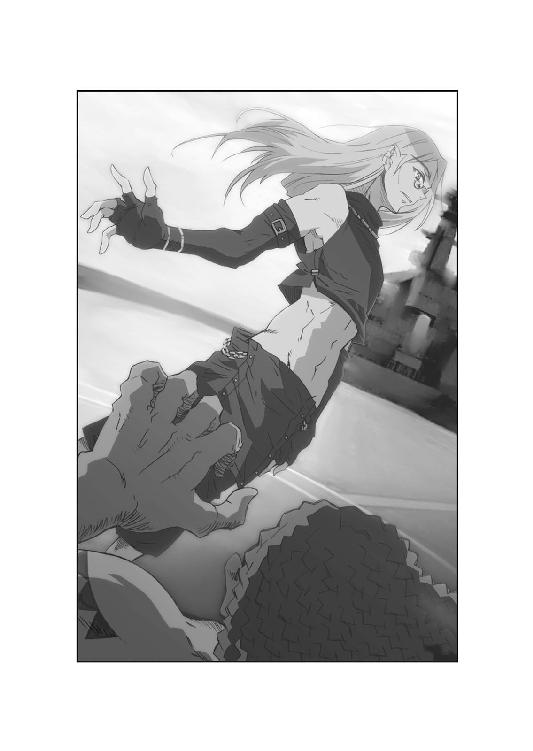
その表面に、ゼットの視線が命中したのだ。
さらに光線を受けた金属環は、絶妙な角度に視線を撥ね返す。
バイトゴゴはようやく、回転切断環のぎらつきに気づいた。
「その回転切断環......鏡か！」
ゼットが投げた回転切断環は、全面に鏡面処理が施してある。
それが光線の軌跡を変え、バイトゴゴの予測を裏切る方向から突き刺さったのだ。
「ががががががががっっ！」
悲鳴とも思えぬ叫びが、魔群の口から漏れた。
蛇眼を浴びたバイトゴゴの背は、音を立てて石と化す。
石化は見る間に全身に及び、その場で魔群は硬直した。
「き......貴様は......っ！」
「光栄に思え。ゼット・ハンニバルが倒した、最初の魔群になる事を」
もがくバイトゴゴに、ゼットが告げる。
「お前の名は永遠に歴史に刻まれる。もっとも、俺の書く歴史書だが」
「バイトゴゴっ！」
スコルツェニーも、思わず詠唱を止める。
石化は対抗文字を吞み込み、魔群の防御をも無効化した。
もはやバイトゴゴは、わずかに手を掲げるしかできない。
「ようやく得た生が......潰える......スコルツェニー様っ......総統閣下によろしく......俺の刺青はまた眠りにつく。新たな適応体と出会うまで......！」
ゼットの腕が、続けて回転切断環を投げ放った。
それはバイトゴゴの脳天に突き刺さり、石像と化した巨体を両断する。
冥界魔群は一歩も動けず、己の死を受け入れるしかない。
ニューメキシコの殺人鬼は、微塵の小石へと姿を変えた。
「門は必ず開く、バイトゴゴ」
天界魔群は、死にゆくネイティヴ・アメリカンに歯嚙みした。
「お前は先に母の墓所に逝け。よく戦ったぞ」
その言葉を聞き終えたかのように、黒い蒸気が立ち上る。
魔群の本質は、横浜を渡る海風に吹き流されていった。
それを見上げるゼットの手に、回転切断環は音もなく舞い戻った。
「残るは、お前一人だ。スコルツェニー」
ゼットは、背後で息絶えた科学者を一瞥した。
「できればサイクスに見せてやりたかったよ。グラント博士の仇討ちをな」
「大口を叩くな、ゼット・ハンニバル」
天界魔群スコルツェニーは、レイピアを掲げた。
「お前一人で、私を倒せるはずがない。ましてやロレイン・ローゼンブルグ嬢を守るなど、不相応な仕事と言うものだ」
「お前たちの言う三位一隊は崩れたぞ」
ゼットは、指の間に回転切断環を滑り込ませた。
「単品で勝負できるか、見せてみろ」
「では、披露と参ろうか」
天界魔群は、不敵を上回る微笑を浮かべる。
するとスコルツェニーの切っ先から影が伸び、薄暗闇が広がった。
やがて見る間に、飛行甲板は半球形の暗黒に覆われていく。
それはようやく姿を見せた太陽光を、完全に遮断していた。
しかも暗黒は次第に形を成し、広大な庭園へと姿を変える。
ただし木々は黒くねじれ、草花は毒々しい色合いに満ちていた。
そして地鳴り。スコルツェニーの背後に、巨大な建造物が浮上する。
白亜の宮殿は禍々しい畏怖を放ち、ゼットを圧倒せんとした。
「またウィーン観光か。頼みもしないのに」
宮殿の正体を悟って、ゼットは言った。
「一八世紀に完成したオーストリア最大の宮殿にして、ハプスブルク王朝の夏の離宮。六歳のモーツァルトがピアノ演奏を披露した場所ではないか」
「シェーンブルン宮殿で死ねる事を感謝してほしい。ここはかの女帝マリア・テレジアが愛した庭だ。我が制圧空間にふさわしく、荘厳にして美しい」
スコルツェニーは、レイピアを顔の前で構えた。
「そして我が下僕は、この宮殿の守護者なのだ」
その言葉と共に、宮殿の最上部で異変が起こる。
屋根に据えられていたのは、黒く巨大な彫像だ。
無論、ハプスブルク王朝の紋章を象ったもの。それがぐらぐらと震動する。
続けて、彫像の内部から黒い閃光が湧き起こった。
思わず怯んだゼットは、耳をつんざく叫喚を聞いた。
「双頭の鷲の旗の下に......か！」
その曲名こそ、オーストリア・ハンガリー帝国の凱歌。
ハプスブルク王朝のシンボルである、双頭鷲の像が力強くはばたいたのだ。
広げた翼は五メートルを超え、二つの首から絶叫を発する。
怪鳥は突風を巻き起こしつつ、ゼットめがけて飛翔した。
「ゼットさん！」
「伏せててくれ、すぐに終わらせる！」
叫ぶロレインに、ゼットは声を飛ばした。
「空を飛ぼうが、俺には関係ない。切り刻むだけだ」
ゼットは回転切断環を構えたが、その姿を天界魔群が嘲笑った。
「不足かね。では相手をもう少し増やしてやろうか」
合図のように、スコルツェニーは切っ先を振り上げた。
すると飛び立った双頭鷲が、空中でぼやけ始めた。
と思った時には、もうその巨体が二つに分裂している。
二体が四体に、四体が八体に。
ゼットの頭上は、見る間に鷲の群れで覆いつくされた。
一二○体を超える大群が、獲物を求めて旋回し、鳴き喚く。
ハドレー少佐は苦痛を嚙んで、己に突き刺さった槍を引き抜いた。
「船長、制圧空間に海兵隊の突入を......残存兵力を総動員して反撃......！」
その声は口元のマイクを通じて、船橋にも届いている。
ラムゼイ船長は、蝙蝠の襲撃から生き残った海兵隊員を召集した。
「突入可能な部隊は、甲板へ。全ての火器の自由使用を許可する」
蝙蝠の猛攻で疲弊したとは言え、屈強な海兵隊員は甲板へ疾走した。
二体の魔群が死んだ今こそ、反撃の機会。誰もがそう認識している。
しかしスコルツェニーにも、迫る軍靴を見過ごすつもりはなかった。
「邪魔者を屠れ。この船ごとだ」
奇声を発して、半数の双頭鷲が制圧空間を飛び出した。
駆けつける海兵隊を遮るように降下し、巨大な嘴を振り下ろす。
その一撃は強靭なヘルメットを叩き割り、頭蓋骨を打ち砕いた。
銃撃を浴びれば空中に逃れ、翼を振って強風を巻き起こす。
転倒した海兵隊員は、起きる間もなく鋭利な爪に引き裂かれた。
「前進は困難です、船長！ 制圧空間に接近できません！」
海兵隊からの叫びを、ラムゼイは苦々しい顔で聞いた。
「支援射撃を行う。各自、遮蔽物に入れ」
すでにラムゼイは、全ての双頭鷲をロックオンしている。
クリティアス号の近接迎撃兵器システムに指示を出すや、二五ミリ七連装砲が、双頭鷲めがけて猛烈な弾幕を張り巡らせた。
毎秒七○発、毎分四二○○発の弾雨をかわせるはずがない。
船橋にいる玲子も、そう思った。
だがモニターに映る双頭鷲は、自動追尾する砲口を振り切るほどの速さだった。
まるで瞬間移動でもしたかのように、船上を自在に飛び交い、弾幕を回避する。
その勇戦ぶりを、スコルツェニーは悠然と見守っていた。
「バイトゴゴの蝙蝠とは違うのだ。天界魔群の下僕を見くびったな」
双頭鷲は、そのまま船体にも襲いかかる。
球形レーダーを破砕し、死角から砲兵器をも踏み潰した。
「これでもう船の連中も手を出せまい。今度は貴様の番だ」
スコルツェニーが顔を向けると、ゼットはすでに動いていた。
ウォートラスを握り、天界魔群の頭上へ斬りかかる。
「下僕など幾らいてもかまわん、俺は王を獲る」
ゼットは、スコルツェニーの脳天に狙いを定めた。
「これで全てが終わるのだ。貴様の生も、俺の執着も！」
しかしゼットの突進を、双頭鷲が強引に阻んだ。
巨体をぶつけ、ゼットを甲板に叩きつける。
さらに別の双頭鷲も、彼の背中をカギ爪で引き裂いた。
強くバウンドするゼットに、ハドレーが思わず叫んだ。
「ゼット！」
悶絶を嚙みしめ、ゼットは天界魔群を睨む。
スコルツェニーの前には、舞い戻った双頭鷲たちが整然と列を組んだ。
しかも濃密な密集陣形。さらにゼットを包囲するように動く。
大群に向かって、スコルツェニーは刃を掲げた。
「ゼット、サイクスの道連れになるのはお前だよ」
「ぐ......っ......」
「声も出せぬのなら仕方ない。消えぬ執着を抱いて死ぬのだな」
庭園に響き渡る声に、ゼットは死を覚悟する。
だが哄笑を反響させる闇が、にわかに揺れた。
ぐらぐらと激しく、外部から圧力を加えられて歪んでいく。
双頭鷲たちも、制圧空間の異変を見上げる。
すると天井に、紅蓮の閃光が広がり始めたではないか。
「来たか......」
スコルツェニーが、頰の傷を動かす。
「鳳凰寺大牙」
炸裂。暗黒に裂け目が走る。
怒濤。真紅の閃光が闇を照らす。
疾風。彼は制圧空間を斬り破り、船上に駆け下りた。
青い翼を打ち振り、ロレインを守る位置に着地する。
大牙は鳳凰の刃を構え、暗黒の真っ只中に降臨した。
「大ちゃん！」
サイクスの亡骸を抱いたまま、少女が叫ぶ。
しかし大牙は、言葉を返しはしない。
ただ魔群に双眸を向けるだけである。
しかし少年の顔を見た時、スコルツェニーの顔が引きつった。
「貴様っ......！」
ゼットも、ハドレーも、大牙の顔に声を失う。
双頭鷲に立ち向かう彼の頰には、涙滴が伝っている。
隠しもせず、大牙は悲憤を露にしていたのだ。
だがただの涙ではない。大牙の涙は、血のように赤く染まっているのだ。
しかも鳳凰の刃と同じように、輝きすら放った。
ゼットは、涙の正体に気づいて喉を鳴らした。
「血魂か......！」
大牙の涙には、沸騰した魔群への怒りが、血涙の如く湧き出している。
大牙は顔をひと振りして、彼だけが流せる涙を拭った。
「泣いてる場合じゃないよな、ゼット」
大牙は、そう呼びかけた。
「一気に蹴散らそうぜ。ついて来いよ」
「にしては数が多いぞ。それに昨日の蝙蝠とは違う」
ゼットは、双頭鷲の大群を指した。
「怒りに任せて無謀になるな。手強いぞ」
だがゼットが躊躇しても、大牙は間合いを詰めた。
「ロレイン、数えててくれ」
「な、何を、大ちゃん......」
「サイクスの道連れだよ。たとえ化け物でも、どうせなら多い方がいい」
ロレインは、少年の背中を見つめている。
翼を生やした大牙に、ロレインは優しく答えた。
「......サイクスさん、がんばったのよ」
「分かってる。あいつと横浜の仇は討つ」
そして大牙は跳んだ。いや、消えたかに見えた。
デッキを蹴った次の刹那、彼の姿はもう大群の正面にいる。
あの双頭鷲たちですら、大牙の動きをつかめない。
驚嘆する化け物に、大牙は鳳凰の刃を振り抜いた。
「六っっ！」
ロレインの驚く声がした。
一閃した鳳凰の刃から、真紅の閃光が飛び出し敵軍を薙ぐ。
同時に六体の双頭鷲が、真っ二つに斬り離されて爆砕した。
あまりに凄絶な一撃。だが大牙は、すぐさま次の一刀を打ち下ろした。
「一四っ！」
今度は八体の敵が、何もできずに絶命していく。
さらに大牙は踏み込む。さらに刃を振るう。
「二二っ！ 五一っ！」
ロレインが見る間に、双頭鷲は群れごと両断されていった。
まるで海を押し渡るモーゼの如く、大牙は敵軍を真っ二つにしたのだ。
「退くな！ 退くな！」
スコルツェニーは、喉を嗄らして叫ぶ。
だが双頭鷲は右往左往するだけで、反撃のきっかけすらつかめない。
その理由に最初に気づいたのは、ゼットであった。
「玄武の盾を......！」
大牙の肉体には、隈なく黒い光がまとわりついている。
玄武の盾。血魂が大牙の鎧となっていたのだ。
しかしただ守るだけではない。
黒い鎧は、大牙の周囲に無数の残像を残しているのだ。
それは大牙自身とそっくりに動き、鳳凰の刃を振るう。
まるで大牙が、無数の分身と戦っているかに見えた。
そして双頭鷲は、大牙本人がつかめず、ただ討たれていく。
高空から獲物を捕らえる猛禽の視力をもってしても、大牙をとらえきれないのだ。
その戦いぶりに、ハドレー少佐も戦慄した。
「何て男だ。ステルス戦闘機になれるとは」
「一二○っ！」
ロレインが叫ぶと、もはや大群は跡形もなくなっていた。
後に残されたのは、たった一人。
大牙は、武装親衛隊の制服に眼光を射した。
「......お前が天界魔群か」
「いかにも。オットー・スコルツェニー元武装親衛隊少将」
天界魔群は、わざとらしく拍手した。
「それにしても見事な腕前だ。昨日の失態はお芝居かな。だとすれば君は、私を上回る名優だよ。一杯食わされたというわけだ」
「男が強くなるのに、たいして時間はいらない」
大牙は、熱気を身体から発散した。
「一晩あれば十分だ。サイクスを見れば分かるだろう」
そして切っ先を、スコルツェニーに突きつけた。
「サイクスを覚悟させたのは、お前たち魔群だ。だが、あいつをああまで戦わせたくはなかった。戦場に立つのは、俺一人でかまわない」
そう言った大牙に、ゼットが倒れたまま顔を向けた。
「一人ではない。俺もいる事を忘れるな」
苦悶する顔だが、闘志だけは煮えたぎっている。
「どいつもこいつも俺の見せ場を奪っていく。俺も戦うぞ」
大牙は、すぐには答えなかった。
だが戦いの最中にしてはかなりの時間、ゼットを見据える。
その瞳は、やけに穏やかな光に変わっていた。
「......無理するな。お前だけの戦いじゃない」
「......そうだな。サイクスが教えてくれたよ」
ゼットの声にも、安らかな諦めが込められている。
大牙は、はーっと熱い呼吸を吐き、スコルツェニーに間合いを詰めた。
「罪を償いもせず、逃げるのか」
寸分の隙もなく、そう言った。
「それだけは許さない。ロレインに何をしたかも聞きたいぜ」
しかし対峙する天界魔群も、わずかに唇を曲げただけだった。
「ここまで健闘されては、退く他ないのだよ」
スコルツェニーは、表情も変えず後退した。
「それにロレイン嬢が何を見たかは、本人に聞けばいい。それを覚えているのは短い期間かもしれないが、いずれにしろ君たちにはまだ時間がある」
天界魔群は、破れたマントをひるがえした。
「しばしのお別れだ、お嬢さん。今日は諦めるが、また近々迎えに来る。その時まで、あなたの夢はしっかり守っていただきたいな」
あなたは我々の花嫁なのだから。
そう言ったスコルツェニーに、ロレインはすっくと立ち上がった。
「帰る前に、あの街を元通りにしてください」
横浜を指さして、少女は言った。
「死んだ人たちも全部生き返らせて......何もかも元に戻して。そうしたら許してあげてもいい。それができないなら......」
「できないならどうしますかな、お嬢さん」
「私は、私の中で戦うだけです」
金髪が、ざわめくように躍った。青い瞳が、強い光を魔群に放つ。
ロレインは臆する事なく、スコルツェニーに歩み寄った。
「決してあなたたちを許さない。私の父と母を奪い、大ちゃんのお母さんを奪った罪も、必ず償わせてみせる......必ずこの刺青に......！」
「ロレイン......」
大牙は、少女のそんな声を初めて聞いた。
さらに眼光も、全身からあふれる信念も。
大牙ですら退くほどの凄みを、ロレインは放っていたのだ。
その姿に、スコルツェニーは口元を緩めた。
「嫌われたものですなあ、それは」
どこか喜ぶような声音。
するとスコルツェニーの背後に、魔群文字が方形に組まれた。
異空間への脱出路なのか。天界魔群はその中心へ身を寄せた。
「逃がすな、大牙！」
ハドレー少佐が、声を荒らげた。
スコルツェニーをここで仕留めねば、再びどんな謀略を使われる事か。
その懸念はハドレーだけでなく、大牙にもあった。
しかしスコルツェニーは、すでに脱出路へ踵をかけている。
鳳凰の刃が届く前に、たやすく逃げられるだろう。
大牙は一瞬思考を巡らせ......そして侮蔑の笑みを浮かべた。
「スコルツェニー、俺と踊ろう」
あからさまに、挑みかかる言葉だった。
大牙は、魔群の間合いに鋭く踏み込む。
その動きに、天界魔群も後退を止めた。
「言うものだな、その年齢で」
スコルツェニーは脱出路から飛び出し、レイピアを突き入れた。
風をきる刃は狡猾にしなり、切っ先は予測できぬ方向から襲いかかった。
大牙の頰が、肩が、細い刃に斬り裂かれる。
「私の剣は読めまい、鳳凰寺大牙」
返り血を浴びる天界魔群は、どこか戦いを楽しんでいた。
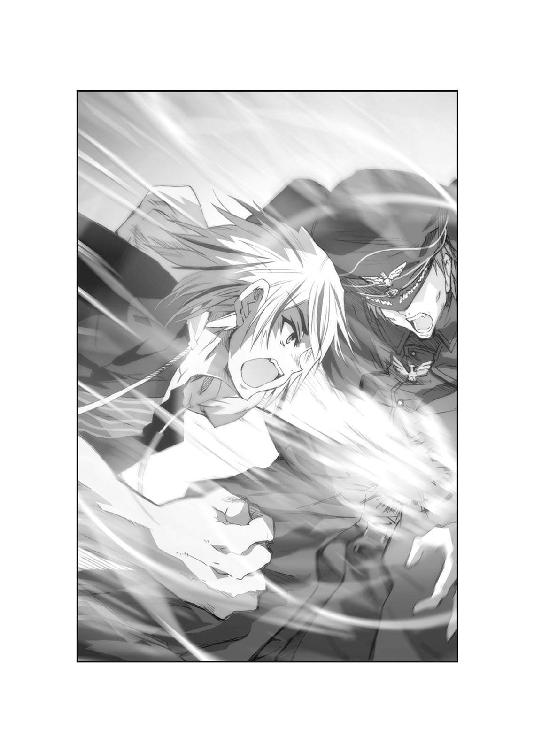
「貴様より決闘のキャリアは長いのだ。愚かな挑発だったな」
確かにスコルツェニーの剣術は、大牙の動きを上回っている。
だが大牙は、乱撃の中で静かに告げた。
「いや......もう読めたぜ」
「なんだと？」
「お前自身を」
そう言うと大牙は、発光する拳でレイピアの刃を叩き折った。
白虎の拳を打ち込まれ、細い切っ先が耐えられるはずもない。
慌ててスコルツェニーが飛び退くと、大牙も距離を詰めた。
今度は鳳凰の刃が、天界魔群の鳩尾を深々と貫く。
口を開けるスコルツェニーに、大牙は顔を寄せた。
「逃がしたくなかったんだよ、お前を」
「あ......あがっ......」
「だからあえて挑発した。決闘好きのお前なら、必ず応じると思ってな」
スコルツェニーは、刃を握る大牙を見た。
「剣を読む前に......人を読んだか」
「そういう事だ。お前の話も、小さい頃から聞かされてたからな」
「そ、それは誰に......」
大牙は、その問いには答えなかった。
代わりに刃を押し込み、切っ先を背中まで貫通させる。
「お前を、もう少し分別のある人間だと思っていたよ。いくら騙し討ちの名人でも、まさかボルマンみたいな奴と手を組むとは思わなかったぜ。戦場には出ず、総統官邸で権勢を振るう人間が、お前は嫌いだったはずだ」
「よく勉強しているな......その通りだ」
賞賛の声を、スコルツェニーは漏らした。
「だがそれは生前の話だ......死ぬ間際になって私は......勝利を渇望した。たとえ英雄と呼ばれても......敗者の側にいるのが嫌だった。まして私は......逃亡者だ。勝利者として再生できるなら、現総統だろうと利用する......」
そして天界魔群は、大牙の手首を強くつかんだ。
「勝利者として生きたいと願う心を......責めるのか」
その問いを、ゼットやハドレーも見つめている。
しかし大牙の目に、同意の気配は全くなかった。
「......お前は自分に負けただけだ。自分の欲望に従って、ずるずる生き延びたいだけなのさ。その上、勝利者だなんて笑わせる。俺はそんなぬるい人生、認めないぜ」
大牙の刃から、血魂が勢いよくほとばしる。
魔を駆逐するエネルギーに駆け巡られ、スコルツェニーは痙攣した。
「い......やだ......敗者としての名声は......もういらぬ......俺が欲しいのは勝利......勝利......それだけだ......貴様如きに俺の人生を......っ！」
大牙は、一気に鳳凰の刃を引き抜き、身を引いた。
スコルツェニーは苦痛のあまり、親衛隊の制服を引きちぎる。
その胸元で、双頭鷲の紋章が激しくのたうっていた。
「この勝利への渇望こそ......刺青を呼び寄せた力......ここで勝たねば俺は......！」
叫んだ時、スコルツェニーの体内で血魂が爆ぜた。
赤い閃光が天界魔群を粉砕し、その肉体を内側から炎上させる。
双頭鷲の刺青も黒い蒸気へと変わり、海風に溶けていく。
それを大牙は手につかみ取った。
「自分が勝者か敗者か......それを決めるのは自分じゃない」
拳に向かって、そう言った。
「決めるのは......自分を見てくれてる人だ。そうだろう？」
大牙は、再び戻ってきた太陽の下で、ゼットに問いかける。
ゼットは苦痛に顔を歪めながら、身を起こした。
「言えてるな。だが俺がすぐにお前を認めると思ったら大間違いだ」
流れる血を押さえて、ゼットは戦友に目を向ける。
「俺が決めた今日の勝者は、サイクスだ。そう言ってやれないのが残念だよ」
海風が、優しく甲板を撫でていく。
大牙は、横たわる亡骸に跪いた。
「サイクスの顔、よく見とけよ。本当に勝った奴は、死に顔まで安らかだ」
「......ああ。俺も見習うとしよう。その時が来たら」
骸を抱くロレインの顔には、大粒の涙がこぼれている。
大牙はそれを指で拭い、少女の肩を抱き寄せた。
ゼットとハドレーも、死せる勝利者をしばし見つめる。
戦士たちに交わせるものは、ただ沈黙だけであった。
会議室には、ずっと静寂が流れていた。
立体ディスプレイに映る横浜の街が、夏の日差しに照らされている。
そしてようやく内閣も、被害の大きさを目の当たりにできた。
「砂嵐は消えた。危機は去ったと見ていいのかね」
総理の問いに、官房長官が答えた。
「そう考えて間違いないと思われます。たった今、ジーゲン機関の迫水警視監と連絡が取れました。魔群は撃退。鳳凰寺大牙も無事だそうです」
おお、と内閣の面々から声が上がる。
そしてようやく彼らは、自分の任務を思い出した。
「非常事態宣言を、非常警戒宣言に変更。各省庁に連絡を頼む」
「待機中の練馬第一師団に通達。直ちに被災者救出に当たれ」
「週明けの東京市場は取引を一時停止。ニューヨークとロンドンにもそう伝えてくれ」
喧騒が会議室から出入りしていく。
そのざわめきを背に、総理は老人へ歩み寄った。
「......鳳凰寺老」
「始まったな」
誰もが終結に忙殺される中、無頼はつぶやいた。
「今回の一件で、魔群は出方を切り替えたぜ」
「と申されますと？」
「公に姿を見せたって事よ」
無頼は、重厚な椅子にゆったりと背中を任せた。
「恐らく、示威の意味合いもある。人間を超越した存在が、人間を狙っている。それを教えたかったんだろう」
「そして人間の抵抗を挫こうとでも？」
「それだけなら可愛いものだぜ」
深いため息と共に、老人は目を閉じた。
「魔群の力を見て、魔群になびく人間も増えるはずだ。やがて魔群を巡って人間同士が対立し、殺し合うようになる」
「そんな......」
「噓じゃない。魔群が操ったメッサーシュミットは、多くの人間が目にしているだろう。映像が撮られていれば、すぐに全世界へ知れわたる。そうすれば、あの力を欲しがる人間だって現れるはずだぜ」
総理は、再び立体ディスプレイを見た。
ＮＨＫのニュースは、まだ災害現場を映すだけだ。
プロペラ戦闘機も、翼を持った少年も出ていない。
しかし総理の喉は、緊張に震えた。
「しばらくは否定も肯定もしません」
言下に告げると、総理は身を引き締める。
「人々の間に魔群の噂が広まっても、話はあまりにも荒唐無稽だ。誰もが確信できるまでには、まだ時間があると考えます」
「だろうな。その間に、俺たちが何とかしよう」
無頼は、頭を搔いて立ち上がった。
「噂が噂のまま、終わってくれればそれで済む」
「どうするおつもりです、鳳凰寺老」
総理は、老人に詰め寄った。
「我々を守ってくださる、何か良いお知恵でも......」
「焦るな。そうすぐ出るものじゃねえ」
無頼は、傷だらけの顔で笑った。
「まずは孫たちの顔を見てからだ。結局戦うのは大牙と......ロレインだからな」
そう言って無頼は、ざわめく会議室から退出する。
去っていく老人を、気にかける者など皆無だった。
まして老いた背中に、みなぎる闘志を感じた者などいはしない。
日本政府は復興に奔走するだけで、精一杯だったのだ。
【終章・一】
なだらかな緑の斜面に、その山荘はあった。
青空と木々に囲まれた瀟洒な建物は、まるで絵葉書のような景観だ。
寝室の大きな窓は開け放たれ、たっぷりと朝の風を取り込んでいる。
その寝室のベッドに、彼は腰を下ろしていた。
「感じるよ、スコルツェニー。君たちが受けた憎悪を」
モーゼルワインの入ったグラスをつまみ、男は言った。
黒い親衛隊の制服。総統にしては、簡素な出で立ちだ。
「港町ひとつ潰した程度で、ずいぶんと憎まれたものだね。おかげで君たちは適応体を失ったわけだ。鳳凰寺大牙とその一味は、つくづく非道な輩だよ」
総統は、テーブルに向かってグラスを掲げる。
朝日に照らされた卓上には、三つの首があった。
スコルツェニー。バイトゴゴ。そしてマルセイユ。
三人の魔群は、穏やかな死に顔で並んでいた。
「だがね、君たちの死は無駄にしないよ。私は必ずこの地上に、第四帝国を建設してみせる。それは選ばれた者だけが集う、真に自由な国家となるだろう」
総統は、モーゼルワインを一口含んだ。
「もっとも、無知蒙昧なジーゲン機関の連中は誤解している。私がまだナチスの教義にとらわれ、未だに選民思想に凝り固まっていると信じているのだ。しかしそれは間違いだ。大きな間違いなんだよ」
笑みすら見せて、総統は続けた。
「アーリア民族に固執するなら、私がバイトゴゴやヴォウ老人を使うはずがなかろう。新たな帝国に参画するのは、民族に関係なく、真に優れた人材なのだ。それを見極められるのは唯一、神だけだ。そして現世において、魔群は神に等しい」
冷たい風が、窓から吹き込んできた。
すると三つの首は、黒い蒸気と化して空に消えていく。
新たな適応体を総統が探してくるまで、魔群の実態は再び眠りについたのだ。
その様を、総統は座ったまま見送っていた。
「人間は、人間を推し量る物差しをいくつも考えてきた。知性、身体能力、出身階級......だがどれも不完全だった。どれも真に優れた人間を見いだす事はできなかった。しかし魔群は知っている。七十五億の全人類から、他を圧倒するほどの渇望を持つ者を見つけだし、刺青を記す。彼らの英知が、我が帝国の基準となるのだ」
総統は、不意に笑いを嚙み殺す。
「本当は前総統も知っていたのだよ。アーリア民族に固執する愚をね。覚えているだろう、武装親衛隊のなれの果てを。当初は純血アーリア民族でなければ入隊できず、一○○年前の家系図まで調べあげられたものだ。しかし戦火の中で彼らはすり減り、とうとう異民族まで受け入れるはめになった。義勇兵に至っては......インド人部隊までいたじゃないか！ 前総統はおかんむりだったが、彼は自分で自分の首を絞めたのだ」
ひとしきり笑って、男は頰を撫でた。
「私はそんな愚は犯さない。魔群に選ばれた者なら、どの民族であろうと麾下とする。そして彼らが......君たちがすり減る事は決してない。新たな適応体さえあれば、魔群は永遠に戦い続けるのだ」
男は、自分が腰掛けるベッドを振り返った。
白いシーツの上には、五人の裸女が汗にまみれて寝そべっていた。
さらに床には三人。ソファにも二人。白人、アジア系、ラテン系......
妖艶な大人から、幼い少女まで、味わいの異なる女たちが群れていた。
「私の渇望も止みはしない」
総統は、笑って立ち上がった。
「最初に溺れた女は、一○歳年上だった。勤め先の農場主夫人......夫に隠れて馬小屋で交わる興奮は今でも覚えているよ。あれ以来、私は渇き続けているのだ」
彼の足下に、女たちが這いずってきた。
崇拝するように指を伸ばし、男の身体を愛撫する。
その様を、満足げに男は見下ろした。
「三六の天界魔群の中で、私ほど飢えた者はいない。だからこそどうしても、あの門をこじ開けたいのだ。ロレイン・ローゼンブルグという門を......」
朝日が急に消え失せた。突然の暗転。黒雲が山荘を覆い尽くす。
やがて雷鳴が響くと、一○人の女の、異なる悲鳴がこだました。
突然の豪雨が降り続く中、マルティン・ボルマンの饗宴はいつまでも続いていた。
【終章・二】
クリティアス号の広い船室には、負傷した乗員がひしめいていた。
すでに船外へ空輸された重傷者もいるが、なおもその数は多い。
大牙は日が傾くまで、重傷者たちを活法で治癒していった。
「ありがとう。あなたももう休んで」
ラムゼイ船長は、大牙にドリンクチューブを渡した。
「ろくに食事もしてないんでしょう。一息入れないと、あなたまで倒れるわ」
「これぐらいで倒れる俺じゃないですよ」
大牙が言うと、船長は長い睫を震わせた。
「ランドマークタワーに行ってる海兵隊から連絡があったわ。グラント博士の遺品を回収したそうよ」
「サイクスの遺体と一緒に持ち帰るのか」
「ええ。ずっと一緒に戦った仲間だもの」
大牙は黙って、その場を離れた。
船室の一隅では、ロレインも額の汗を拭っている。
医療班に交じって手当てをしていた彼女も、ようやく白衣を脱いだ。
だがそのまま彼女は船室を出ると、デッキへ通じる階段を上がっていく。
大牙は、その姿を気にしながらも、ひとつのベッドに歩いていった。
「済まなかったな」
ドリンクチューブを口にして、大牙はどっかと椅子に腰掛けた。
すぐ傍のベッドには、ゼットが横たわっている。
彼の表情を見もせずに、大牙は言葉を続けた。
「お前一人にロレインを任せちまって......」
「俺を格下扱いするな。あれこそ、俺の望む戦場だ」
ゼットも、天井を見上げたまま応える。
「ディートリッヒ大佐は、今日のために俺を鍛えてくれた。その成果が一○○パーセント出せたとは言わないが、及第点はいただけるだろう」
「へえ、親父の採点ってのは甘いもんだな」
「こういう場合、実の息子の採点が厳しくなるものだ。もっともお前の場合、大佐殿に愛された記憶もないだろう。一緒に過ごした時間も、俺の方がずっと長い」
ゼットの顔は、それをどこか勝ち誇る風である。
しかし大牙には、そんなゼットが妙に微笑ましく思えた。
「確かに親父の事は、お前の方がよく知ってるはずだ。俺は顔すら覚えてない」
「不肖の割に、いい線まで育ったと報告しておこう」
「だけどなあ、俺は思い出したんだよ」
大牙は、鼻の頭を搔いた。
「お袋が死んだ時の事を、最近になって思い出した。あれから幼い頃の記憶がだんだんよみがえってきたんだ」
「ほお。しかし大佐殿がお前と過ごした時間は......」
「ごくわずかだ。だからこそ鮮烈に思い出してきた」
大牙は、冷たいドリンクを喉に流す。
「あれはたぶん、お袋が死んだ後だ。誰か大きい男が、ベッドにいる俺の耳元で寝物語をしてくれるんだ。それが......笑っちゃうよな、戦争の話なんだぜ。ロンメル将軍の活躍だとか、ティーガー戦車がどんなに強いかとかさ」
「おい待て、だからお前は......」
「ああ。スコルツェニーやマルセイユ大尉の話もその人から聞いた。あんな話を最近、次から次へと思い出していくんだよ」
するとゼットが、不意に大牙に視線を向けた。
その目には、言いようのない羨望がある。
だがそれを無視して、大牙は椅子から立ち上がった。
「だからな、もし親父に報告する時があったら言っといてくれ。あんたの息子は、父親を忘れたわけじゃないってな。ドイツ空軍の撃墜王の名前が、すらすら出る男に育ってるって......それにしても子供を寝かしつけるなら、もっと楽しい話ができねえのかな」
「......できんだろう。あの方には」
「そういう親父か。ありがとうよ、教えてくれて」
大牙は、背中を向けたまま船室から出ていった。
残されたゼットが呆然とすると、隣のベッドでハドレー少佐が上体を起こした。
「顔が負けてるぞ、ゼット」
「愛弟子が実子に敗れても、悔しくはない」
ゼットは、わざとらしく笑った。
「それに大牙の力量も分かった。次に戦う機会があれば必ず奴を出し抜き、大佐殿に認めてもらうまでだ。そしてその機会はいくらでもある」
「あれで大牙も意識してるのよ」
玲子が、少しやつれた顔で近づいた。
ゼットの寝床に座ると、二人の男を見比べる。
「大牙には父親の記憶がない。だからゼットを見る事で、父親の輪郭を作ろうとしているのよ。自分の心の中にね」
するとゼットの顔が、不満げに変わった。
「ミス迫水。お優しい心は結構だが、俺にも同情してもらいたいものだ」
「あら、なんの話？」
「どうしてあなたは、俺の右足に座るのだ。しかも負傷したばかりの」
ベッドの中で、ゼットはもぞもぞと足を動かす。
「知ってて座るとは、あからさまな嫌がらせだな。俺がいったい何をした」
「儀式空間で、ロレインを巻き添えにしかけたって聞いたわよ」
玲子が尻に体重をかけると、ゼットはのけぞって悶絶した。
「つ、告げ口は卑怯ですな、ハドレー少佐。俺は任務に忠実に働いただけだ」
「では吐け。大佐殿に命ぜられた任務とはなんだ」
「わざわざ言うまでもなく、御存知のはずですが」
ゼットは、苛立ったように髪を搔いた。
「もしもの場合、ロレインを殺せ。それがディートリッヒ大佐の御命令です」
「それがあなたにできるの？」
「少なくとも大牙にはできない。そして俺は大佐殿の命令なら......」
「なんでも遂行してみせるか。確かにお前は、大佐殿の愛弟子だよ」
玲子は、指をぎゅっと組み合わせて祈った。
「もしもの場合なんて、来なければいいわね」
「もう来ている可能性もある」
ハドレーは、西陽の射す窓を見つめた。
「黒い泡の中で、彼女はどんな夢を見たんだろうな」
それを思い描いて、三人は沈黙する。
答えをまず確かめるのは、彼らの役目ではなかったのだ。
大桟橋で、クリティアス号はたっぷりと夕陽を浴びていた。
水面はオレンジ色に輝き、穏やかに波打っている。
西を見れば、混乱の続く横浜の街から無数のサイレンが聞こえた。
だが少女はそれに背を向け、暗くなる東の海に瞳を落としている。
大牙は、軽く足音を立ててロレインに歩み寄った。
「ロレイン、あのさ......」
「......大ちゃん、もうちょっとだけ」
少女は、振り向きもせずに言った。
「もうちょっとだけ、ここにいさせて。怪我してる人たちの手当てしたら、少しは忘れられると思ったんだけど......やっぱりまだ......」
デッキに立つロレインの顔には、疲労がありありと浮かんでいた。
しかしそれが、ロレインの表情を妙に大人びさせている。
大牙は、風になびく彼女の金髪にそっと触れた。
「お前は、誰よりも強い。今までどんな事でも受け止めてきた。だけど一人で背負いきれない時は、俺が半分かついでやるよ」
ロレインは黙って、大牙を見つめる。
瞳に浮かぶ躊躇を察して、大牙は少女の手を握った。
「お前、黒い泡の中でなにを見た？」
「............」
「俺の夢を見たかもしれないって言ってただろ。それ、思い出せたか？」
するとロレインは、大牙の手を振りほどいた。
まるで逃げるように。何かを恐れるように。
「ごめんなさい、大ちゃん。私......噓ついてた」
「噓......？」
「本当はね、覚えてるのよ、全部。どんな夢だったか......はっきり......」
目を伏せて告白する。その姿は懺悔するかのようだった。
「刺青が見せた夢は、きっと私の気持ちなの。それはまだ小さいけれど......私の中にある刺青を引き寄せた原因よ」
「馬鹿な事、言うなよ」
大牙は、荒い息を吐いた。
「それは刺青のついた噓だ。お前にそんなものがあるワケないだろ」
「ううん、私には分かるの。あれは本当の私の気持ち」
少女の自信に満ちた声に、大牙は息を詰まらせた。
「その夢、俺に言えるか？」
「だめよ、言えない。絶対に言えないわ。特に大ちゃんには」
「なんだよ、それ。いったい俺はお前の夢で......」
「もう聞かないで。女の子には言いたくない事もあるのよ」
思い出したのか、ロレインは首まで真っ赤に染めていく。
服の裾を引きちぎらんばかりに握る姿に、大牙は勘を働かせた。
「分かったよ、ロレイン。もう夢の話はきかないさ」
「うん、ありがと」
「その代わり、最後に俺の質問に答えてくれ。イエスかノーで」
「え？ え？」
「夢の中で、俺は服を着てたか？ イエス・ノーどっちだ？」
「そそそそんなの答え......」
「じゃあもうひとつ。お前は服を着てたか？ それだけ答えろ」
「イイイイエスよ、イエス！ イエスに決まってるでしょ！ 絶対イエス！」
さっきよりも赤い顔で、ロレインは両手を振り回す。
ぽかぽかと胸を叩かれながら、大牙は頰を指で搔いた。
「まいったな。カマかけたつもりだったけど、本当にそんな夢見てたのか」
「違うもん！ あーもう大ちゃんの意地悪！」
「そんなに恥ずかしがるなよ。でもそんな夢なら、俺も見てるぜ」
言われて、ロレインは急に動きを止めた。
まじまじと大牙を見上げ、やがてうつむく。
大牙も頭髪を搔いて、少女から視線を逸らした。
「だって俺も男だぜ。それに夢の相手がお前だったら、かまわないだろ？」
「そんなの......そんなの答えられない」
「まあいいや。だけどどうせ同じ夢見てるなら、刺青も俺に乗り移ればいいのにな」
大牙は、そっとロレインの左腕を取った。
透けるような白い肌に、刺青は鮮やかに刻まれている。
それに向かって、大牙は歯を剝き出した。
「なあ、聞こえてるんだろ。黙ってないで返事しろよ」
すると刺青は、ゆっくりと四肢を動かした。
顔を大牙に向け、誘惑の視線を投げかける。
淫らな痴態を、ロレインは悔しげに指で弾いた。
「女王魔群って言ってたわ、この刺青」
「魔群なのか......やっぱり」
「うん。私の身体を、いつか乗っ取ってみせるって」
大牙の背筋を、とうとうその実感が走り抜けた。
だが現実と向き合った瞬間、闘志が湧き起こる。
「だったら俺も言ってやる。いつまでもそこにいられると思うなよ」
淫靡に笑う刺青に、大牙は告げた。
「そして二度と夢を覗くな。俺たちの夢を」
「大ちゃん......」
ロレインが恥ずかしそうに顔を伏せると、刺青は小さく微笑んだ。
〈育てなさい、楽しい夢を〉
〈それがわたしの糧となり、肉体となる〉
〈幼い恋人たちに、闇から永劫の祝福を〉
大牙は、刺青に手を伸ばすが、妖女も素早くロレインの服の中に消え失せる。
姿を隠した刺青に、大牙は声音を吐いた。
「見てろよ、立派に育ててみせるさ」
そしてロレインを抱き寄せる。
「俺たちの夢は、そんなにヤワじゃない」
ロレインの手も、大牙の背中を包んだ。
潮の匂いに包まれて、二人はいつまでも抱きしめ合う。
互いの唇が触れ合ったのは、夜空に星が瞬く頃だった。
あとがき
歩くのが好きです。
原稿書きで身体がなまると、すぐ散歩に出ます。
大ざっぱな記憶と勘を頼りに、知らない街を西へ東へ。
思わぬ場所で居心地のよい喫茶店に出会ったり、シブい古書店やプラモデル屋を発見して探索に没頭する事もしばしば。
気分は、ぶらり途中下車の旅。（下車してないけど）
でも、寄り道しにくい時間帯も歩きますよ。
先日も終電のなくなった新宿から、千葉の自宅まで歩こうと決意。
同席されてた皆さんから「またまたご冗談を」「て言うか絶対無理っしょ」「死にます」「山賊に襲われる」とあたたかいお言葉をいただいて、いざ出発。
ウォーカーズハイ状態で深夜の東京を黙々と進み、途中ファミレスでケーキ休憩を挟んだものの、始発が動くまで四時間ほど歩いてました。
かつて埼玉の奥地から都心まで五○キロを歩いた身には、山手線横断なんて軽い軽い。
勿論、道に迷った経験も数知れず。
行き止まりの埋め立て地をさまよった時は、怖かったなあ。
子牛ほどもある野犬が二匹、廃車の中からじっと僕を見てるんだもの。
あれ絶対、喰われると思いました。いやマジで。
他にも自宅から東京ディズニーランドまで歩いたあげく入園もせず帰るとか、富士見書房で打ち合わせした後にアイデアが浮かばぬまま一○キロ歩くとか、某霊園で散歩中に原因不明の痛みが全身に走る、などという日常を送ってるわけです。
そんな話をブログに書くと、友達から「お前、歩きすぎ」のメールが殺到。
さらに「電車使え」「タクシー乗れ」「せめて自転車」「ペーパードライバーを返上して車を買え、そして俺を遊びに連れて行け」とも。
いやあ、みんな真っ当な意見だなあ。
乗り物の方が速いし疲れないし、何より効率的だもんね。
それでも、僕は歩き続けます。
たとえ速度は遅くても、これが僕に合ったスピードだから。
途中休んだり、寄り道したり、道に迷うのも全然あり。
むしろ体力もないのに、無理に走るのはやめよう。
僕を抜き去る車や電車を見て、焦る必要もなし。
楽はしないけど、自然なペースで生きるって感じかな。
でも一応、仕事のスピードだけは上げたいと思ってますよ。
本作を書くにも、ずいぶん寄り道しましたけどね。
果たして本当に横浜中華街で豚角煮まんを食べ、山下公園でハトと戯れ、大桟橋で客船飛鳥を眺め、ランドマークタワーでカクテルを飲む必要があったのでしょうか。
そしてまたマルセイユ大尉仕様のメッサーシュミットをプラモデルで組み立て、スコルツェニーの活躍をウォーゲームで確かめる必要があったのでしょうか。
うん、きっとあったと思う。あった気がする。あったらいいなあ......。
なにはともあれ、これからも遊び心を忘れずに歩き続けます。
近いうちに、またお目にかかりましょう。それでは！
二○○五年七月 市川 丈夫
TATTOO BLADE ２
市川丈夫
平成27年1月13日 発行
発行者 郡司 聡
発行所 株式会社ＫＡＤＯＫＡＷＡ
〒102-8177 東京都千代田区富士見2-13-3
03-3238-8745（営業）
http://www.kadokawa.co.jp/
企画・編集 富士見書房
03-3238-8585（編集）
http://fujimishobo.jp
(C)Takeo Ichikawa, Yumehito Ueda 2005
本電子書籍は下記にもとづいて制作しました
富士見ファンタジア文庫『TATTOO BLADE 2』平成17年8月25日初版発行